- 1 introduction
- 2 Embedded Architectures
- 3 Sensors and Sensing
- 4 Real-Time Operating Systems
- 5 Scheduling for Real-Time Systems
- 6 Control Theory
- 7 Actuation
- 8 State Estimation
- 9 Sensor Fusion
- 10 SLAM
- 11 Path Planning
- 12 Object Detection and Avoidance
- 13 Safety and Standards
- 14 Security for Autonomous Systems
1 introduction
1.1 autonomy
what is “autonomy”?
we see various examples of it…


1.1.1 what are the aspects of autonomy?
| perception | how do you “see” the world around you? |
| sensing | various ways to perceive the world around you (e.g, camera, LiDar) |
| compute | what do you “do” with the information about the world? |
| motion | do your computations result in any “physical” changes? |
| actuation | what “actions”, if any, do you take for said physical changes? |
| planning | can you do some “higher order” thinking (i.e., not just your immediate next move) |
1.2 let us define autonomy
| Autonomy is the ability to perform given tasks based on the systems perception |
 |
1.3 autonomous systems
| cyber |  |
 |
 |
| physical |  |
 |
 |
hence, they fall under the class of systems → cyber-physical systems
1.4 sensors and actuators…
|
|
…are everywhere!
the embedded components → interactions with the real world
1.5 sensing and actuation in the real world
consider the following example of two cars… 
the second car is approaching the first 
sensors → constantly gathering data/sensing
- periodic sensing

on detection (of other car) → quickly compute what to do
- periodic sensing
- computation

take physical action (actuation) → say by braking in time
- periodic sensing
- computation
- actuation

- periodic sensing
- computation
- actuation

“control”
Remember this → on detection (of other car) →
“quickly” compute → complete computation/actuation → before a deadline
This is a real-time system.
1.5.1 Come back to sensing
Multiple sensors in an autonomous vehicle → need to combine them somehow
sensor fusion
Once we have information from the sensors (fused or otherwise)…

We need state estimation (kalman filter, ekf).
1.6 Overview/Architecture of Autonomous Systems
So far, we have (briefly) talked about…
Sensing:

Actuation:

But the system includes…an operating system (OS) in there

and it includes real-time mechanisms.
We have briefly discussed, EKF:

note: ekf is versatile; can be used for sensor fusion, slam, etc.
All of it integrates with…control:

There are some real-time functions in there…
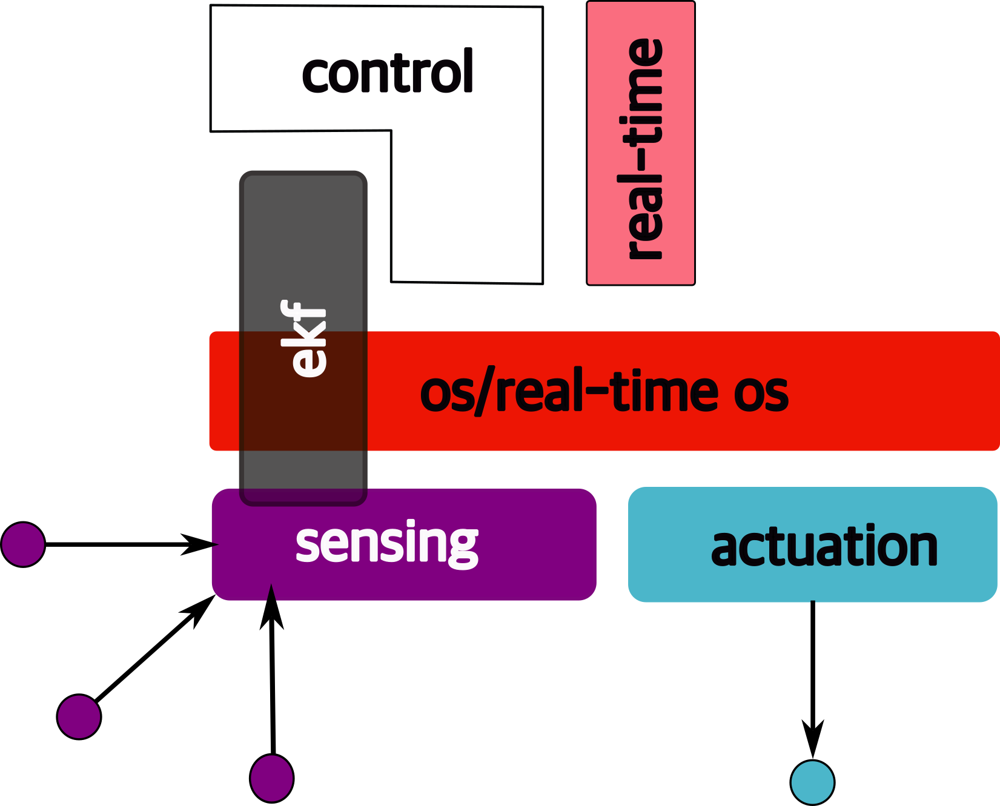
like braking, engine control.
Question: if we design such a system…
is it “autonomous”?
We are missing some “higher order” functionss from the perspective of the autonomous system:
- where am I?
- where do I need to go?
- how do I get there?
- what obstacles may I face?
- how do I avoid them?
let us not forget the most important question of all…

why is gamora?
1.6.1 high-order functions
In order to answer the following, we need additional functionality. Let us go through what that might be.
1.6.2 slam
Simultaneous localization and mapping → figure out where we are.

1.6.3 waypoint detection
Understand how to move in the right direction at the micro level, i.e., find waypoints.
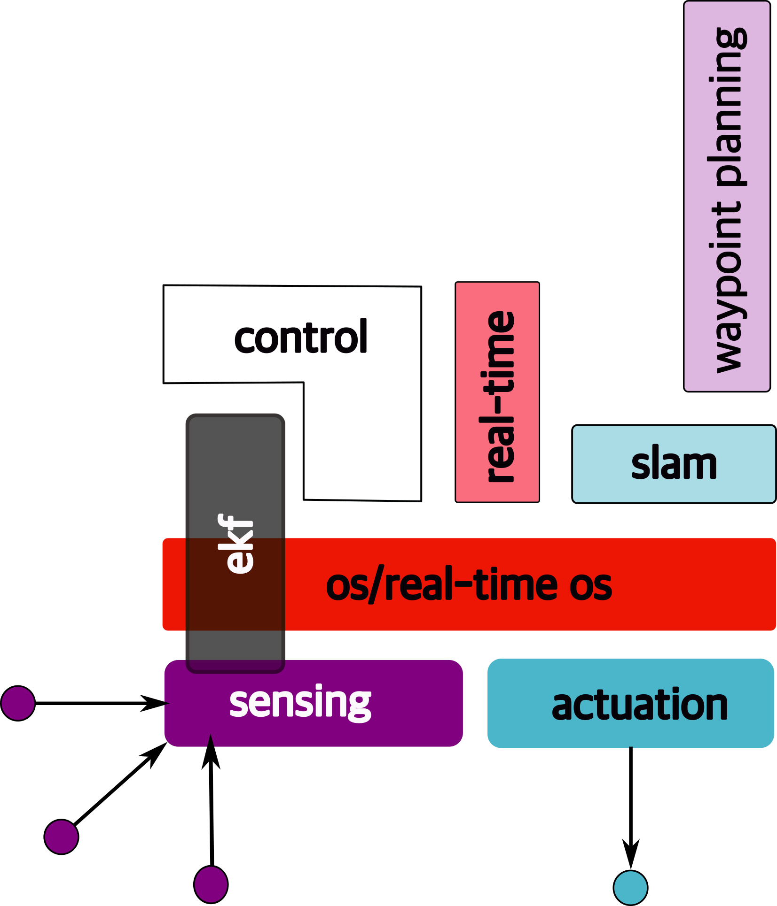
1.6.4 yolo
Is it “you only live once”? Actually this stands for: “you only look once”. It is an object detection model that uses convolutional neural networks (cnns)

1.6.5 object avoidance
The objective is to avoid objects in the immediate path.

1.6.6 path planning
i.e., how to get to destination at the macro level → uses waypoints.

1.6.7 compute platform
To run all of these functions, we need low power, embedded platforms.
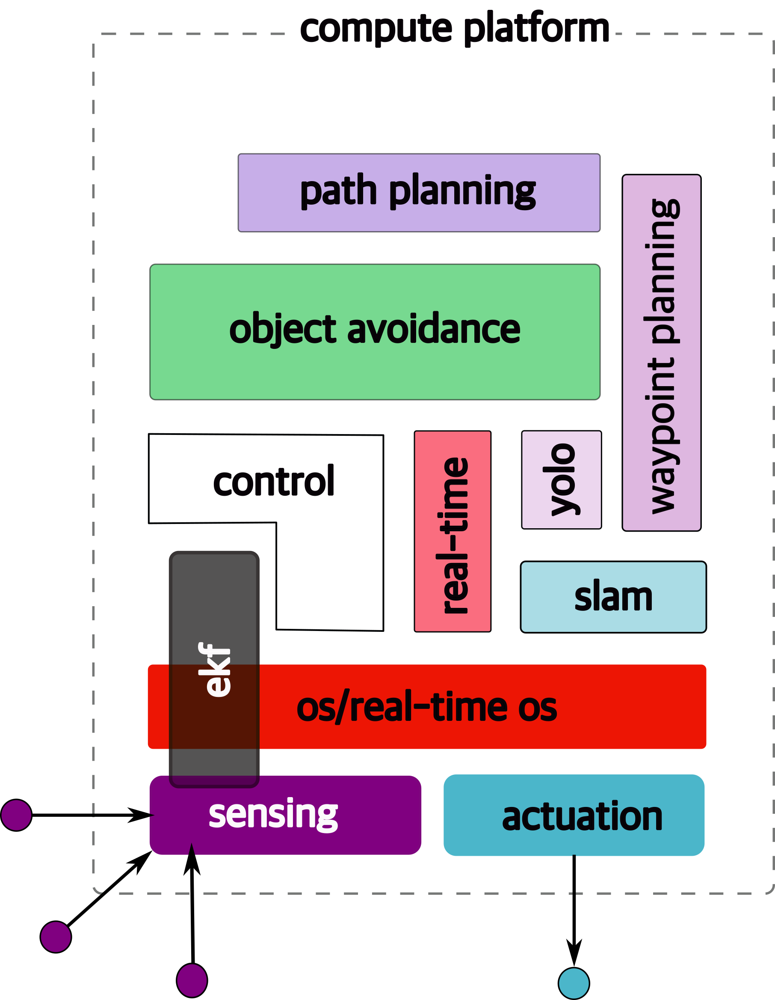
1.6.8 still some non-functional requirements remain
any guesses what they could be?
1.6.9 safety!
Essentially safety of → operator, other people, the
vehicle, environment This is cross-cutting
issue → affected

1.6.10 security
Security is another cross-cutting issue →

1.6.11 Course Structure
Hence this figure is a (loose) map of this course:
2 Embedded Architectures
Just like “autonomy” describing and “embedded system” is hard. What (typically) distinguishes it from other types of computer systems (e.g., laptops, servers or GPUs even) is that such systems are typically created for specific functionality and often remain fixed and operational for years, decades even.
Embedded systems often trade off between performance and other considerations such as power (or battery life), less memory, fewer peripherals, limited applications, smaller operating system (OS) and so on. There are numerous reasons for this – chief among them is predictability – designers need to guarantee that the system works correctly, and remains safe, all the time. Hence, it must be easy to certify 1 the entire system. This process ensures that the system operates safely.
2.1 The wcet problem
One piece of information that is required to ensure predictability and guarentee safety is worst-case execution time (WCET). The WCET/BCET is the longest/shortest execution time possible for a program, on a specific hardware platform – and it has to consider all possible inputs. WCET is necessary to ensure the “schedulability”, resource requirements and performance limits of embedded and real-time programs. There are lots of approaches to computing the WCET, e.g.,
- dynamic/empirical analysis → run the program lots of times (thousands, millions?) on the platform and measure it
- static analysis → analyze the program at compile time to compute the worst-case paths through the program
- hybrid → a combination of the two
- probabilistic → a combination of dynamic analysis+statistical methods
- ML-based methods → applying machine-learning to the problem
At a high-level, the execution time distributions of applications look like:

WCET analysis is a very active area of research and hundreds of papers have been written about it, since it directly affects the safety of many critical systems (aircraft, power systems, nuclear reactors, space vehicles and…autonomous systems).
There are structural challenges (both in software and hardware) that prevent the computation of proper wcet for anything but trivial examples. For instance, consider,
void main()
{
int max = 10 ;
int sum = 0;
for( int i = 0 ; i < max ; ++i)
sum += i ;
}How do you compute the WCET for this code? Say running on some known processor, P?
Well, there’s some information we need,
- how long each instruction takes to execute on P
- how many loop iterations?
- what is the startup/cleanup times for the program on P?
Let’s assume (from the manual for P), we get the following information,
1 void main() // startup cost = 100 cycles
2 {
3 int max = 15 ; // 10 cycles
4 int sum = 0; // 10 cycles
5 for( int i = 0 ; i < max ; ++i) // 5 cycles, once
6 sum += i ; // 20 cycles each iteration
7 } // cleanup cost = 120 cyclesSo, based on this, we can calculate the total time to execute this program:
wcet = startup_cost + line_3 + line_4 + loop_startup_cost + (line_6 * max) [1]
wcet = 100 + 10 + 10 + 5 + (20 * 15)
wcet = 425 cycles
Now consider this slight change to the above code:
void main( int argc, char* argv[] )
{
int max = atoi( argv[1] ) ; // convert the command line arg to max
int sum = 0;
for( int i = 0 ; i < max ; ++i) // how many iterations?
sum += i ;
}The problem is that equation [1] above fails since we no
longer know the value of max. Hence the
program can run for any arbitrary amount of time,
depending on the given input! Note that
none of the aforemention wcet methods will
help in this case since the input can be completely
arbitrary. Hence, the structure of the software code can
affect wcet calculations.
Another problem is that of hardware (and interactions between hardware and software). Now consider if we modify the original code as,
#define VERY_LARGE_ARRAY+SIZE 1>>18
void main()
{
int first_array[VERY_LARGE_ARRAY_SIZE] ;
int second_array[VERY_LARGE_ARRAY_SIZE] ;
int sum_first = 0;
int sum_second = 0;
for( int i = 0 ; i < VERY_LARGE_ARRAY_SIZE * 2 ; ++i)
{
if( i%2 )
first_sum += first_array[i/2] ;
else
second_sum += second_array[(int)((i/2)+1)] ;
}
}Now, while we can compute, using equation [1] the wcet
from the code perspective (since we know the loop runs for
VERY_LARGE_ARRAY_SIZE * 2 iterations), there
will be significant non-obvious hardware issues, in the
cache. Each iteration is accessing a
different large array. Hence, it will load the
cache with lines from that array and in the very next
iteration the other array will be loaded, also missing
in the cache. For instance,
| iteration | operation | cache state | reason |
|---|---|---|---|
| 1 | first_array loaded |
miss | evicts whatever was previously in cache |
| 2 | second_array loaded |
miss | evicts first_array due to
lack of space |
| 3 | first_array loaded again |
miss | evicts second_array due to
lack of space |
| … | |||
Hence, this program will constantly sufffer cache misses and since caches misses (and reloads) are expensive (in terms of time), the loop’s execution time will balloon out of control! Hence, even though we fixed the code issue (upper bound on number of iterations, hardware artifacts can change the wcet calculations). So now, we need to model cache behavior for each program and data variable! This is notoriously complicated even for the simplest of programs.
Other hardware designs further complicate matters, e.g.,
- processor pipelining
- prefetching
- branch prediction
- multithreading
- multicore systems
- memory buses
- networks-on-chip
- and too many others to recount here…
Any contemporary processor design that improves performance, turns out to be bad for wcet analysis. So, the fewer (or simpler versions of) these features, the better it is for the (eventual) safety and certification of the system.
This is one of the main reasons why embedded (and especially real-time) systems prefer simpler processors (simple pipelines, fewer complex features, simpler memory/cache architectures, if any) since they’re easier to analyze. In fact, many critical systems (e.g., aircraft, cars, etc.) use older processors (often designed in the 1980s and 1990s) – even the ones beind design today!
2.2 Embedded Processors
Just as embedded systems are varied, embedded processors come in a myriad of shapes and sizes as well. From the very small and simple (e.g., DSPs) to the very large and complex (modern multicore chips, some with GPUs!). Here is a (non-exhaustive) list of the types of embedded processors/architectures in use today:
- Microcontrollers
- Digital Signal Processors (DSPs)
- Microprocessors of various designs and architectures (e.g., ARM, x86)
- System-on-a-Chip (SoC)
- Embedded accelerators
- ASICs and FPGAs
2.2.1 Microcontrollers
According to Wikipedia,
“A microcontroller (MC, UC, or μC) or microcontroller unit (MCU) is a small computer on a single integrated circuit.”
These may be among the most common type of “processors” used in embedded systems. According to many studies, more than 55% of the world’s processors are microntrollers! Microcontrollers are typically used in small, yet critical, systems such as car engine control, implantable medical devices, thermal monitoring, fault detection and classification among millions of other applications.
Microcontrollers hardware features typically include,
| component | details |
|---|---|
| one (sometimes more) CPU cores | typically simple 4 or 8 bit
chips |
| small pipelined architectues | sometimes 2 or 4 stage
pipelines |
| some limited memory | typically a few hundred kilobytes, perhaps in the form of EEPROMs or FLASH |
| some programmable I/O | to interact with the real world |
| low operating frequencies | e.g., 4 KHz; simpler/older processors, yet
more predictable |
| low power consumption | in the milliwatts or microwatts ranges; might even be nanowatts when the system is sleeping |
| interrupts (some programmable) | often real-time (ficed/low latency) |
| several general-purpose I/O (GPIO) pins | for I/O |
| timers | e.g., a programmable interval timer (PIT) |
There are some additional features found on some microcontrollers, viz.,
| component | details |
|---|---|
| analog to digital (ADC) signal convertors | to convert incoming (real-world, sensor) data to a digital form that the uC can operate on |
| digital-to-analog (DAC) convertor | to do the opposite, convert from digital to analog signals to send outputs in that form |
| universal asynchronous transmitter/receiver (UART) | to receive/send data over a serial line |
| pulse width modulation (PWM) | so that the CPU can control motors (significant for us in autonomous/automotive systems), power systems, resistive loads, etc. |
| JTAG interace | debugging interface |
Some examples of popular microcontroller families:
 Atmel ATmega |

Microchip Technology |

Motorola (Freescale) |

NXP |
Microcontroller programs and data,
- are small –> must fit in memory (since very little expandable memory exists)
- often directly programmed in assembly!
- sometimes the assembly code might need hand tuning –> for both, performance as well as fitting into the limited memory
- C is another popular language
- no operating systems (or very rare)!
- sometimes have their own special-purpose programming languages or instructions
2.2.2 Digital Signal Processors (DSPs)
DSPs are specialized microcontrollers optimized for digital signal processing. They find wide use in audio processing, radar and sonar, speech recognition systems, image processing, satellites, telecommunications, mobile phones, televisions, etc. Their main goals are to isoloate, measure, compress and filter analog signals in the real world. They often have stringent real-time constraints.
The Texas Instruments DSP chip, TMS320 Series is one of the most famous example of this type of system:

Typical digital signal processing (of any kind) requires repetitive mathematical operations over a large number of samples, in real-time, viz., - analog to digital conversion - maniupulation (the core algorithm) - digital to analog conversion
Often, the entire process must be completed with low latency, even within a fixed deadline. They also have low power requirements since DSPs are often used in battery-constrained devices such as mobile phones. Hence, the proliferation of specialized DSP chips (instead of pure software implementations, which also exist; MATLAB has an entire DSP System Toolbox).
Typical DSP architecture/flow (credit: Wikipedia):

These types of chips typically have custom instructions
for optimizing certain (mathematical) operations (apart from
the typical add, subtract,
multiply and divide), e.g., -
saturate; caps the minimum or maximum value
that can be held in a fixed-point representation -
ed ; euclidian distance -
accumulate instructions ; for multiply-and-accumulate
operations, i.e., a ← a + (b * c)
See the Microchip instruction set details for more information for a typical DSP ISA.
DSPs require optimization of streaming data and hence, - require optimized memories and caches → fetch multiple data elements at the same time - code may need to be aware of, and explicitly manipulate caches - may have rudimentary OS but no virtual memory
2.2.3 Microprocessors
Microprocessors are, then, general-purpose chips (as opposed to microcontrollers and DSPs) that are also used extensively in embedded systems. They are used in systems that need more heavy duty computing/memory and/or more flexibility in terms of programming and management of the system. They use a number of commodity processor architectures (e.g,, ARM, Intel x86).
Main features of microprocessors:
| component | details |
|---|---|
| cores | single or multicore; powerful |
| pipelines | more complex pipelines; better performance, harder to analyze (e.g., wcet) |
| clock speeds | higher clock speeds; 100s of khz, or even
GHz |
| ISA | common ISA; well understood, not custom |
| memory | significant memory; megabytes, even gigabytes |
| cache hierarchies | multiple levels, optimized |
| power consumption | much higher, but can be reduced (e.g., via voltage and frequency scaling) |
| size, cost | often higher |
| interrupts, timers | more varied, easily programmable |
| I/O | more interfaces, including commodity ones like USB |
| security | often includes additional hardware security features, e.g., ARM TrustZone. |
The ARM M-85 Embedded Microprocessor architecture:
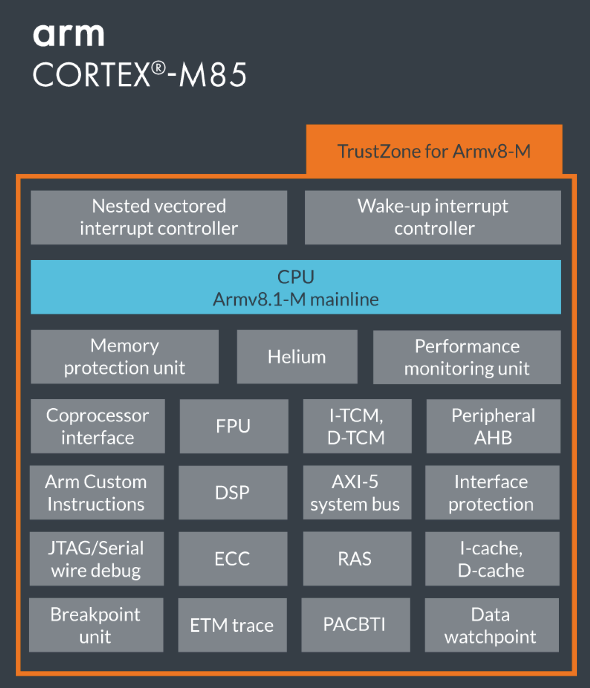
When compared to microcontrollers (or even SoCs), most microprpcessors do not include components such as DSPs, ADCs, DACs, etc. It is possible to augment the microprocessor to include this functionality → usually by connecting one or more microcontrollers to it!
On the software side, microprocessors typically have the most flexibility:
- general purpose operating systems (e.g., Linux, Android, Windows, UNIX, etc.)
- most programming languages and infrastructures (even Docker!)
- large number of tooling, analysis, debugging capabilities
- complex code can run, but increases analysis difficulty
Due to their power (and cost) these types of systems are only used when really necessary or in higher-end systems such as mobile phones and autonomous cars.
2.2.4 System-on-a-Chip (SoC)
An SoC integrates most components in and around a processor into a single circuit, viz.,
- processor/chip → could be a microcontroller or even a microprocessor
- memory and memory interfaces
- I/O devices
- buses (memory and I/O)
- storage (e.g., flash) and sometimes even secondary storage
- radio modems
- (sometimes) accelerators such as GPUs
All of these are placed on a single substrate.
SoCs are often designed in C++,
MATLAB, SystemC, etc. Once the
hardware architectures are defined, additional hardware
elements are written in hardware description languages,
e.g., register transfer levels (RTL) 2.
Additional components could include,
- DAC
- ADC
- radio and signal processing
- wireless modems
- programmable logic.
- networks on chip (NoC) 3
In some sense, an SoC is an integration of a processor with peripherals. New hardware elements
Some examples of modern SoCs:

Broadcom Soc from Raspberry Pi

Apple M1 SoC
The integration of all hardware components has some interesting side-effects:
| effect | benefit | problems |
|---|---|---|
| tight integration | better performance, fewer latencies | cannot replace individual components |
| custom code/firmware | better use of hardware | not reusable in other systems |
| custom software libraries | easier programming of SoC | reduces code reusability in other systems |
| low power consumption | better battery life, less heat | (potentially) slower |
Depending on the processor/microcontroller that sits at the center of the SoC, the software stack/capabilities can vary. Many commons SoCs exhibit the following software properties:
- usually use contemporary operating systems, though optimized for embedded/SoC systems → e.g., Raspbian aka Rasberry Pi OS. Hence, they can handle multiprocessing, virtual memory, different scheduling policies, etc.
- can be programmed using most common programming
languages →
C,C++,python,java, evenlisp!
The Raspberry Pi is a common example of a system that uses a Broadcom BCM series of SoCs. We use the BCM2711 SoC in our course for the Raspberry Pi 4-B.
2.2.5 Embedded Accelarators (e.g. GPU-enabled systems)
There are hardware platforms that include accelerators in embedded systems, e.g., GPUs, AI-enabled silicon, extra programmable FPGA fabric, security features, etc. The main idea is that certain computation can be offloaded to these accelerators while the main CPU continues to process other code/requests. The accelerators are specialized for certain computations (e.g., parallel matrix multiplications on GPUs, AES encryption). Some chips include FPGA fabric where the designer/user can implement their own custom logic/accelerators.
In a loose sense, the Navio2 can be considered as a hardware coprocessor for the Raspbery Pi.
The NVidia Jetson Orin is a good example of an AI/GPU focussed embedded processor:

This system’s specifications:
- 1300 MHz clock speeds
- 64 GB Memory
- 256 bit memory bus
- 204 GB/s bandwidth
- supports a variety of graphics features (DirectX, OpenGL, OpenCL, CUDA, Vulkan and Shader Models )
- maximum of 60W power
- 275 trillion operations/s (TOPS)!
These systems are finding a lot of use in autonomous systems since they pack so much processing power into such a small form factor
2.2.6 ASICs and FPGAs
Application-specific integrated circuits (ASICs) and field programmable gate arrays (FPGAs). These platforms combine the advantages of both, hardware (speed) and software (flexibility/programmability). They are similar, yet different. Both are semiconductor devices that include programmable logic gates but an ASIC is static – i.e., once the board has been “programmed” it cannot be changed while an FPGA, as the name implies, allows for “reprogramming”.
ASICs are custom-designed for specific applications and provide high efficiency and performance. FPGAs are reprogramamble devices that provide significant flexibility. Many designers also used it for prototyping hardware components (before they are eventually included either in the processors or custom ASICs). The choice between ASICs and FPGAs depends entirely on the application requirements and other factors such as cost.
 |
 |
| An ASIC | Xilinx Spartan FPGA |
2.2.6.1 ASICs
These are specialized semiconductor devices – to implement a custom function, e.g., cryptocurrency mining, nuclear reactor control, televisions. ASICs are tailored to their specific applications. Once created, it cannot be reprogrammed or modified. ASICs are created using a process known as photolithography, a method to prepare nanoparticles, that allows components to be “etched” on to a silicon wafer.
The ASIC design process, while expensive and time consuming, becomes valuable for high-volume products as the per-unit cost decrease when production nunbers increase.
| advantages | disadvantages |
|---|---|
| high performance | lack of flexibility |
| low power consumption | high initial costs |
| small form factor | long development time |
| ip protection | obsolescence risk |
| good for mass production | risks with manufacturing yields |
| can integrate multiple functions | design complexity |
2.2.6.2 FPGAs
These are also semiconductor devices but they can be preprogrammed to implement various circuits and functions. Designers can change the functionality after the curcuits have been embossed onto the hardware. Hence, they’re good for systems that might require changes at design time and rapid prototyping. An FPGA is a collection of programmable logic and interconnects. They include lookup tables (LUTs) and other parts that can be used to develop multiple, fairly wide-ranging, functions. The programmable blocks can be connected to each other via the interconnects. Some FPGAs even come with additional flash memory.
FPGAs are programmed using hardware description languages such as Verilog/VHDL.
| advantages | disadvantages |
|---|---|
| flexibility | lower performance |
| shorter development time | higher power consumption |
| upgradability | high design complexity |
| lower (initial) costs | higher per-unit costs |
| better processing capabilities | design complexity |
| lower obsolescence risks | larger form factor |
2.3 Communication and I/O
Embedded systems need to communicate and/or interface with various elements:
- the physical world via sensors and actuators
- computers for programming (of the embedded system) or for data transfer
- with other embedded systems/nodes
- handheld devices
- with the internet (either public or to access back end servers)
- satellites?
Hence a large number of communication standards and I/O interfaces have been developed over the years. Let’s look at a few of them:
- serial (UART) → e.g., RS 232
- synchronous → I2C, SPI
- general-purpose I/O → GPIO
- debugging interface → JTAG
- embedded internal communication → CAN
- other broadly used protocols → USB, Ethernet/WiFi, Radio, Bluetooth
2.3.1 UART | RS-232
Serial communication standards are used extensively across many domains, mainly due to their simplicity and low hardware overheads. The most common among these are the asynchronous serial communication systems.
From Wikipedia:
Asynchronous serial communication is a form of serial communication in which the communicating endpoints’ interfaces are not continuously synchronized by a common clock signal. Instead of a common synchronization signal, the data stream contains synchronization information in form of start and stop signals, before and after each unit of transmission, respectively. The start signal prepares the receiver for arrival of data and the stop signal resets its state to enable triggering of a new sequence.
The following figure shows a communication sample that demonstrates these principles:

We see that each byte has a start bit,
stop bit and eight data bits. The
last bit is often used as a parity bit. All of
these “standards” (i.e., the start/stop/parity bits) must be
agreed upon ahead of time.
A universal asynchronous receiver-transmitter (UART) then is a peripheral device for such asynchronous commnication; the data format and transmission speeds are configurable. It sends data bits one-by-one (from least significant to most). The precise timing is handlded by the communication channel.
The electric signalling levels are handled by an external driver circuit. Common signal levels:
Here we will focus on the RS-232 standard since it is most widely used UART signaling level standard today. The full name of the standard is: “EIA/TIA-232-E Interface Between Data Terminal Equipment and Data Circuit-Termination Equipment Employing Serial Binary Data Interchange” (“EIA/TIA” stands for the Electronic Industry Association and the Telecommunications Industry Association). It was introduced in 1962 and has since been updated four times to meet evolving needs.
The RS-232 is a complete standard in that it specifies,
- (common) voltage and signal levels
- (common) pin and wiring configurations
- (minimal) control information between host/peripherals
The RS-232 specifies the electrical, functional and mechanical characteristics to meet all of the above criteria.
For instance, the electrical characteristics are defined in the following figure:

Details:
- high level [logical
0] (aka “marking”) →+5Vto+15V(realistically+3Vto+15V) - low level [logical
1] (aka “spacing”) →-5Vto-15V(realistically-3Vto-15V)
Other properties also defined, e.g., “slew rate”, impedance, capacitive loads, etc.
The standard also defines the mechanical interfaces, i.e., the pin connector:

While the official standard calls for a 25-pin connector, it is rarely used. Instead, the 9-pin connector (shown on the right in the above figure) is in common use.
You can read more details about the standard here: RS 232
2.3.2 Synchronous | I2C and SPI
Synchronous Serial Interfaces (SSIs) are a widely used in industrial applications between a master device (e.g. controller) and a slave device (e.g. sensor). It is based on the RS-422 standards and has a high protocol efficiency as well multiple hardware implementations.
SSI properties:
- differential signalling
- simplex (i.e., unidirectional communication only)
- non-multiplexed
- point-to-point and
- uses time-outs to frame the data.
2.3.2.1 I2C
The Inter-Integrated Circuit (I2C, IIC, I2C) is a synchronous, multi-controller/multi-target (historically termed as multi-master/multi-slave), single-ended, serial communication bus. I2C systems are used for attaching low-power integrated circuits to processors and microcontrollers – usually for short distance or intra-board communication.
I2C components are found in a wide variety of products, e.g.,
- EEPROMs
- VGA/DVI/HDMI connectors
- NVRAM chips
- real-time clocks
- reading hardware monitors and sensors
- controlling actuators
- DAC/ADC
- controlling LCD/OLEDs displays
- changing computer display settings (contrast, brightness, etc.)
- controlling speaker volume
- and many many more
The main advantage of I2C is that a microcontroller can control a network of chips with just two general-purpose I/O pins (serial data line and a serial clock line) and software. A controller device can communicate with any target device through a unique I2C address sent through the serial data line. Hence the two signals are:
| line | voltage | description |
|---|---|---|
| serial data line (SDL) | +5V |
transmit data to or from target devices |
| serial clock line (SCL) | +3V |
synchronously clock data in or out of the target device |
Both are bidirectional and pulled up with resistors.
Here is a typical implementation of I2C:

An I2C chip example (used for controlling certain TV signals):

I2C is half-duplex communication where only a single controller or a target device is sending data on the bus at a time. In comparison, the serial peripheral interface (SPI) is a full-duplex protocol where data can be sent to and received back at the same time. An I2C controller device starts and stops communication, which removes the potential problem of bus contention. Communication with a target device is sent through a unique address on the bus. This allows for both multiple controllers and multiple target devices on the I2C bus.
I2C communication details (initiated from the controller device):
| condition | description |
|---|---|
I2C START |
the controller device first pulls the SDA low and then pulls the SCL low |
I2C STOP |
the SCL releases high and then SDA releases high |

I2C communication is split into: frames.
Communciation starts when one controller sends an
address frame after a START. This
is followed by one or more data frames, each
consisting of one byte. Each frame also has
an acknowledgement bit. An example of two I2C
communication frames:

You can read more at: I2C.
2.3.2.2 SPI
The Serial Peripheral Interface (SPI) has become the de facto standard for synchronous serial communication. It is used in embedded systems, especially between microcontrollers and peripheral ICs such as sensors, ADCs, DACs, shift registers, SRAM, etc.
The main aspect of SPI is that one main device orchestrates communication with one ore more sub/peripheral devices by driving the clock and chip select signals.
SPI interface properties:
- synchronous
- full duplex
- main-subnode (formerly called “master-slave”)
- data from the main or the subnode is synchronized on the rising or falling clock edge
- main and subnode can transmit data at the same time
- interface can be 3 or 4-wire (4 wire version is more popular)
| microchip SPI | basic SPI Interface |
|---|---|
 |
 |
The SPI interface contains the following wires:
| signal | description | function |
|---|---|---|
SCLK |
serial clock | clock signal from main |
CS |
chip/serial select | To select which host to communicate with |
MOSI |
main out, subnode In | serial data out (SDO) for host to target communication |
MISO |
main in, subnode Out | serial data in (SDI) for target to host communication |
The main node generates the clock signal. Data
transmissions between main ahd sub nodes is synchronized by
that clock signal generated by main. SPI devices support
much higher clock frequencies than I2C. The
CS signal is used to select the subnode. Note
that this is an active low signal,
i.e., a low (0) is a selection and a
high (1) is a disconnect. SPI is a full-duplex
interface; both main and subnode can send data at the same
time via the MOSI and MISO lines respectively. During SPI
communication, the data is simultaneously transmitted
(shifted out serially onto the MOSI/SDO bus) and received
(the data on the bus (MISO/SDI) is sampled or read in).
Example: the following example demonstrates the significant savings and simplification in systems design (reduce the number of GPIO pins required).
Consider the ADG1412 switch being managed by a microcontroller as follows:
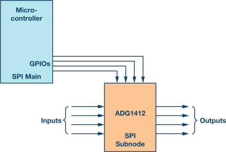
Now, as the number of switches increases, the requirement
on GPIO pins also increases significantly. A
4x4 configuration requires 16 GPI
pins, thus reducing the number of pins available for the
microcontroller for other tasks, as follows:

One approach to reduce the number of pins would be to use a serial-to-parallel convertor:

This reduces the pressure on the number of GPIO pins but still introduces additional circuitry.
Using an SPI-enabled microcontroller reduces the number of GPIOs required and and eliminates the overheads of the needing additional chips (serial-to-paralle convertor):

In fact, using a different SPI configuration (“daisy-chain”), we can optimize the GPIO count even further!

You can read more about SPI here.
2.3.3 General-Purpose I/O (GPIO)
A GPIO is a signal pin on an integrated circuit or board that can be used to perform digital I/O operations. By design, it has no predefined purpose → can be used by hardware/software developers to perform functions they choose, e.g.,
- GPIO pins can be enabled or disabled.
- GPIO pins can be configured to be input or output.
- input values are readable, often with a 1 representing a high voltage, and a 0 representing a low voltage.
- input GPIO pins can be used as “interrupt” lines, which allow a peripheral board connected via multiple pins to signal to the primary embedded board that it requires attention.
- output pin values are both readable and writable.
GPIOs can be implemented in a variety of ways,
- as a primary function of the microcontrollers, e.g., Intel 8255
- as an accessory to the chip
While microcontrollers may use GPIOs are their primary external interface, many a time the pins may be capable of other functions as well. In such instances, it may be necessary to configure the pins using other functions.
Some examples of chips with GPIO pins:
| Intel 8255 | PIC microchip | ASUS Tinker |
|---|---|---|
 |
 |
 |
| 24 GPIO pins | 29 GPIO pins | 28 GPIO pins |
GPIOs are used in a diverse variety of applications, limited only by the electrical and timing specifications of the GPIO interface and the ability of software to interact with GPIOs in a sufficiently timely manner.
Some “properties”/applications of GPIOs:
- GPIOs use standard logic levels and cannot supply significant current to output loads
- high-current output buffers or relays can be used to control high-power devices
- input buffers, relays, or opto-isolators translate incompatible signals to GPIO logic levels
- GPIOs can control or monitor other circuitry on a board, such as enabling/disabling circuits, reading switch states, and driving LEDs
- multiple GPIOs can implement bit banging communication interfaces like I²C or SPI
- GPIOs can control analog processes via PWM, adjusting motor speed, light intensity, or temperature
- PWM signals from GPIOs can be converted to analog control voltages using RC filters
GPIO interfaces vary widely. Most commonly, they’re simple groups of pins that can switch between input/output. On the other hand, each pin can be set up differently → set up/accept/source different voltages/drive strengths/pull ups and downs.
Programming the GPIO:
- usually pin states are exposed via different interfaces, e.g., memory-mapped I/O peripherals or dedicated I/O port instructions
- input values can be used as interrupts (IRQs)
For more information on programming/using GPIOs, read these: GPIO setup and use, Python scripting the GPIO in Raspberry Pis, general purpose I/O, GPIO setup in Raspberry Pi.
2.3.4 JTAG Debugging Interface
The JTAG standard (named after the “Joint Test Action Group”), technically the IEEE Std 1149.1-1990 IEEE Standard Test Access Port and Boundary-Scan Architecture, is an industry standard for testing and verification of printed circuit boards, after manufacture.
“JTAG”, depending on the context, could stand for one or more of the following:
- implementation of IEEE 1149.x for Board Test, or Boundary Scan testing
- appliance used to program on board flash or eeprom devices on a circuit board
- hardware device used to debug microprocessor software
- hardware device used to test a board using Boundary Scan
The basic building block of a JTAG OCD is the Test Access Point or TAP controller. This allows access to all the custom features within a specific processor, and must support a minimum set of commands. On-chip debugging is a combination of hardware and software.
| type | description |
|---|---|
| hardaware | on chip debug (OCD) |
| software | in-circuit-emulator (ICE)/JTAG emulator |
The off-chip parts are actually PC peripherals that need corresponding drivers running on a separate computer. On most systems, JTAG-based debugging is available from the very first instruction after CPU reset, letting it assist with development of early boot software which runs before anything is set up. The JTAG emulator allows developers to access the embedded system at the machine code level if needed! Many silicon architectures (Intel, ARM, PowerPC, etc.) have built entire infrastructures and extensions around JTAG.
A high-level overview of the JTAG architecture/use:

JTAG now allows for,
- processors can not be halted, single-stepped or run freely
- can set code breakpoints for both, code in RAM as well as ROM/flash
- data breakpoints are available
- bulk data download to RAM
- access to registers and buses, even without halting the processors!
- complex logic routines, e.g., ignore the first seven accesses to a register from one particular subroutine
JTAG allows for device programmer hardware allows for transfering data into internal, non-volatile memory of the system! Hence, we can use JTAGs to program devices such as FPGAs. In fact, many memory chips also have JTAG interfaces. Some modern chips also allow access to the the (internal and external) data buses via JTAG.
JTAG interface: depending on the actual interface, JTAG has 2/4/5 pins. The 4/5 pin versions are designed so that multiple chips on a board can have their JTAG lines daisy-chained together if specific conditions are met.
Schematic Diagram of a JTAG enabled device:
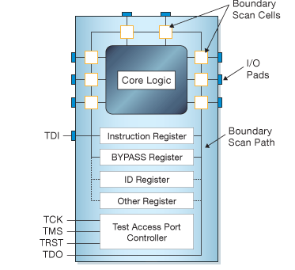
The various pins signals in the JTAG TAP are:
| signal | description |
|---|---|
TCK |
synchronizes the internal state machine operations |
TMS |
sampled at the rising edge of TCK to
determine the next state |
TDI |
data shifted into the device’s test or programming
logic; sampled at the rising edge of TCK when
the internal state machine is in the correct state |
TDO |
represents the data shifted out of the device’s test or
programming logic and is valid on the falling edge of
TCK when the internal state machine is in the
correct state |
TRST |
optional pin which, when available, can reset the tap controller’s state machine |
The TAP controller implements the following state machine:

To use the JTAG interface,
- host is connected to the target’s JTAG signals
(
TMS,TCK,TDI,TDO, etc.) through some kind of JTAG adapter - adapter connects to the host using some interface such as USB, PCI, Ethernet, etc.
- host communicates with the TAPs by manipulating
TMSandTDIin conjunction withTCK - host reads results through
TDO(which is the only standard host-side input) TMS/TDI/TCKoutput transitions create the basic JTAG communication primitive on which higher layer protocols build
For more information about JTAG, read: Intel JTAG Overview, Raspberry Pi JTAG programming, Technical Guide to JTAG and the JTAG Wikipedia Entry is quite detailed.
2.3.5 Controller Area Network (CAN)
CAN is a vehicle bus standard to enable efficient communication between electronic control units (ECUs). CAN is,
- broadcast-based
- message-oriented
- uses arbitration → for data integrity/prioritization
CAN does not need a a host controller. ECUs connected via the CAN bus can easily share information with each other. all ECUs are connected on a two-wire bus consisting of a twisted pair: CAN high and CAN low. The wires are often color coded:
| CAN high | yellow |
| CAN low | green |
 |
 |
| CAN wiring | multi-ecu CAN setup |
An ECU in a vehicle consists of:
| components | internal architecture |
|---|---|
|

|
Any ECU can broadcast on the CAN bus and the messages are accepted by all ECUs connected to it. Each ECU can either choose to ignore the message or act on it.
what are the implications for security?
While there is no “standard” CAN connector (each vehicle may use different ones), the CAN Bus DB9 connector has become the de facto standard:

The above figure shows the various pins and their signals.
CAN Communication Protocols: CAN is split into:
| layer | relation to OSI stack |
|---|---|
|

|
All communication over the CAN bus is done via the
CAN frames. The standard CAN frame
(with an 11-bit identifier) is shown below:

While the lower-level CAN protocols described so far work on the two lowest layers of the OSI networking stack, it is still limiting. For instance, the CAN standard doesn’t discuss how to,
- decode RAW data
- handle larger data (more than 8 bytes)
Hence, some higher-order protocols have been developed, viz.,
| protocol | description |
|---|---|
| OBD2 | on-board diagnostics in cars/trucks for diagnostics, maintenance, emissions tests |
| UDS | Unified Diagnostic Services (UDS) used in automotive ECUs for diagnostics, firmware updates, routine testing |
| CCP/XCP | used in embedded control/industrial automation for off-the-shelf interoperability between CAN devices |
| SAE J1939 | for heavy-duty vehicles |
| NMEA 2000 | used in maritime industry for connecting e.g. engines, instruments, sensors on boats |
| ISOBUS | used in agriculture and forestry machinery to enable plug and play integration between vehicles/implements, across brands |
There also exist other higher-order protocols (numbering in the thousands) the most prominent of which are: ARINC, UAVCAN, DeviceNet, SafetyBUS p, MilCAN, HVAC CAN.
More details about CAN and its variants: CAN Bus Explained.
2.3.6 Other Broadly Used Protocols
Autonomous (and other embedded systems) use a variety of other communication protocols in order to interface with the external world and/or other systems (either other nodes in the system or external components such as back end clouds).
Note that since many of these are well known and publicly documented, we won’t elaborate much here.
Here are some of the well known communication protocols, also used in embedded systems:
| protocol | links |
|---|---|
| USB | How USB works: part 1, part2, part 3; USB in a Nutshell (very detailed). |
| Ethernet | Reliable Embedded Ethernet, Embedded Ethernet and Internet (book, online) |
| WiFi | WiFi Sensing on the Edge (paper) |
| Bluetooth | Bluetooth Basics, Bluetooth Low Energy |
| Radio | Embedded Development with GNU Radio |
2.4 Raspberry Pi and Navio2
Let us look at the two architectures we use extensively in this course:
- Raspberry Pi model 4(b)
- Navio2 → autopilot hat for the Raspberry Pi
The high-level architecture of the Pi shows many of the components we have discussed so far:

In particular, the Pi has,
| component | description/details |
|---|---|
| processor | Broadcomm BCM2711, Quad core Cortex-A72 (ARM v8) 64-bit SoC at 1.8GHz |
| memory | 1GB, 2GB, 4GB or 8GB LPDDR4-3200 SDRAM |
| network | Wifi (2.4/5.0 GHz), Gigabit ethernet, Bluetooth/BLE |
| I/O | 40 pin GPIO, USB 3.0/2.0/C |
| storage | Micro-SD Card |
| misc | micro-hdmi, stereo audio/video, displayport, camera port, power |
| os | Raspberry Pi OS (formerly called Raspbian) |
Read more about the Raspberry Pi: Raspberry PI – A Look Under the Hood
The Navio2 is a “hat” that adds the following to a Raspberry Pi:
- autopilot functionality
- multiple sensors
The high-level architecture,

As the figure shows, the Navio2 adds the following components:
| component | description/details |
|---|---|
| GNSS receiver | for GPS signals |
| high-precision barometer | for measuring pressure (and altitude) |
| (dual) IMU | two 9 DOF with gyroscope, accelerometer, magnetometer, each |
| RC I/O co-processor | PWM, ADC, SBUS, PPM |
| extension ports | ADC, I2C, UART |
| power supply | triple redundant |
More details about the Navio2 and how to program it: Navio2 Documentation.
2.5 References
3 Sensors and Sensing
An embedded/autonomous system perceives the physical world via sensors – either to gather information about its environment or to model its own state. Hence it is a critical component in the sensing → planning → actuation loop and a critical component in the design of embedded and autonomous systems.
|
|
Modern autonomous systems used a wide array of sensors. This is necessary due to:
- there is a need to measure different quantities, e.g., GPS, velocity, objects, etc.
- sensor measurements often have errors → hence, we need multiple sensors, often using different physical properties to measure the same thing; e.g., LiDar and cameras can both be used to detect objects in front of, and around, an autonomous vehicle.
At its core,
a sensor captures a physical/chemical/environmental quantity and converts it to a digital quantity.
(hence the need for an Analog-to-Digital Convertor (ADC) as we shall see later)
By definition, sensors generate signals.
A signal, s, is defined as a mapping from the
time domain to a value domain:
s : Dt ↦ Dv
where,
| symbol | description |
|---|---|
| Dt | continuous or discrete time domain |
| Dv | continuous or discrete value domain |
Note: remember that computers require discrete sequences of physical values. Hence, we need to convert the above into the discrete domain. The way to achieve this: sampling:

The figure shows a continuous signal being sampled (in red arrows). We will discuss sampling and related issues later in this topic.
3.1 Types of Sensors
Sensors come in various shapes and sizes. Usually designers of autonomous systems will develop a “sensor plan that will consider,
- required functionality
- sensor range(s)
- cost
Hence, each autonomous system will likely have its own set of sensors (or sensor plan). Typical sensors found on modern autonomous systems can be classified based on the underlying physics used:
| physical property | sensor |
|---|---|
| internal measurements | IMU |
| external measurements | GPS |
| “bouncing” electromagnetic waves | LiDAR, RADAR, mmWave Radar |
| optical | cameras, infrared sensors |
| accoustic | ultrasonic sensors |
Some of the above can be combined to generate other sensing patterns, e.g., stereo vision using multiple cameras or camera+LiDAR.
We will go over some of these sensors and their underlying physical principles.
3.1.1 Inertial Measurement Units (IMU)
These sensors define the movement of a vehicle, along the three axes, in addition to other behaviors like acceleration and directionality. An IMU typically includes the following sensors:
 |
 |
 |
 |
As we see from the first picture above, an IMU also has a CPU (typically a microcontroller) to manage/collect/process the data from the sensors.
The functions of the three sensors are:
- gyroscope: is an inertial sensor that measure an object’s angular rate with respect to an inertial reference frame. It measures the following movements:
 |
 |
 |
| “yaw” | “pitch” | “roll” |
IMUs come in all shapes and sizes. These days they’re very small but the original IMU’s ver really large, as evidenced by the one used in the Apollo space missions:

accelerometer: is the primary sensor responsible for measuring inertial acceleration, or the change in velocity over time.
magnetometer: measures the strength and direction of magnetic field – to find the magnetic north
3.1.2 Bouncing of Electromagnetic Waves | LiDAR and mmWave
A very common principle for measuring surroundings is to bounce electromagnetic waves off nearby objects and measuring the round trip times. Shorter times indicate closer objects while longer times indicate objects that are farther away. RADAR is a classic example of this type of sensor and its (basic) operation is shown in the following image (courtesy NOAA):

While many autonomous vehicles use RADAR, we will focus on other technologies that are more prevalent and provide much higher precision, viz.,
- LiDAR
- millimeter Wave RADAR (mmWave)
3.1.2.1 Light Detection and Ranging (LiDAR)
LiDAR is a sensor that uses (eye safe) laser beams for mapping surroundings and creating 3D representation of the environment. So lasers are used for,
- imaging
- detection
- ranging
We can use LiDAR to distance, angle as well as the radial velocity of some objects – all relative to the autonomous system (rather the sensor). So, in practice, this is how it operates:
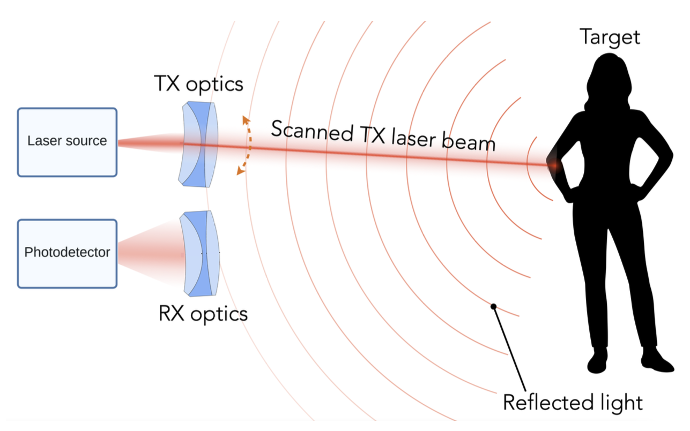
We define a roundtrip time, $ au$, as
the time between when a pulse is sent out from the
transmitter (TX) to when light reflected from
the object is detected at the receiver
(RX).
So, the target range (i.e., the distance to te object), R, is measured as:
R = raccau2
where, c is the speed of light.
More details (from Mahalati): > Lasers used in lidars have frequencies in the 100s of Terahetrz. Compared to RF waves, lasers have significantly smaller wavelengths and can hence be easily collected into narrow beams using lenses. This makes DOA estimation almost trivial in lidar and gives it significantly better reso- lution than MIMO imaging radar.
The end product of LiDAR is essentially a point cloud, defined as:
a collection of points generated by a sensor. Such collections can be very dense and contain billions of points, which enables the creation of highly detailed 3D representations of an area.

In reality, point cloud representations around autonomous vehicles end up looking like:
Point clouds provide valuable information, viz.,
- 3D coordinates, (x, y, z)
- strength of returned signal → provides valuable information about the density of the object (or even material composition)!
- additional attributes: return number, scan angle, scan direction, point density, RGB color values, and time stamps → each can be used for refining the scan.
There are two types of scene illumination techniques for LiDAR:
| type | illumination method | detector |
|---|---|---|
| flash lidar | entire scene using wide laser | receives all echoes on a photodetector array |
| scanning lidar | very narrow laser beams, scan illumination spot with laser beam scanner | single photodetector to sequentially estimate $ au$ for each spot |
| flash lidar | scan lidar | |
|---|---|---|
| architecture |  |
 |
| resolution determined by | photodetector array pizel size (like camera) | laser beam size and spot fixing |
| frame rates | higher (up to 100 fps) |
lower (< 30 fps) |
| range | shorter (quick beam divergence, like photography) | longer (100m+) |
| use | less common | most common |
Now, consider the following scene (captured by a camera):

Compare this to the LiDAR images captured by the two methods:
| flash lidar | scan lidar (16 scan lines) | scan lidar (32 scan lines) |
|---|---|---|
 |
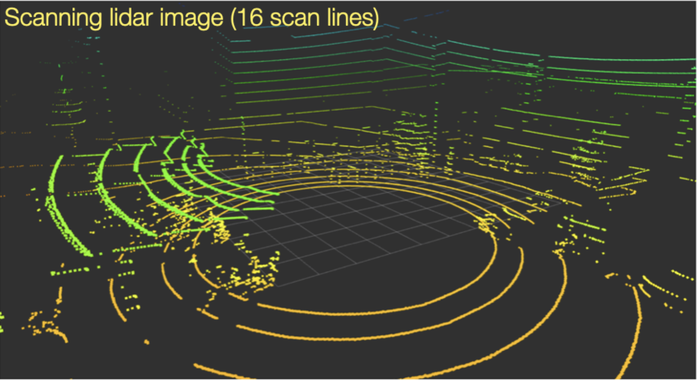 |  |
A “LiDAR scan line” refers to a single horizontal line of laser pulses emitted by a LiDAR sensor, essentially capturing a cross-section of the environment at a specific angle as the sensor rotates, creating a 3D point cloud by combining multiple scan lines across the field of view; it’s the basic building block of a LiDAR scan, similar to how a single horizontal line is a building block of an image.
Potential Problems:
Atmospheric/environmental conditions can negatively affect the quality of the data captured by the LiDAR. For instance, fog can scatter the laser photons resulting in false positives.

As we see from the above image, the scattering due to the fog results in the system “identifying” multiple objects even though there is only one person in the scene.
Here are additional examples from the Velodyne VLP-32C sensor:
- light fog (camera vs LiDAR)

The LiDAR does a good job isolating the main subject with very few false positives.
- heavy fog (camera vs LiDAR)

The LiDAR struggles to isolate the main subject with very high false positives.
In spite of these issues, LiDAR is one of the most popular sensors used in autonomous vehicles. They’re getting smaller and more precise by the day; also decreasing costs means that we will see a proliferation of these types of sensors in many autonomous systems.
For an in-depth study on LiDARs, check this out: Stanford EE 259 LiDAR Lecture.
3.1.2.2 Millimeter Wave Radar [mmWave]
Short wavelengths like the *millimeter wave (mmWave**) in the electromagnetic spectrum allows for:
- smaller antennae
- integration of entire RADAR circuitry in a single chip!
- spectrum of 10 millimeters (
30 GHz) to 1 millimeter (300 GHz)
 |
 |
As we see from the above images, the sensors can be very small, yet very precise → some can detect movements up to 4 millionths of a meter!
Advantages of mmWave:
| Advantage | Description |
|---|---|
| small antenna caliber | narrow beam gives high tracking, accuracy; high-level resolution, high-resistance interference performance of narrow beam; high antenna gain; smaller object detection |
| large bandwidth | high information rate, details structural features of the target; reduces multipath, and enhances anti-interference ability; overcomes mutual interference; high-distance resolution |
| high doppler frequency | good detection and recognition ability of slow objectives and vibration targets; can work in snow conditions |
| good anti-blanking performance | works on the most used stealth material |
| robustness to atmospheric conditions | such as dust, smoke, and fog compared to other sensors |
| operation under different lights | radar can operate under bright lights, dazzling lights, or no lights |
| insusceptible to ground clutter | allowing for close-range observations; the low reflectivity can be measured using mmwave radar |
| fine spatial resolution | for the same range, mmwave radar offers finer spatial resolution than microwave radar > |
mmWave is also used for in-cabin monitoring of drivers!
Limitations:
- line of sight operations
- affected by water content, gases in environments
- affected by contaminated environment and physical obstacles
Resources:
For a more detailed description of mmWave RADAR, read: Understanding mmWave RADAR, its Principle & Applications
For programming a LiDAR, see: how to program a LiDAR with an Arduino.
3.1.3 Ultrasonic
Much like lidars, we can use reflected sounds waves to detect objects. They work by emitting high-frequency sound waves, typically above human hearing, and then listening for the echoes that bounce back from nearby objects. The sensor calculates the distance based on the time it takes for the echo to return, using the speed of sound. Popular modules like the HC-SR04 (Used in Lab#2) are easy to integrate with microcontrollers such as Arduino and Raspberry Pi. These sensors are widely used in robotics for obstacle avoidance, automated navigation, and liquid level sensing.
However, unlike optical (electromagnetic waves) detectors, ultrasonic sensors, while useful for basic distance measurements, cannot replicate the functionalities of LiDAR systems due to several key limitations. Unlike LiDAR, which employs laser beams to generate high-resolution, three-dimensional point clouds, ultrasonic sensors emit sound waves that provide only limited, single-point distance data with lower precision. LiDAR offers greater accuracy and longer range, enabling detailed mapping and object recognition essential for applications like autonomous vehicles and advanced robotics. Additionally, LiDAR systems can cover a wider field of view and operate effectively in diverse environments by rapidly scanning multiple directions, whereas ultrasonic sensors typically have a narrow detection cone and struggle with complex or cluttered scenes. Furthermore, LiDAR’s ability to capture data at high speeds allows for real-time processing and dynamic obstacle detection, which ultrasonics cannot match. This is because comparitively, it sounds waves take a lot of time to return since they’re much slower in speed compared to light waves (360m/s vs 299,792,458m/s). These differences in data richness, accuracy, and versatility make ultrasonic sensors unsuitable substitutes for the sophisticated capabilities offered by LiDAR technology.
We’ll be using ultrasonic distance finders in futures MPs to stop our rovers from colliding into objects. Since our rovers don’t moove to fast and complexity is relatively low, only a ultrasonic sensor would suffice.
3.2 Errors in Sensing
Since sensors deal with and measure the physical world, errors will creep in over time.
Some typical errors in the use of physical sensors:
| error type | description |
|---|---|
| sensor drift | over time the sensor measurements will “drift”, i.e., a gradual change in its output → away from average values (e.g., due to wear and tear) |
| constant bias | bias of an accelerometer is the offset of its output signal from the actual acceleration value. A constant bias error causes an error in position which grows with time |
| calibration errors | ‘calibration errors’ refers to errors in the scale factors, alignments and linearities of the gyros. Such errors tend to produce errors when the device is turning. These errors can result in additional drift |
| scale factor | scale factor is the relation of the accelerometer input to the actual sensor output for the measurement. Scale factor, expressed in ppm, is therefore the linear growth of input variation to actual measurement |
| vibration rectification errors | vibration rectification error (VRE) is the response of an accelerometer to current rectification in the sensor, causing a shift in the offset of the accelerometer. This can be a significant cumulative error, which propagates with time and can lead to over compensation in stabilization |
| noise | random variations in the sensor output that do not correspond to the actual measured value |
Each error type must be dealt with in different ways though one of the commomn ways to prevent sensor errors from causing harm to autonomous systems → sensor fusion, i.e., use information from multiple sensors before making any decisions. We will dicuss sensor fusion later in this course.
3.3 Analog to Digital Convertors (ADCs)
As mentioned earlier, a sensor maps a physical quantity from the time domain to the value domain,
s : Dt ↦ Dv
where,
| symbol | description |
|---|---|
| Dt | continuous or discrete time domain |
| Dv | continuous or discrete value domain |
Remember that computers require discrete sequences of physical values since microcontrollers cannot read values unless it is digital data. Microcontrollers can only see “levels” of voltage, which depends on the resolution of the ADC and the system voltage.
Hence, we need to convert the above into the discrete domain, i.e., we require Dv to be composed of discrete values.
According to Wikipedia,
A discrete signal or discrete-time signal is a time series consisting of a sequence of quantities. Unlike a continuous-time signal, a discrete-time signal is not a function of a continuous argument; however, it may have been obtained by sampling from a continuous-time signal. When a discrete-time signal is obtained by sampling a sequence at uniformly spaced times, it has an associated sampling rate.
A visual respresentation of the sampling rate and how it correlates to the sampling of an analog signal:
| analog signal | sampling rate | sampling |
|---|---|---|
 |
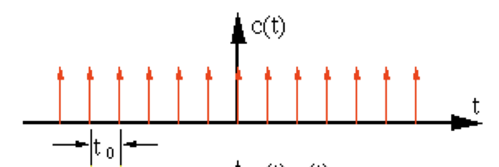 |  |
Hence, a device that converts analog signals to digital data values is called → an analog-to-digital convertor (ADC). This is one of the most common circuits/microcontrollers in embedded (and hence, autonomous) systems. Any sensor that measures a physical property must pass its values through an ADC so that the sensor values can be used by the system (the embedded processor/microcontroller, really).
This is best described using an example:

The analog signal is discretized into the digital signal after passing through an ADC.
ADCs follow a sequence:
- sample the signal
- quantify it to determine the resolution of the signal
- set binary values
- send it to the system to read the digital signal
Hence, two important aspects of an ADC are:
3.3.1 ADC Sampling Rate
The sampling rate (aka Sampling Frequency) is measured in samples per second (SPS or S/s). It dictates how many samples (data points) are taken in one second. If an ADC records more samples, then it can handle higher frequencies.
The sample rate, fs is defined as,
fs = rac1T
where,
| symbol | definition |
|---|---|
| fs | sampling rate/frequency |
| T | period of the sample |
Hence, in the previous example,
| symbol | value |
|---|---|
| fs | 20 Hz |
| T | 50 ms |
While this looks slow (20 Hz), the digital
signal tracks the original analog signal quite faithfully →
the original signal itself is quite slow
(1 Hz).
Now, if the sampling signal is considerably slower than the analog signal, then it loses fidelity and we see aliasing, where the reconstructed signal (the digital one in the case) differs from the original. Consider the following example of such a case:
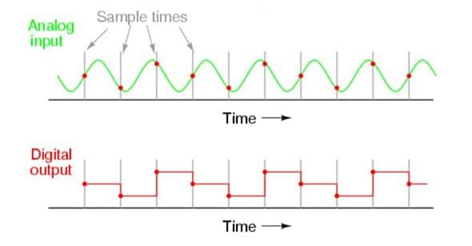
As we see from the above figure, the digital output is nothing like the original. Hence, this (digital) output will not be of much use to the system.
Nyquist-Shannon Sampling Theorem:
to accurately reconstruct a signal from its samples, the sampling rate must be at least twice the highest frequency component present in the signal
If the sampling frequency is less than the Nyquist rate, then aliasing starts to creep in.
Hence,
fNyquist = 2 * fmax
where,
| symbol | definition |
|---|---|
| fNyquist | Nyquist sampling rate/frequency |
| fmax | the maximum frequency that appears in the signal |
For instance, if your analog signal has a maximum
frequency of 50 Hz then your sampling frequency
must be at least, 100 Hz. If this
principle is followed, then it is possible to
accurately reconstruct the original signal
and its values.
Note that sometimes noise can introduce additonal (high) frequencies into the system but we don’t want to sample those (for obvious purposes). Hence, it is a good idea to add anti-aliasing fitlers to the analog signal before it is passed to the ADC.
3.3.2 ADC Resolution
An ADC’s resolution is directly related to the precision of the ADC, determined by its bit length. The following examples shows the fidelity of the reconstruction, based on various bit lengths:

Increasing bit lengths the digital signal more closely represents the analog one.
There exists a correlation between the bit length and the voltage of the signal. Hence, the true resolution of the ADC is calculated using the bit length and the voltage as follows:
StepSize = racVrefN
where,
| symbol | definition |
|---|---|
| StepSize | resolution of each level in terms of voltage |
| Vref | voltage reference/range of voltages |
| N = 2n | total “size” of the ADC |
| n | bit size |
This is easier to understand with a concrete example:
consider a sine wave with a voltage,
5 Vthat must be digitized.
If our ADC precision is12 bits, then we get
N = 212 = 4096
Hence, StepSize = 5V/ 4096 which is0.00122V(or1.22mV)
Hence, the system can tell when a voltage level changes by1.22 mV!
(Repeat the exercise for say, bit length, n = 4)
Visual Example:
The above maybe intuitively understood as follows:
Consider the following signal:

Now, if we want to sample this signal, we can obtain measurements at:

The figure shows 9 measurements.
Suppose, the ADC registers have a width of:
2 bits. Hence it can store at most:
4 values.
Since is is not possible to store
9 values → 2 bits, we must select
only 4 values omn the digital
side.
We then get the following representation:
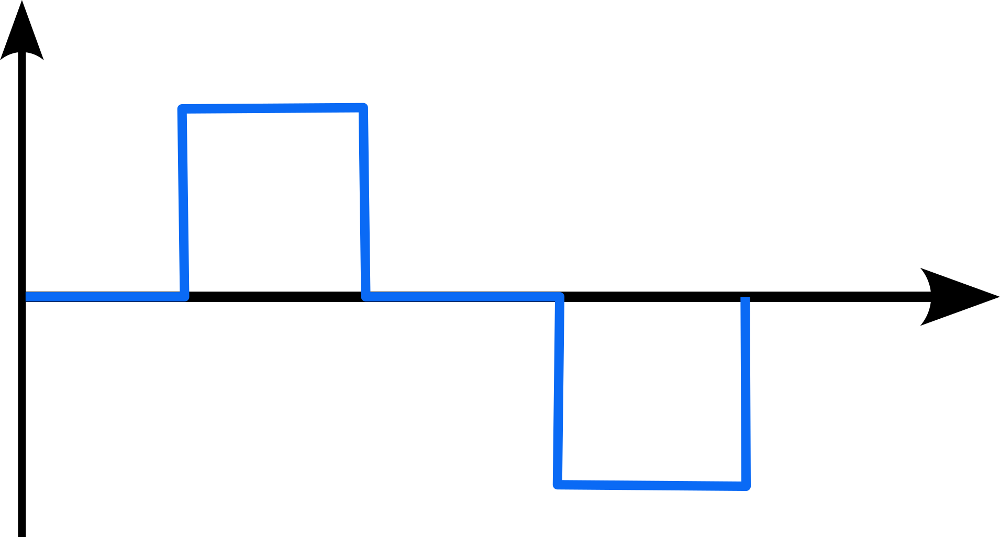
which, to be honest, is not really a good representation of the original signal!
Now, consider the case where the ADC registers have a bit
width: 4 bits →
16 values! Hence, we can easily store
all 9 values easily.
So, we can get a digital representation as follows:

We see that this is a better representation, but
still not exact. We can increase the bit length but at
this point we are limited by the sampling as well. Since we
only have 9 samples, adding more bits won’t
help.
Hence, to get a better fidelity representation of the original signal, we see that sampling frequency and resolution need to be increased, since they determine the quality of output we get from an ADC.
Resources
- for more details about ADC, read: Analog-to-Digital Convertor Basics
- an in-depth explanation of how ADCs work: Iowa State CpreE 288 Course Slides
- more details with videos: Analog to Digital Conversion, EE319K Univ. of Texas
- Programming an ADC: 1, 2
4 Real-Time Operating Systems
Real-Time Operating Systems (RTOS) are specialized operating systems designed to manage hardware resources, execute applications and process data in a predictable manner. The main aim of this focus on “predictability” is to ensure that critical tasks complete in a timely fashion. Unlike general-purpose operating systems (GPOS) like Windows or Linux, which prioritize multitasking and user experience, RTOS focuses on meeting strict timing constraints, ensuring that tasks are completed within defined deadlines. This makes RTOS essential for systems where timing accuracy and reliability are critical, such as in embedded systems, autonomous driving, industrial automation, automotive systems, medical devices and aerospace applications, among others.
Hence, real-time systems (RTS), and RTOSes in general, have two criteria for “correctness”:
| criteria | description |
|---|---|
| functional correctness | the system should work as expected, i.e., carry out its intended function without errors |
| temporal correctness | the functionally correct operations must be completed within a predefined timing constraint (deadline) |
To place ourselves in the context of this course, this is where we are:
We haven’t looked at the actuation part but we will come back to it later.
4.0.1 Key characteristics for RTOS
| characteristic | description |
|---|---|
| determinism | primary feature of an RTOS is its ability to perform tasks within guaranteed time frames; this predictability ensures that high-priority tasks are executed without delay, even under varying system loads |
| task scheduling | RTOS uses advanced scheduling algorithms (e.g., priority-based, round-robin or earliest-deadline-first) to manage task execution; RT tasks are often assigned priorities and the scheduler ensures that higher-priority tasks preempt lower-priority ones when necessary |
| low latency | RTOS minimizes interrupt response times and context-switching overhead, enabling rapid task execution and efficient handling of time-sensitive operations (e.g., Linux spends many milliseconds handling interrupts such as disk access!) |
| resource management | RTOS provides mechanisms for efficient allocation and management of system resources, such as memory, CPU and peripherals, to ensure optimal performance |
| scalability | RTOS is often lightweight and modular, making it suitable for resource-constrained environments like microcontrollers and embedded systems |
| reliability and fault tolerance | many RTOS implementations include features to enhance system stability, such as error detection, recovery mechanisms and redundancy |
4.1 Kernels in RTOS
As with most operating systems, the kernel provides the essential services in an RTOS. In hard real-time systems, the kernel must guarantee predictable and deterministic behavior to ensure that all tasks meet their deadlines. In this chapter we focus on kernel aspects that are specific to RTS.
The RTOS kernel deals with,
- task management
- communication and synchronization
- memory management
- timer and interrupt handling
- performance metrics
4.1.1 Tasks, Jobs, Threads
The design of RTOSes (and RTS in general) deal with tasks, jobs and, for implementation-specific details, threads.
A real-time task, τi is defined using the following parameters: (ϕi, pi, ci, di) where,
| Symbol | Description |
|---|---|
| ϕi | Phase (offset for the first job of a task) |
| pi | Period |
| ci | Worst-case execution time |
| di | Deadline |
Hence, a real-time tast set (of size ‘n’) is collection of such tasks, i.e., τ = τ1, τ2, ...τn. Given a real-time task set, the first step is to check if the task set is schedulable, i.e., check whether all jobs of a task will meet their deadlines (a job is an instance of a task). For this purpose, multiple schedulability tests have been developed, each depending on the scheduling algorithm being used.
- remember that task is a set of parameters.
- We “release” multiple “jobs” of each task, each with its own deadline
- if all jobs of all tasks meet their deadlines, then the system remains safe.
A thread, then, is an implementation of task/job – depending on the actual OS, it could be either, or both.
At a high level, here is a comparison between tasks, jobs and threads (note: these details may vary depending on the specific RTOS):
| aspect | task | job | thread |
|---|---|---|---|
| definition | a task is a unit of work that represents a program or function executing in the RTOS | a job is a specific instance or execution of a task, often tied to a particular event or trigger | a thread is the smallest unit of execution within a task, sharing the task’s resources |
| granularity | coarse-grained; represents a complete function or program | fine-grained; represents a single execution of a task | fine-grained; represents a single flow of execution within a task |
| resource ownership | owns its resources (e.g., stack, memory, state) | does not own resources; relies on the task’s resources | shares resources (e.g., memory, address space) with other threads in the same task |
| scheduling | scheduled by the RTOS kernel based on priority or scheduling algorithm | not directly scheduled; executed as part of a task’s execution | scheduled by the RTOS kernel, often within the context of a task |
| concurrency | tasks run concurrently, managed by the RTOS scheduler | jobs are sequential within a task but may overlap across tasks | threads run concurrently, even within the same task |
| state management | maintains its own state (e.g., ready, running, blocked) | state is transient and tied to the task’s execution | maintains its own state but shares the task’s overall context |
| isolation | high isolation; tasks do not share memory or resources by default ++ | no isolation; jobs are part of a task’s execution | low isolation; threads share memory and resources within a task |
| overhead | higher overhead due to separate stacks and contexts | minimal overhead, as it relies on the task’s resources | moderate overhead, as threads share resources but require context switching |
| use case | used to model independent functions or processes (e.g., control loops) | used to represent a single execution of a task (e.g., processing a sensor reading) | used to parallelize work within a task (e.g., handling multiple i/o operations) |
| example | a task for controlling a motor | a job for processing a specific motor command | a thread for reading sensor data while another thread logs the data |
(++ sometimes tasks do contend for resources, so we need to mitigate access to them, via locks, semaphores, etc. and then have to deal with thorny issues such as priority inversions)
A task is often described using a task control block (TCB):

Tasks typically cycle through a set of states, for instance (taken from the FreeRTOS real-time OS):

While the READY, RUNNING and
BLOCKED states are similar to those in
general-purpose operating systems (GPOS), periodic
RTOSes must introduce an additional state:
IDLE or
SUSPENDED:
- periodic task enters this state when it (rather one ‘job’) completes its execution → has to wait for the beginning of the next period
- to be awakened by the timer (i.e., to launch
the next instance/job), the task must notify the end of its
cycle by executing a specific system call,
end cycle→ puts the job in the IDLE state and assigns the processor to another ready job - at the right time, each periodic task in IDLE state → awakened by kernel and inserted in the ready queue
This operation is carried out by a routine activated by a timer → verifies, at each tick, whether some task(job) has to be awakened.
TCBs are usually managed in kernel queues (the implementation details may vary depending on the particular RTOS).
Context Switch Overheads:
One of the main issues with multitasking and preepmtion is that of context switch overheads, i.e., the time and resources required to switch from one task to another. For instance, consider this example of two tasks running on an ARM Cortex-M4:
void Task1(void) {
while(1) {
// Task 1 operations
LED_Toggle();
delay_ms(100);
}
}and
void Task2(void) {
while(1) {
// Task 2 operations
ReadSensor();
delay_ms(200);
}
}When switching between Task1 and Task2, an RTOS might need to:
- save
16general-purpose registers - save the program counter and stack pointer
- update the memory protection unit settings
- load the new task’s context (program into memory, registers, cache, etc.)
So, on the ARM Cortex-M4,
| effect | cost |
|---|---|
| basic context switch | 200-400 CPU cycles |
| cache and pipeline effects, total overhead | 1000+ cycles |
frequent switching (e.g., every 1 ms) |
could consume 1-2% of CPU time! |
These costs can add up, especially if the system has,
- many RT tasks and frequent preemption
- high-frequency/short period jobs that execute frequently
- if tasks contend with each other for shared resources
Hence and RTOS must not only be cognizant of such overheads but also actively manage/mitigate them. Some strategies could include:
- better task/schedule design: e.g., group related operations to reduce context switches
void Task_Sensors(void) {
while(1) {
// Handle multiple sensors in one task
ReadTemperature();
ReadPressure();
ReadHumidity();
delay_ms(500);
}
}- priority-based scheduling: e.g., high priority task gets more CPU
void CriticalTask(void) {
// Set high priority
setPriority(HIGH_PRIORITY);
while(1) {
ProcessCriticalData();
delay_ms(50);
}
}- optimizing memory layouts: e.g., align task stacks to cache line boundaries
#define STACK_SIZE 1024
static __attribute__((aligned(32)))
uint8_t task1_stack[STACK_SIZE];Note: these are not comprehensive and other strategies could be followed, for instance avoiding multitasking altogether! All functions could be implemented in a single process that runs a giant, infinite loop known as a cyclic executive. Newer RTOSes shun ths cyclic executive in favor of the multitasking model since the latter provides more flexibility, control and adaptability but many critical systems (especially older, long-running ones) still use the cyclic executive. For instance, nuclear reactors, chemical plants, etc.
In any case, a precise understanding of these overheads is crucial for:
- setting appropriate task priorities
- determining minimum task periods
- calculating worst-case execution times
- meeting real-time deadlines
- optimizing system performance
There is significant (ongoing) work, both in industry as well as academia, on how to get a handle on context switch overheads while still allowing for flexibility and modularity in the development of RTS.
4.1.2 (Inter-Task) Communication and Synchronization
RTOSes use various mechanisms like semaphores, mutexes, message queues and event flags for communication and synchronization between tasks. Here are some examples:
- Semaphores:
- binary semaphores: work like a mutex, with values 0 or 1
- counting semaphores: can have multiple values, useful for managing resource pools
// Example of binary semaphore usage
semaphore_t sem;
sem_init(&sem, 1); // Initialize with 1
void TaskA(void) {
while(1) {
sem_wait(&sem);
// Critical section
accessSharedResource();
sem_post(&sem);
}
}- Mutexes (mutual exclusion):
- mutexes provide exclusive access to shared resources
- they include priority inheritance to prevent priority inversion
mutex_t mutex;
mutex_init(&mutex);
void TaskB(void) {
mutex_lock(&mutex);
// Protected shared resource access
updateSharedData();
mutex_unlock(&mutex);
}- Message Queues:
- they allow ordered data transfer between tasks
- provide for buffering capabilities
queue_t msgQueue;
queue_create(&msgQueue, MSG_SIZE, MAX_MSGS);
void SenderTask(void) {
message_t msg = prepareMessage();
queue_send(&msgQueue, &msg, TIMEOUT);
}
void ReceiverTask(void) {
message_t msg;
queue_receive(&msgQueue, &msg, TIMEOUT);
processMessage(&msg);
}- Event Flags:
- enable multiple tasks to wait for one or more events
- support
AND/ORconditions for event combinations
event_flags_t events;
#define EVENT_SENSOR_DATA 0x01
#define EVENT_USER_INPUT 0x02
void TaskC(void) {
// Wait for both events
event_wait(&events, EVENT_SENSOR_DATA | EVENT_USER_INPUT,
EVENT_ALL, TIMEOUT);
processEvents();
}- Condition Variables:
- tasks can wait for specific conditions
- used with mutexes for complex synchronization
mutex_t mutex;
cond_t condition;
void ConsumerTask(void) {
mutex_lock(&mutex);
while(bufferEmpty()) {
cond_wait(&condition, &mutex);
}
processData();
mutex_unlock(&mutex);
}Each mechanism has specific use cases:
| mechanism | use case |
|---|---|
| semaphores | resource management and simple synchronization |
| mutexes | exclusive access to shared resources |
| message queues | data exchange and task communication |
| event flags | multiple event synchronization |
| condition variables | complex state-dependent synchronization |
Common considerations:
- Priority Inversion Prevention: a high-priority (HP) task is indirectly preempted by a lower-priority (LP) task; HP → needs resource (R); R held by → LP, LP preempted by medium-priority (MP) task. So HP waits for MP → inversion of priorities! We will discuss solutions (priority inheritance/priority ceiling) later.
- Deadlock Avoidance: tasks are *permanently blocked** waiting on resources from each other; τ1 holds resource RA and waits for RB; τ2 holds resource RB and waits for RA.
- Timeout Handling: every synchronization mechanism should have a timeout to avoid indefinite blocking of critical tasks.
- Error Handling: detecting errors and handling them in a robust manner is critical to maintain system reliability; RTOSes use retry mechanisms, logging and, most importantly, have clear recovery procedures for failure scenarios.
These considerations are crucial for ensuring system reliability, maintaining real-time performance, preventing system deadlocks, managing system resources effectively and handling error conditions gracefully.
4.1.3 Memory Management
Real-time systems require predictable memory
allocation and deallocation to avoid delays or
fragmentation. Hence, they often use limited memory
management techniques often eschewing even the use
of dynamic memory allocation in favor of static
memory allocation. For instance, many RTS don’t
even use malloc() or new
(i.e., no heap allocated memory) and very often
avoid garbage collection. The main goal is for tight control
of the memory management → this makes timing behavior
more predictable. Hence, the following become
easier:
- wcet analysis
- schedulability and other analyses
- runtime monitoring and management
- recovery/restart
Some goals for memory management in RTOSes:
- predictable execution times for memory operations
- fast allocation/deallocation
- minimal fragmentation, if any
- protection mechanisms between tasks
In fact, to achieve these goals, many RTSes don’t even use caches since they can be a major source of non-determinism in terms of timing behavior, e.g.,
if we cannot exactly calculate when some data/code will hit/miss in cache, then we cannot estimate its true timing behavior, leading to a lot of uncertainty → bad!
Some RTSes use scratchpads since they provide cache-like performance but have higher predictability since the data onboarding/offloading is explicitly managed (either by the program or the RTOS).
Some common memory-management techniques for RTOSes:
- static memory allocation: all memory used is allocated/deallocated at compile time.
- memory pools: fixed-size blocks are pre-allocated for specific purposes → fragmentation and provides deterministic allocation times.
- careful stack management: careful sizing/placing/management of the stack
- limited heap memory: using “safe”
versions of
malloc()for instance - memory protection: using hardware such as memory protection units (MPUs)
- memory partitioning: explicitly partition memory/caches so that tasks cannot read/write in each others’ memory regions
- runtime mechanisms: such as memory usage monitoring, leak detection and managing the fragmentation
Of course, each of these mechanisms have their own problems and a deliberation on those is left as an exercise for the reader.
4.1.4 Timer and Interrupt Management
Timer and interrupt management are crucial components of an RTOS, ensuring that tasks are executed at precise intervals and that the system responds promptly to (internal and) external events. The role between timers and interrupts is closely related, since they offer the very basic timing mechanism in RTOSes (from Hard Real-Time Computing Systems: Predictable Scheduling Algorithms and Applications):
to generate a time reference, a timer circuit is programmed to interrupt the processor at a fixed rate and the internal system time is represented by an integer variable, which is reset at system initialization and is incremented at each timer interrupt. The interval of time with which the timer is programmed to interrupt defines the unit of time in the system; that is, the minimum interval of time handled by the kernel (time resolution). The unit of time in the system is also called a system
tick.
Timers, in general, play important roles in such systems, viz.,
| role | description |
|---|---|
| task scheduling | enable periodic execution of tasks |
| timeout management | prevent indefinite blocking of resources |
| event timing | measure intervals between events |
| system timing | maintain system clock and timestamps |
| watchdog functions | monitor system health and detect lockups |
Typically these systems have the following three types of timers:
| type | properties |
|---|---|
| hardware | - direct access to hardware timing resources - highest precision and accuracy - limited in number (hardware dependent) - used for critical timing functions |
| software | - implemented in software, using hardware timer as
base - more flexibility, less precise - limited only by memory - more suitable for non-critical timing functions |
system tick |
- core timer for RTOS - drives task scheduling - fixed frequency |

There are various design considerations for timers in an RTOS, viz.,
- resolution → the smaller the resolution, the higher the system/hardware/software/runtime overheads
- accuracy → need to understand and manage drift and jitter; timers may need to be calibrated often++
- power consumption → more
accurate/high-precision a timer, higher the power
consumption; also the
tickcan result in significant power consumption if not implemented/managed well
(++ drift indicates a gradual, long-term change in the timer’s frequency over time, whereas jitter refers to short-term, random fluctuations in the timing of individual clock pulses)
Interrupt Latencies → time from when an
interrupt occurs to when the corresponding interrupt service
routine (ISR) starts executing. As interrupts are integral
to the operation of an RTOS, from the implementation of the
system tick to notifcations of internal
(watchdog timers) and external events (new sensor data), it
is important to minimize interrupt
latencies.
Optimization Techniques (to minimize latencies):
- minimize interrupt frequency → oftean an RTOS will disable interrupts in critical sections
- efficient timer and interrupt queue management → “nesting” interrupts,
- power-aware timing strategies → “tickless” operating systems have been tried
- optimize ISRs → keep them short, use other methods (deferred procedure calls or “bottom halves”).
4.1.5 Kernel Performance Metrics
Essentially, the kernel must be designed to minimize jitter and ensure that all operations have bounded and predictable execution times.
Hence, we can try to evaluate whether an RTOS kernel meets these goals using the following metrics (note: not exhaustive):
| metric | description |
|---|---|
| interrupt latency | the time taken to respond to an interrupt |
| context switch time | time to switch between tasks |
| dispatch latency | time difference between task being ready and when it starts executing |
| throughput | number of tasks?operations kernel can handle per unit time |
4.2 Examples of RTOS
| name | description | features |
|---|---|---|
| FreeRTOS | a widely used, open-source RTOS for embedded systems | small footprint, portable, supports a wide range of microcontrollers |
| VxWorks | commercial RTOS used in aerospace, defense, applications | high reliability, real-time performance, and support for multi-core processors |
| QNX | a commercial RTOS known for its reliability and use in automotive and medical systems | microkernel architecture, high security, support for posix apis |
| Zephyr | open-source RTOS designed for IoT and Edge devices | modular, scalable, supports a wide range of hardware architectures |
Why is Linux not on the list? While it has many (increasing) list of real-time features, it is still far from a hard real-time system, mainly due to its complexity. It is difficult to analyze WCETs on Linux or completely control its timers → the list is endless. It still sees use in many real-time and embedded systems and we will (brielfy) explore its real-time capabilities soon.
4.2.1 FreeRTOS
As mentioned earlier, FreeRTOS is one of the most popular open-source RTOS options, widely used in embedded systems due to its simplicity, portability and extensive community support. It supports,
- creation of multiple tasks, each with its own priority
- preemptive and cooperative scheduling
- mechanisms like queues, semaphores, and mutexes for communication and synchronization between tasks
- several memory management schemes, including heap_1, heap_2, heap_3, heap_4, and heap_5, to suit different application requirements
- highly portable and supports a wide range of microcontrollers and development boards, including ARM Cortex-M, ESP32 and STM32
- a large and active community, with [extensive documentation, tutorials and examples available online
Here is an example that uses FreeRTOS to blink the LEDs on a microcontroller:
#include <FreeRTOS.h>
#include <task.h>
#include <gpio.h>
// Task to blink an LED
void vBlinkTask(void *pvParameters) {
while (1) {
GPIO_TogglePin(LED_PIN); // Toggle LED
vTaskDelay(pdMS_TO_TICKS(500)); // Delay for 500ms
}
}
int main(void) {
// Initialize hardware
GPIO_Init(LED_PIN, GPIO_MODE_OUTPUT);
// Create the blink task
xTaskCreate(vBlinkTask, "Blink", configMINIMAL_STACK_SIZE, NULL, 1, NULL);
// Start the scheduler
vTaskStartScheduler();
// The program should never reach here
for (;;);
}Resources:
4.2.2 Linux+Real-Time
As mentioned earlier, Linux, as a general-purpose operating system, is not inherently a real-time operating system (RTOS). However, it does provide several features and mechanisms that can be used to achieve real-time performance, especially when combined with real-time patches or specialized configurations.
Some of the real-time features of Linux include:
Preempt-RT Patch: a set of patches that convert the Linux kernel into a fully preemptible kernel, reducing latency and improving real-time performance; the Preempt-RT patch achieves this by:
- making almost all kernel code preemptible: allows higher-priority tasks to preempt lower-priority tasks, even when the lower-priority tasks are executing kernel code
- converting interrupt handlers to kernel threads: reduces time spent with interrupts disabled, for better predictability and lower latency
- implementing priority inheritance: helps prevent priority inversion by temporarily elevating priority of lower-priority tasks holding a resource needed by higher-priority tasks
- reducing non-preemptible sections: minimizes time during which preemption is disabled, further reducing latency
- enhancing timer granularity: allows for more precise timing and scheduling of tasks, crucial for real-time applications
the Preempt-RT patch is widely used in industries such as telecommunications, industrial automation and audio processing. It is actively maintained and supported by the Linux Foundation’s Real-Time Linux (RTL) collaborative project
Real-Time scheduling policies: support for real-time scheduling policies such as
SCHED_FIFOandSCHED_RR, which provide deterministic scheduling behaviorHigh-resolution timers: support for high-resolution timers that allow for precise timing and scheduling of tasks
basic priority inheritance: mechanism to prevent priority inversion by temporarily elevating the priority of lower-priority tasks holding a resource needed by higher-priority tasks
CPU isolation: ability to isolate CPUs from the general scheduler, dedicating them to specific real-time tasks; also pinning processes to certain cores
Threaded interrupts: support for handling interrupts in kernel threads, reducing interrupt latency and improving predictability
Memory management techniques: such as memory locking to prevent pages from being swapped, the use of “huge” pages and memory pre-allocation
Control groups (cgroups): mechanism to allocate CPU, memory and I/O resources to specific groups of tasks, ensuring resource availability for real-time tasks
These features, when properly configured, can help achieve real-time performance on Linux, making it suitable for certain real-time and embedded applications.
4.2.3 Raspberry Pi OS+Real-Time
The Raspberry Pi OS can also be made “real-time” in the same manner as decribed above, since it is a Linux variant.
Though, there are some attempts at getting the Pi to behave in a real-time fashion, e.g.,: 1, 2, 3.
4.3 Robot Operating System (ROS)
ROS is an open source middleware framework built for robotics applications. The main goal → develop standards for robotic software. ROS provides many reusable modules for developing robotic applications.
Embedded/autonomous programs that do simple tasks (or operate with a single sensor/motor) are relatively easy to program. As more sensing, actuation, functionality is added (consider a larege industrial robot or even an autonomous car), programs quickly become quite complex – coordination of the data and system states becomes challenging.

ROS helps to develop and scale such applications and also manages communications between various parts of the software. As mentioned earlier, ROS is middleware:
Middleware is a software layer that connects the operating system to applications, data, and users. It provides common services and capabilities, like single-sign on (SSO), easy communication/coordination (like ROS) or application programming interface (API) management. Developers can rely on middleware to provide consistent, simplified integrations between application components. This frees up developers to build core features of applications, rather than spend time connecting those features to different endpoints and environments, including legacy systems.
At a high level, ROS,
- creates a separation of code blocks → into reusable blocks
- provides tools → easy communication between sub-programs
- is language agnostic → allows different components to be written in, say Python and C and yet communicate using the ROS communication protocol
A simple example: control of a robotic arm+camera:

To write a ROS application to control this robotic arm, we first create a few subprograms:
- one for the camera →
node - another for →
motion planning - one for →
hardware drivers - finally one for →
joystick
Now we use ROS → communication between these nodes.
ROS even provides plug and play libraries for designing your system, e.g., inverse kinematics libraries, trajectory planning for robotic arms, etc.
4.3.1 ROS Components
Some important components of ROS:


- a process that performs computation (a program/subprogram)
- combined together into a graph
- communicate via “topics”
- operate at a fine-grained scale
- a full system will have multiple nodes,
e.g.,
- one node controls a laser range-finder
- one Node controls the robot’s wheel motors
- one node performs localization
- one node performs path planning
- one node provides a graphical view of the system
The use of nodes has several benefits such as fault tolerance, reduced complexity and modularity.
- they’re named buses over which nodes exchange “messages”
- anonymous publish/subscribe semantics → decouples production of information from its consumption
- nodes are not aware of who they are communicating with
- nodes that are interested in data subscribe to the relevant topic
- nodes that generate data publish to the relevant topic
- can be multiple publishers and subscribers to a topic
- topic is strongly typed by publisher → nodes can only receive messages with a matching type
Topics are meant for unidirectional, streaming communication. ROS includes other mechanisms such as services and [parameter servers]http://wiki.ros.org/Parameter%20Server) for different types of communciations.
- nodes communicate with each other by publishing messages to topics
- simple text files
- simple data structure → typed fields
- support standard primitives (
int,float,boolean) - can include arbitrarily nested
structsandarrays - nodes can exchange →
requestanresponsemessages
A simple ROS message:
std_msgs/Header header
uint32 seq
time stamp
string frame_id
geometry_msgs/Point point
float64 x
float64 y
float64 zExample: our first ROS message.
- provides naming and registration services to the rest of the nodes in the ROS system
- also runs the parameter server → a shared, multi-variate dictionary that is accessible via network APIs, used by nodes to store/retrieve parameters
- tracks publishers and subscribers to topics as well as services
- enable individual ROS nodes to locate one anothe
- once located, they communicate in a peer-to-peer fashion
Example:
- consider two nodes →
cameranode andimage_viewernode cameranotifiesmaster→ wants to publish images on the topic,images

- no one is subscribing to the topic, yet → no images sent
image viewer→ subscribe toimagestopic

- topic,
imageshas both → publisher and subscriber masternotifies both → of each others’ existence
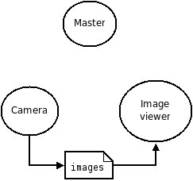
- both start communicating with each other, directly
A more intricate example of the same:

- robotic system typically has many 3D coordinate frames
that change over time
- e.g., world frame, base frame, gripper frame, head frame, etc.
- lets the user keep track of multiple coordinate frames over time
- maintains the relationship between coordinate frames → manages spatial relationships
- in a tree structure buffered in time
- lets the user transform points, vectors, etc. → at any desired point in time
- distributed → coordinate frames of robot available to all ROS components on any computer in the system
- sensor fusion, motion planning, and navigation
- organizes all coordinate frames and their relationships into a transform tree
An example of a ROS transform and tree:

4.3.2 ROS and Real-time?
ROS (the first version) is not
real-time. Hence, systems that requires hard
real-time guarantees shoud not use it. But ROS can
be itegrated into systems that require some latency
guarantees. If needed, ROS can be run on top of the
RT_PREEMPT real-time patch on Linux. In
addition, specific nodes can be designed to
handle real-time functions or programmed to behave as
real-time control systems.
If better real-time guarantees are required on ROS, then ROS 2 if your best bet.
Resources: more information on real-time and ROS2 can be found at RT ROS2 Xilinx and RT ROS Github.
4.3.3 Ros+Navio2
We use ROS (the original version, not ROS2) in our class. Note: while ROS has no real-time capabilities, one some embedded systems, if it fast enough that we can use it to control safety-critical systems such as drones and other small autonomous systems.
In fact, the basic Raspbian image comes installed with ROS. We can use it communicate between the Navio2 and the controller running on the Pi to exchange critical information, e.g., sensor data.

Resources: please read the step-by-step instructions on how to connect/use the Navio2 and the Pi using ROS.
5 Scheduling for Real-Time Systems
Consider an engine control system that cycles through the various phases of operation for an automotive engine:

This system periodically cycles through multiple tasks, viz.,
- air intake
- pressure
- fuel injection+combustion
- exhaust
If we correlate this to task “activations”, then we may see the following:
|
 |
This is a (somewhat) simple execution model known as the cyclic executive that we shall return to later. Hence, there is a direct correlation between the physical aspects of a real-time and autonomous system and issues such as scheduling.
5.1 Real-Time Models
Most real-time systems can be classified into:
| property | hard | soft |
|---|---|---|
| “usefulness” of results |  |
 |
| optimality criterion | all deadlines must be satisfied | most deadlines must be met |
| examples | sensor readings, vehicular control | video decoding, displaying messages |
There are many ways to model a real-time system:
- workload
model → describes applications supported by system,
using
- functional parameters
- temporal parameters
- precedence constraints and dependencies
- resource
model → describes system resources available to
applications
- modeling resources, e.g., processors, network cards, etc.
- resource parameters
- algorithms
→ defines how application uses resources at all times
- scheduling policies
- other resource management algorithms
5.1.1 Workload Model
We have already discussed tasks vs. jobs vs. thread earlier so we understand how to model computation. We also discussed how actual execution is modeled (via threads).
Let us focus on jobs and some of their properties:
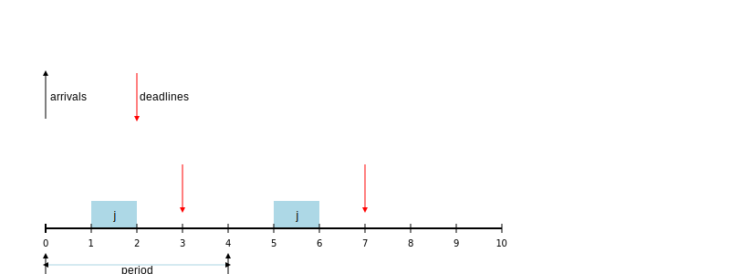
note → deadlines and periods don’t have to match, but they usually do, _i.e., D = P
| property/parameters | description |
|---|---|
| temporal | timing constraints and behavior |
| functional | intrinsic properties of the job |
| resource | resource requirements |
| interconnection | how it depends on other jobs and how other jobs depend on it |
As discussed earlier, we need to get a good understanding of the wcet of jobs.
5.1.2 Utilization
One of the important ways to understand the workload requirements for a task is to compute,
how much utilization is taken up by all jobs of the task?
One might ask: if there are (potentially) an infinite number of jobs for each task, since they’re periodic++ and long running, then how can one campute the utilization?
Recall that a periodic function is of the type → f(t) = f(t + T)
where T is the “period”
Note: utilization is not the time taken by a task (or its jobs). It is,
the fraction of the processor’s total available utilization that is soaked up by the jobs of a task
Hence, the utilization for a single task is,
$$ U_i = \frac{c_i}{T_i} $$
where,
| symbol | description |
|---|---|
| ci | wcet of the task |
| Ti | period of the task |
Now, we can compute the utilization for the entire task set,
$$ U = \sum_{i=1}^{n} U_i = \sum_{i=1}^{n} \frac{c_i}{T_i} $$
Simple Exercise: what is the total utilization for the following task set?
| Task | c | T |
|---|---|---|
| τ1 | 1 | 4 |
| τ2 | 2 | 5 |
| τ3 | 5 | 17 |
what does it mean if U > 1?
5.1.2.1 Precedence Constraints
Jobs can be either precedence constrained or independent → we can use directed acyclic graphs (DAGs) to specify/capture these constraints.
For instance, $ J_a J_b$ implies,
- Ja is a predecessor of Jb
- Jb is a successor of Ja
$ J_a J_b$ implies
- Ja is an immediate predecessor of Jb
Consider the following example:
| dag | relationships |
|---|---|
 |
J1 ≺ J2
$ J_1 J_2$ J1 ≺ J4 J1 ↛ J4 |
Here is a more realistic example → the precedence constraints in an autonomous driving system:

5.1.3 Resource Model
A “resource” is some structure used by task → advance execution.
Type of resources:
- active → e.g., processors (they execute
jobs)
- every job → one or more processors
- same type if functionally identical and used interchangeably
- passive → e.g., files, network sockets, etc.
- private vs shared
We have already discussed resource sharing and synchronization earlier → mutexes, locks, etc. Esentially there is a need for mutual exclusion that is guaranteed via one of these methods or by the use of critical sections.
5.1.4 Scheduling and Algorithms
Before we proceed, we need to understand → preemption:
preemption is the process of suspending a running task in favor of a higher priority task.
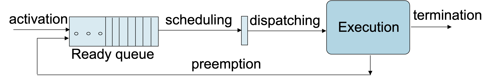
Most OS (real-time & non real-time) allow preemption since they allow,
- greater flexibility in constructing schedules
- exception handling
- interrupt servicing
Preemptions, among others, help define a variety of scheduling events; essentially, these are the time when the scheduler is invoked:
- in a fully preemptive system → task arrival, task completion, resource reauest, resource release, interrupts and exceptions, etc.
- in a non-preemptive system → task completion
- in limited preemptive systems → predefined
preemptions points, e.g., POSIX thread cancel
(
pthread_testcancel())
5.1.4.1 Task Schedule
We have been talking about “scheduling” all this while so it is time to formally define what a schedule is.
Given → a set of jobs, J = {J1, J2, ..., Jn}
A schedule → an assignment of Jobs to the CPU, so that each task can execute till completion.
5.2 Schedulers
Finally, we get to the main topic at hand → schedulers and scheduling! Historically there have been many scheduling policies developed for a variety of systems, e.g., FIFO, round robin, time sharing, etc.
Here is a good comparison of the various types of (historical) CPU/OS schedulers: CPU Scheduling in Operating Systems.
In the realm of real-time systems, to formally define a scheduling problem, we need to specify:
- a set of tasks, τ
- a set of processors, P
- a set of resources, R
Hence, the general scheduling problem is,
assign processors and resources to tasks, such that the following constraints are met:
- timing constraints
- precedence constraints
- resource constraints
There is a large body of literature in the domain of real-time scheduling algorithms. In this chapter, we will focus on a few of them, viz.,
- completely static → e,g., cyclic executives
- priority-based → static (e.g., RM) and dynamic (e.g., EDF)
- dynamic best effort
One of the main problems with the scheduling problem, as defined above (and in general), is that many variants of the problem are intractable, i.e., NP-Hard or even NP-Complete.
Recall that an NP-Hard problem is one where no known polynomial time algorithm exists. So, all known algorithms are superlinear or, usually, of exponential time complexity!
[Will leave it to the reader to recall or look up the definition of NP-Complete.]
Since the scheduling problems may not be tractable (or “solvable” in a realistic time frame), we need to find heuristics but they can be “sub-optimal”. Luckily, we have a couple of provably optimal real-time schedulers (in the single core domain).
Additional, important definitions:
| concept | definition |
|---|---|
| feasibility | schedule is feasible if all tasks can be completed by satisfying a set of specified constraints |
| schedulable | set of tasks is schedulable if there exists at least one algorithm that can produce a feasible schedule |
| schedulability analysis | analysis to confirm that deadlines for a set of threads can be guaranteed using a given scheduling policy |
5.2.1 Cyclic Executives
In the automotive enginer example from earlier, we see that for each cycle, the same set of tasks repeat (i.e.., “periodic behavior”). Note though that the tasks need not execute in parallel – rather, they must execute sequentially for this application. Usually such applications use a scheduling mechanism known as a “cyclic executive”.
Consider this simple example with three tasks:
| task | c |
|---|---|
| T1 | 1 |
| T2 | 2 |
| T3 | 3 |
How would we schedule this? Assuming a single processors (hence a single timeline).

Well, the simplest mechanism is to just use a sequential schedule,

If, as in the case of the engine control example we saw earlier, the tasks repeat ad infinitum, then we see the pattern also repeating…

Cyclic executives were common in many critical RTS, since they’re simple and deterministic. An implementation could look like,
while(1) // an infinite loop
{
// Some Initialization
Task_T1() ;
// Some processing, maybe
Task_T2() ;
// Some other processing, maybe
Task_T3() ;
// Cleanup
}Question: what problems, if any, can happen due to cyclic executives?
The very simplicity of such systems can also be their biggest weakness.
lack of flexibility: as the example and code above demonstrate, once a pattern of executions is set, it cannot be changed, unless the system is stopped, redesigned/recompiled and restarted! This may not be possible for critical applications. Even for the engine control application in cars, this doesn’t just mean stopping and restarting the car, but re-flashing the firmware for the engine, which is quite an involved task.
scalability: along similar lines, it is difficult to scale the system to deal with additional issues or add functionality.
priority: there is no way to assign priority or preemption since all tasks essentially execute a the same priority. Hence, if we want to deal with higher-priority events (e.g., read a sensor) or even atypical (aperiodic/sporadic) events, such as sudden braking in an autonomous car, then a cyclic executive is not the right way to go about it.
resource management: certain tasks can corral resources and hold on to them while others may starve – leading to the system becoming unstable. For instance, even in the simple example, we see that T3 can dominate the execution time on the CPU:

Since the system is one giant executable, it is difficult to stop a “runaway task” – the entire system must be stopped and restarted, which can lead to serious problems.
5.2.2 Frames
One way to mitigate some of the problems with cyclic executives, is to split the resource allocation into “frames” → fixed chunks of time when a task can claim exclusive access to a resource, e.g.. the processor:
- once a frame starts, the task gets to execute uninterrupted
- at the end of the frame, the task must give up the resource → regardless of whether it was done or not
So, if we revisit our simple example and break the
processor schedule into frame sizes of 2 units,
each,

why
2? Well, it is arbitrary for now. But, as we shall see later, we can calculate a “good” frame size
Now, our schedule looks like,

As we see from this picture, task T1 doesn’t end up using its entire frame and hence, can waste resources (one of the pifalls of this method).
Continuing further,

Task T3 is
forced to relinquish the processo at
t=6 even though it has some execution left → on
account of the frame ending. Now T1 resumes in
its own frame. T3 has to
wait until t=10 to resume (and complete) its
execution:

Other Static/Table-Driven Scheduling:
Cyclic executives are an example of schedulers where the tasks are fixed, ahead of time, and all that a scheduler has to do is to dispatch them one at a time in the exact same order. Often the tasks are stored in a lookup table (hence the name “table-driven”). Other examples of such systems (with some prioritization and other features built in) have been built, e.g., weighted round robin → also finds use in cloud computing and networking load balancing, etc.
5.2.3 Priority-Based Schedulers
One method that overcomes the disadvantages of a completely static method is to assign priorities for jobs as they arrive. Hence, when a job is released it gets assigned a priority and the scheduler then dispatches/schedules the job accordingly. Hence, it if is the highest priority job so far, it gets scheduled right away, by preempting any currenlty running tasks. If, on the other hand, it is not the highest priority task then it is inserted into the ready queue at the right position (priority level).
To deal with this, we need an online scheduler, i.e., one that is always available to make scheduling decisions – when tasks arrive, complete, miss their deadlines, etc.
Before we go any further, let’s update the task model a little, to make matters simple for us.
- as before, we have a task set comprised of n periodic tasks, τ = τ1, τ2...τn
- deadline is equal to period, i.e., T = D; task periods are T1, T2, ...Tn
- all tasks are independant → no precedence or resource constraints exist
- tasks cannot suspend themselves (or others)
- tasks are preemptible by the OS → each time the highest priority task is executed (under preemptive scheduling)
- execution time of each task is bounded → wcet (c1, c2, ...cn)
- tasks are released (i.e., placed into the ready queue) as soon as they arrive
- all kernel overheads (e.g., context switches) → assumed to be zero
While these may seem to be overly simplifying, they still fit the model of many systems and help us develop fundamental results. And we can always add them back one-by-one and still retain the correctness of the theoretical results we develop, while making the system more realistic.
Now, in the real of online, priority-driven schedulers, we have two options:
| priority assignment | algorithms |
|---|---|
| static | Rate-Monotonic (RM), Deadline-Monotonic (DM) |
| dynamic | Earliest-Deadline First, Least-Slack Time (LST) |
Let’s look at one of each (the most popular ones), viz. the Rate-Monotonic (RM) and Earliest-Deadline First schedulers. Note that both were first described and analyzed in a seminal Computer Science Paper, that has since become one of the most cited and influential papers in the field: Scheduling Algorithms for Multiprogramming in a Hard- Real-Time Environment by Liu and Layland.
Interestingly, both of these algorithms are provably optimal, i.e., no other static or dynamic algorithm can do better than RM and EDF respectively! Not bad for the first paper in the area – talk about setting a high bar, or rather bound!
5.2.3.1 Rate-Monotonic Scheduler (RM)
The Rate-Montonic priority assignment algorithm assigns priority based on the period of the task → shorter the period, the higher the priority!
Consider the following example:
| task | c | T |
|---|---|---|
| τ1 | 2 | 4 |
| τ2 | 2 | 5 |
| τ3 | 1 | 10 |
So, based on the RM algorithm, the priority will be:
τ1 > τ2 > τ3
since, T1 < T2 < T3.
The question now is whether the above task set is schedulable? Let us use our previous utilization-based check, i.e.,
$$U = \sum_{i=1}^{n} \frac{c_i}{T_i}$$
So, plugging in the numbers, we get,
$$ U = \frac{1}{2} + \frac{1}{4} + \frac{2}{6} = 0.5 + 0.4 + 0.1 = 1.0 $$
Our test was: U ≤ 1. So, this task set is…schedulable? Let us see – by plotting it on the timeline:

As we see, task τ3 misses its deadline! In fact, with the other two tasks, τ1 and τ2 constantly executing, τ3 will never get to execute and all of its jobs will miss their deadlines!
“Wait!”, you say. OK, one job has missed its deadline, maybe two (from the picture). So how can I make the bold claim that all will miss their deadlines?
If you pay close attention to the figure, I have only checked for10time steps. Why that number? Well it so happens that20is the LCM (lowest common multiple) of all the task periods,4,5,10.
Why do we care about the LCM? Turns out, in real-time scheduling, the LCM of the task periods have a special significance. Turns out that if we construct the schedule for one LCM nunber of time units, then the schedule repeats exactly after that! Hence, the exact same schedule repeats every LCM number of units.
The LCM of the constituent (periodic) tasks in the system is referred to as → hyperperiod. So, we only need to check our schedule for one hyperiod. If the task set is schedulable in that timeframe then it will be and, if not, it will not be.
So, for this example, I can state, with confidence, that all jobs of τ3 will miss their deadlines since within half of the hyperperiod, one job has missed its deadline!
So, coming back to our analysis, we started with our utilization test U < 1 which this task set, passed, yet it **failed to schedule*! So, it seems we need something better.
Turns out the Liu and
Layland paper has figured this out. So they created
another test, one based on: utilization upper
bound. Since RM is a static priority assignment
mechanism, there is a theoretical limit on
the utilization for a task set, that depends on the
number of tasks, n, in the system.
So, we derive (I leave out the details here. Check the Liu and Layland paper for more details) another check for utilization,
$$ U = \sum_{i=1}^n \frac{c_i}{T_i} \le n.(2^{\frac{1}{n}} -1) $$
If the total utilization of the system is below this bound, then the task set is schedulable by RM. Note that this is a necessary but not sufficient test (more on that later).
As we see from above, the value of the right hand side will change with the number of tasks in the system. Hence, with more tasks, the upper bound for U will reduce.
let’s open up the simulator-plotter for checking this for various values of
nand see for n = 1, 2, ...
So, we see that
$$n = 3\\ U_{ub} \approx 0.78 $$
The utilization for our task set was: ≈ 1.0 which is
significantly higher! No wonder our task set wasn’t
schedulable!
Here is a plot that shows the values for different numbers of tasks:

As we see, the value keeps reducing. Does it keep going
all the way down to zero? What if I schedule
100 tasks? A 1000?
Turns out, we can check! With the exact same equation.
let’s open up the simulator-plotter for checking this for various values of
nand see for n = 100, 1000, etc.

As we see from the figure (and the active plotting), the
values seem to plateau out and converge…to
0.69! So, for any real-time
system scheduled using the RM assignment mechanism, if the
utilization bound is under 0.69 then it is
schedulable.
Optimality: as mentioned earlier, RM is optimal, i.e.,
- if a task set is schedulable by RM → then there is no other static algorithm that can do better (in terms of utilization)
- if a task set is not schedulable by RM → there is no other static algorithm can schedule it
5.2.3.1.1 Exact (Response Time) Analysis
Now, let’s go back to one of our earlier examples (from the cyclic executive chapter):
| task | c | T |
|---|---|---|
| τ1 | 1 | 4 |
| τ2 | 2 | 6 |
| τ3 | 3 | 12 |
We added some period information to the tasks.
We know that using the naive utilization test, U ≈ .0.833. But, recall that the utilization bound test, for n = 3 tasks requires, U < 0.78. So, this task set must be unschedulable, right? Let’s draw it out on the timeline and see:

Wait, this is schedulable? But it fails our test!
This is why I referred to it as a necessary but not sufficient test. Hence, for the Liu and Layland utilization bound test,
| result of test | schedulable? |
|---|---|
| pass, i.e., Uub < 0.69 | yes |
| fail, Uub > 0.69 | unsure |
We we need a better test → Response Time Analysis (RTA):
- if all jobs of a task are able to complete before their respective deadlines → task set is schedulable
- caveat → we account for the interference (hence, delays) encountered by the jobs by all higher priority jobs
Let’s look at it in more detail:
- worst-case response time of task, τi is
Ri = ci + Ii
where Ii is the interference faced by that job from all higher prioriy jobs until then.
- For each higher priority job, τj, the number of jobs released during the time interval Ri is:
$$\left\lceil \frac{R_i}{T_j} \right\rceil$$
Since each period of task τj results in a new job being released. Since RM gives higher priority to shorter periods, those released jobs will execute ahead of the current teak, τi.
- Since ⌈Ri/Tj⌉ number of τj’s jobs execute before τi, the interference caused by all of them:
$$I_j = \left\lceil \frac{R_i}{T_j} \right\rceil .\ c_j$$
- the total interference then, is the sum of the individual interference by each of the higher priority jobs, i.e.,
$$I = \sum_{j\in hp(i)}\left\lceil \frac{R_i}{T_j} \right\rceil .\ c_j $$
- Finally, the response time for task, τi must combine its own (worst-case) execution time with the total interference from all higher priority tasks,
Ri = ci + Ii
$$ R_i = c_i + \sum_{j\in hp(i)}\left\lceil \frac{R_i}{T_j} \right\rceil .\ c_j $$
For each task, we carry out the above analysis → stop when consecutive iterations provide the same values.
- At each stage, check if the response time for a task is less than or equal to its deadline
∀τi : Ri < Ti
If the above test passes for all tasks, then the task set is schedulable even if the earlier tests fail. Hence, this is both, necessary and sufficient.
Example [contd.]: Now, applying this to our errant example:
assign priorities: τ1 > τ2 > τ3
response time calculations
For each task, we calculate the response time using the above formula via iterative analysis.
| task | iteration | calculations | Ri < Ti |
|---|---|---|---|
| τ1 | 1 | R1 = c1 = 1 | yes [ 1 < 4 ] |
| τ2 | 1 | R20 = c2 = 2
$R_2^1 = c_2 + \lceil\frac{R_2^0}{T_1}\rceil c_1$ $R_2^1 = 2 + \lceil\frac{2}{4}\rceil \cdot 1 = 3$ |
|
| 2 | $R_2^2 = 2 + \lceil\frac{3}{4}\rceil \cdot 1 = 3$ [stop] | yes [ 3 < 6 ] | |
| τ3 | 1 | R30 = c3 = 3
$R_3^1 = c_3 + \lceil\frac{R_3^0}{T_1}\rceil c_1 + \lceil\frac{R_3^0}{T_2}\rceil c_2$ $R_3^1 = 3 + \lceil\frac{3}{4}\rceil \cdot 1 + \lceil\frac{3}{6}\rceil \cdot 2 = 6$ |
|
| 2 | $R_3^2 = 3 + \lceil\frac{6}{4}\rceil \cdot 1 + \lceil\frac{6}{6}\rceil \cdot 2 = 8$ | ||
| 3 | $R_3^3 = 3 + \lceil\frac{8}{4}\rceil \cdot 1 + \lceil\frac{8}{6}\rceil \cdot 2 = 8$ [stop] | yes [ 8 < 12 ] | |
Since the response time of all tasks meet their deadlines under RM scheduling, therefore the task set is schedulable.
The response time analysis algorithm:

There exist many of static assignment algorithms, for instance the Deadline Monotonic Scheduler where priorities assigned to processes are inversely proportional to the length of the deadline.
Resources:
- to read more about the schedulability analysis details or other types of schedulers, see: Priority-Driven Scheduling.
- A Review of Priority Assignment in Real-Time Systems by Davis et al.
5.2.3.2 Earliest-Deadline First Scheduler (EDF)
The problem with static priority assignments, is that
they are typically non-optimal. Wait, but we said
earlier that RM is optimal? Well, among static
priority assignment algorithms RM is optimal but, as we saw
from the analyses and the graphs, upper bounds for tasksets
often taper off at U = 0.69. While we can
create task sets with higher utilization (as the
response-time analyis shows us), it takes a lot of manual
effort to create such task sets. This means, that in the
common case, we are wasting nearly
31 % utilization!
A dynamic assignment of priorities can help mitigate these problems and ensure that we make better use of the system resources. Many dynamic scheduling algorithms have been proposed, e.g., FIFO and Least Slack Time among others.
In this section we will focus on the
priority assignment mechanism for real-time systems which,
actually, is one of the mainline schedulers in Linux, named
SCHED_DEADLINE.
In a nutshell, as the name implies, EDF assigns priority based on the absolute deadline of the job. From Wikipedia: > Whenever a scheduling event occurs (task finishes, new task released, etc.) the queue will be searched for the process closest to its deadline. This process is the next to be scheduled for execution.
While the exact priority of a job depends on its deadline, the latter are calculated statically. Hence, even though jobs of a task may have different priorities, each job has only one priority level. As jobs complete, the priorities of the remaining (or new, incoming) jobs change.
EDF Schedulability Test: is the same as the first test we discussed, i.e.,
$$ U = \sum_{i=1}^{n} \frac{c_i}{T_i} \le 1 $$
As long as we’re following the task model described earlier, this is a very simple check to test for the validity of the task set for EDF.
Let’s revisit our example from RM that was not schedulable, _viz.,
| task | c | T |
|---|---|---|
| τ1 | 2 | 4 |
| τ2 | 2 | 5 |
| τ3 | 1 | 10 |
Before we proceed, we need to decide on some policies:
- two jobs have the same deadlines → pick the one that was released first
- same deadline and released at the same time++ → pick one with the smaller index?
These are some simple rules that help in simplifying the decision-making process. We can change them, as long as it helps us make forward progress and we remain consistent.
++ in this scenario, ideally we should redesign the system to combine these two tasks – if they always run together, then why pay the extra costs of preemption/context-switch, etc.?
For the above task set, we see that,
$$U = \frac{2}{4} + \frac{2}{5} + \frac{1}{10} = 0.5 + 0.4 + 0.1 = 1 \le 1$$
Hence, this task set is schedulable
using EDF (just barely though since its utilization is
1!). At least theoretically! Remember that this
task set failed for RM.
The schedule diagram for this task set looks like,

So far, it looks schedulable. It is left as an exercise
to the reader to check until the hyperperiod
(20).
Optimality: EDF is an optimal scheduling algorithm → if the task set is schedulable by some algorithm, it is also schedulable under EDF.
EDF can definitely squeeze out the maximum from
a system – as we just saw, it can even schedule task sets
with the theoretical utilization vound (1)!
5.2.3.3 RM vs. EDF
So, let’s compare the two superstars of the real-time scheduling world, RM and EDF. The ✓ symbol indicates which one is better.
| parameter | RM | EDF |
|---|---|---|
| optimality | ✓ (static) | ✓ |
| context switch overheads | ✓ | ✗ |
| preemptions | ✗ | ✓ |
| analysis overheads | ✗ | ✓ |
| utilization | ✗ | ✓ |
| implementation ease | ✓ | ✗ |
| predictability | ✓ | ✗ |
| total | ||
Other Issues: note that we have mostly considered a simple task model. But these may vary in real world systems, e.g.,
- $ D <T $, D > T → essentially situations where deadlines and periods don’t align; there are other analyses methods that can be applied
- multicore → so far we have only discussed single core systems; scheduling across multiple cores is an NP-complete problem but many heuristics have been developed; see A Survey of Hard Real-Time Scheduling for Multiprocessor Systems for a summary of many results
- priority inheritance protocols → for dealing with resource contentions; again a large body of work exists in this domain; see Lecture Note #6 for a good summary.
- power consumption and scheduling → scheduling methods can help alleviate power consumption issues; see Real-Time Dynamic Voltage Scaling for Low-Power Embedded Operating Systems for one of the early results.
- memory, networks, networks-on-chip, 5G, etc., → real-time scheduling has been applied to wide variety of domains.
6 Control Theory
Consider a simple problem → how do you balance a ball?

I guess that’s more complicated than what we wanted! So, let’s make it really simple and try in a one dimensional plane, as follows:

We want to balance the ball in the middle of the table. And the ball moves either left or right, based on how we tilt the table.
As we see from this picture, a naive attempt at balancing the ball can quickly make it “unstable”. But, our objective, is to make sure that,
- the ball remains stable and
- it is in the middle of the table
The options that are available to us are:
- tilt the table down on the left (anti-clockwise)
- title the table down on the right (clockwise)
We also have the ability to control the speed at which the table tilts to either side. We can actually combine these, as we shall see.
Hence, the parameters for the problem are:
| type | options |
|---|---|
| inputs | speed (clockwise, anticlockwise) |
| output | ball velocity, acceleration |
Some how, we need to control the outputs by modifying the inputs to the system. Enter control theory.
6.1 Control Theory | Introduction
Control theory is a multidisciplinary field at the intersection of applied mathematics and engineering. Engineering fields that heavily utilize control theory include mechanical, aerospace, electrical and chemical engineering. Control theory has been applied to the biological sciences, finance, you name it.
Anything that you,
- want to control and
- can develop a model
you can develop a “controller” for managing it, using the tools of control theory.
In our everyday life, we interact with technologies that utilize control theory. They appear in applications like adaptive cruise control, thermostats, ovens and even lawn sprinkler systems. The field of control theory is huge and there’s a wide range of subdisciplines.
The basic idea behind control theory is to understand a process or a system by developing a model for it that represents,
the relationships between inputs and outputs for the system
We then use this model to adjust the inputs → to get desired outputs. The relationship between the inputs and outputs is usually obtained through empirical analysis, viz.,,
- make changes to the input
- wait for the system to respond
- observe changes in the output.
Even if the model is based on an equation from physics, the parameters within the model are still identified experimentally or through computer simulations.
We repeat the experiments/simulations as needed to “understand” the system as well as we can, in ordero to develop the model. Once the model has been developed, we develop a control model that can used to tune the input → output relationship.
In effect, we are inverting the original model (input → output) to develop,
control model: input ← output
To better understand this, consider the example of a light bulb and switch:

Even if we didn’t know the relationship between the switch and bulb, we can conduct a few experiments to figure out the following:
| switch state (input) |
bulb state (output) |
|---|---|
| off | off |
| on | on |
Now we have our “model” of input (switch state) → output (ligthbulb state). This model works as as no external disturbances occur (power failure or bulb burn out).
But, this is not our control model. For that, we need to invert the model we’ve built so far.
So, we start with the desired output
state, e.g., the “lightbulb must be on”.
Then, we reason backwards to: “what should the input be
to achieve this desired state?”. Should the switch be
on or off?
From our original model (and experiments), we have created the I/O relationship table above. Hence, it stands to reason that we can “invert” it as:
| desired output lightbulb state |
corresponding input switch state |
|---|---|
| on | on |
| off | off |
Now, let’s formalize things a little.
Consider the following mathematical model that describes the behavior of a system:

The model says that if we change the input u
the output y will change to be
twice the value of the input
u.
Now, in control theory, we are concerned about how to
get to a specific output. Hence, if we want
to reach a specific value of y, say →
y*,
we need to manipulate the model to now create a
“control model”, i.e.,
$$u = \frac{y^*}{2}$$
This model says for any value of the output y* that we
want, we can identify the input u → essentially
dividing y* by
2. Notice that this equation is now in
terms of u → we have our
control law! Restating the obvious, this is
an “inverse” of the original model of the system.
We have just developed our first
controller! The desired value, y* is
referred to as the setpoint. We get to the
setpoint by picking the right value for u.
Developing a control law, in a sense, is inverting your model to rewrite the output in terms of the input so that you can get the output you want. More complex systems lead to more complicated control laws. Practitioners have developed methods of developing control laws for systems whose models cannot be cleanly inverted, e.g., such as nonlinear systems or systems with dead times.
For context, this is where we are in this course map:
6.1.1 Open-Loop vs Closed-Loop Control
For the control law we just developed, if our model is accurate and there are no disturbances then,
y = y*
However, note that there is nothing ensuring that the value of y = y*. We just assume (rather, expect) that it would be the case. This is known as an open loop controller. You desire a certain output and hope that the controller actually gets there.
So, the open loop controller is depicted as:
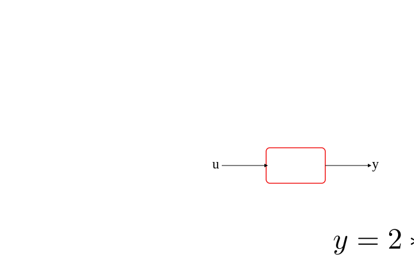
What we really want, is to somehow ensure that the controllers gets to its setpoint. How do we do that?
The problem is that while the input drives the output, there is no way to guarantee that the controller will get to the set point.
What we really need, is a closed-loop controller → one that uses feedback to,
- adjust
u - ensure that we get to y* (or, at least as close to it as possible).
The feedback typically comes from the output of the controller model that we created. So,

Note that the feedback can be positive or negative.
[The above description is distillation of the excellent description found here.]
6.2 Feedback Control
[The following material is thanks to Prof. Sathish Gopalakrishan, Univ. of British Columbia].
Consider the following problem (that we increasingly encounter in the real world):
how do you ensure that a car remains in the center of its lane?
So, we have a car moving on the road, thus:

the blue arrow shows the direction of motion of the car. Hence, for the car to remain in the center of the lane, we need to apply a correction to its direction of motion,

There are some questions that come up:
- how do we apply the corrections?
- how much and
- when do we stop?
Enter feedback control:
- compare system state to the desired state
- apply a change to the system inputs → counteract the deviations
- repeat until desired outcome → setpoint
Example: let’s see how feedback control can be applied to a temperature control of a room.
Given a “desired” room temperature (as input to a thermostat), what do we need to consider while attempting to achieve this temperature?

The thermostat needs to control/provide inputs to a furnace/AC,

which then affects the temperature in the room:

Easy! Done…right?
Except, the real world is far from ideal. We have to deal with disturbances…
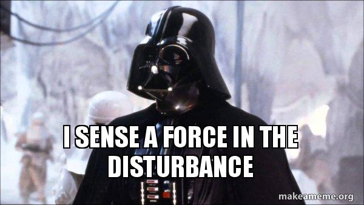
Well not that kind of disturbance, but pesky issues like heat loss, bad insulation and physical problems in general:

As we see from the picture, we may not get to the expected behavior due to external factors. So, as before, just the input will not suffice to reach the setpoint.
So, we provide “feedback” to the controller:

Essentially the temperature reading of the room, after the thermostat and furnace/AC have completed their operations based on the original inputs (desired temperature).
Let’s introduce some generic technical terms for each of these components:

The “controller” is based on the “control model” that we developed earlier. It sends commands (“actuation signals”) to an actuator and then affects the process under control. Finally, the process variable (the “output” from the earlier discussions) is what we want to drive towards the set point.
Note: in the case that feedback is not possible, there is work on → open-loop control and feedforward control.
Another example → cruise control.

Note how the feedback reaches the controller in this case.
So, at a high-level, a closed-loop feedback control system looks like,

Some of these inputs/edges have specific names:

Note: the main goal → error is
minimized (ideally 0).
A more formal definition of the same quantities,

| quantity | definition |
|---|---|
| r(t) | reference/set point |
| e(t) | error |
| u(t) | control signal/“input” |
| y(t) | (expected/final) output |
| $\overline{y(t)}$ | “feedback”/estimate |
Now let’s apply this feedback control model to the earlier problem of lane following.
6.3 Feedback Control Applied to Lane Following
Recall that we want to keep the car in the center of its lane:
But here’s a question → how do you find the center of the lane?
Consider a road with lane markings on either side,

Now, let’s assume that some system (say, a camera), can track the yellow lines to an extent. We need to find the center of the lane, as marked in the figure:

Based on the two points marked up ahead (that we can detect to be on the same plane), we can calculate,
$$x_{center} = \frac{x_{left\_end}+x_{right\_end}}{2}$$
Now, a car need not be in the actual center of the lane,
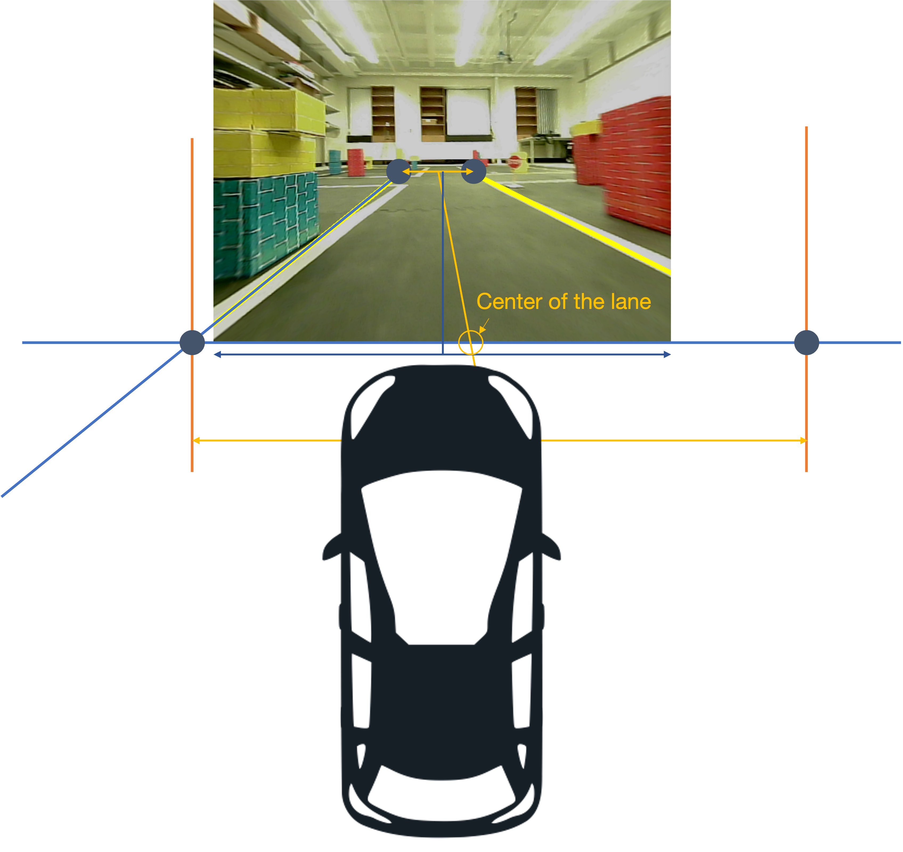
Now, assuming that the camera is mounted at the center of the car,

The car’s position can be calculated as:
$$x_{car} = \frac{width}{2}$$
From this we can calculate the cross-track error (CTE),
CTE = xcar − xcenter
What happens when,
- CTE > 0
- CTE < 0?
Now, back to our original problem → keeping the car in the center of the lane. We do this by → keep CTE as small as possible and applying corrections,
The $64,000 question is: how?
Answer: feedback control!
Recall the various components of the feedback control:
Now, let’s map the lane following components on to this:

As we see from the figure, the lane following controller sends the control/actuation signal to the steering unit. Sensors (perhaps a camera equipped with vision algorithms in this case) provide feedback to the controller ($\overline y_t$). Mapping this back to the lane variables and CTE,

This figure shows the important part → the CTE is the feedback for the lane following controller! The input then is the negative error, i.e., the goal is to reduce the CTE. Also note that the output of the controller is the steering input.
So, let’s focus in on how the controller operates, i.e., this part:

Problem statement:
given the CTE, how do we compute the control signal so that the car stays in the middle of the lane?
The final “corrections”, when applied, may look something like this:

6.4 PID Control
Let’s start with one goal → lateral position control:
| process variable | y(t) | y position at time, t |
| goal | y = 0 | keep the car at position 0 |
| control signal | u(t) | steering |
Let’s say we have the car’s start and end position,

And we know the relationship between u(t) and y(t):

Basically we want u(t) to be negative → so that y tends towards its eventual goal, y = 0.
So, what should our control input, e(t) = ?
As we see below, we want the input to be a decreasing value of the feedback,
e(t) = −y(t)

This is called proportional (P) control.
6.4.1 Proportional (P) Control
The correction is proportional to the size of the error, i.e.,

So, going back to our example of lateral control, let us try to apply the proportional control methodology to it:

We have the following choices:
- Kp > 0
- Kp < 0
We pick the Kp > 0 since we want the following relationship to hold (following from e(t) = −y(t)):
Kpe(t) = −Kpy(t)
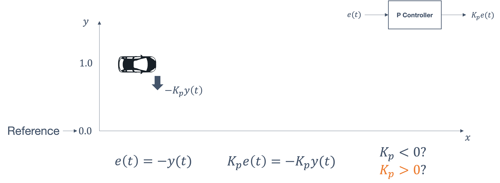
We see that this proportional controller helps us move the car towards our goal, y = 0.
Now, let’s consider a few situations:
- what happens if Kp → too small (small “gain”)?

The response is too slow/gradual. We may never get to the goal in this case.
- what happens if Kp → too large (large “gain”)?

The response is too sudden. The system may overshoot the goal!
So, the next question that comes up → can the car be stabilized at y = 0? This is unlikely using just the proportional control method since,
| gain | effect |
|---|---|
| small | stead-state error |
| large | oscillations |
The question then becomes → how can we reduce oscillation, i.e., can we get to the following situation (smoother, actual approach to the goal)?

6.4.2 Derivative (D) Control
Derivative control improves the dynamic response of the system by,
- studying the rate of change of the error and
- decreasing oscillation

So, what does this mean, in practice? What we’re measuring and trying to control, is the rate of change, i.e., the change from,
y(t − 1) → y(t)

Typically, proportional and derivative control are often used together, as a way to counteract each others’ influences. So, we get:

As with the proportional controller, we have two options for the derivative as well. Should,
- $\frac{dy(t)}{dt} < 0$
- $\frac{dy(t)}{dt} > 0$
Note that the derivative controller’s job is to steer away from the reference line, to act as a counter to the proportional controller pushing in the opposite direction. Hence, we pick $\frac{dy(t)}{dt} < 0$.
The derivative controller acts like a brake and counteracts the correctional force. It reduces overshoot by slowing the correctional factor → as the reference goal approaches.

We see numerous uses of the combination, known as the P-D controllers in every day life, from the smallest to the largest, even rocket ships!
6.4.2.1 Tuning P-D Controllers
Consider the following values for the two coefficients, Kp and Kd:


As we see, tuning Kd has a significant impact! The oscillations pretty much go away and we quickly get to the reference line with very little oscillation. Of course, the car overshoots a little but the combination of P-D brings it back soon enough.
An interesting question arises → what if we increase the value of Kd – eventually making it very large?
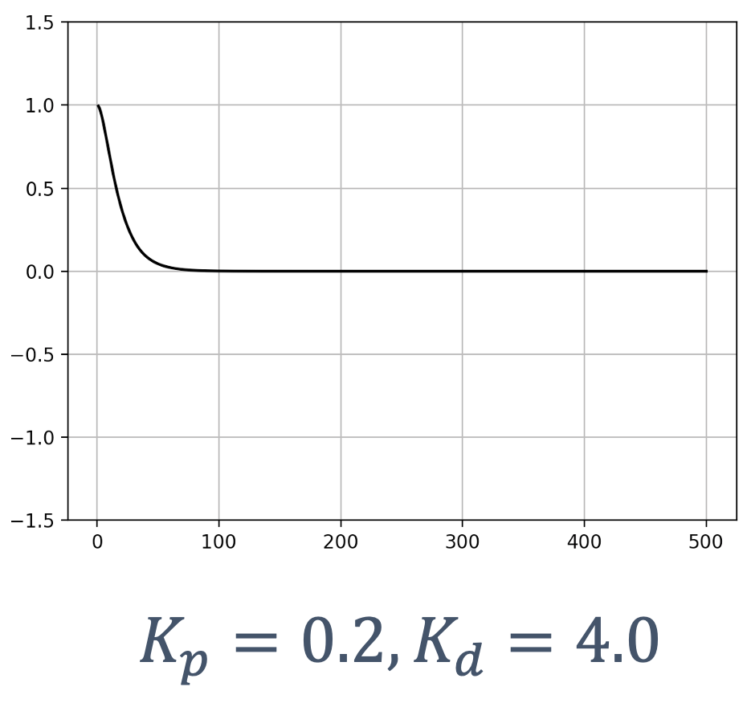


While we see from the first graph (Kp = 0.2, Kd = 4.0) that the oscillations have gone away, increasing Kd further makes the situation worse – it drives the car away from the reference goal!
How do we deal with this?
Well, by tuning the paramters, of course! For instance, in the last case, if we make a change K_p = 3.0,
→

We see a quick, “smooth” path to the reference!
In fact, a lot of the design of control systems involves the tuning of such parameters, depending on the system, to get things “just right”.
6.4.3 Integral (I) Control
Are we done? Not quite. Let’s take a closer look at the results:

As we see from this image, even though we reached the reference, the behavior is not smooth! There could be many reasons for this, such as steering drift, caused by the mechanical design of the system:


There are a variety of unmodeled disturbances and systemic errors (“bias”):
- actuators and processes → not ideal
- friction, steering, drift, changing workloads, misalignments, etc.
Hence, the signal may never reach the set points! It will end up “settling” near the reference, which is not always ideal.
To deal with this, we need integral (I) control.
First, let’s define steady state error (SSE):
difference between the reference and the steady-state process variable
Hence, when time goes to infinity,
SSE = limx → ∞[r(t) − y(t)]
The correction must be proportional to both → error and duration of the error. Essentially it sums the error over time.

Note: unless the error is zero, this term will grow! In fact, the error keeps adding up, so the correction must also increase → this drives the steady state error to zero.

In many instances, integral control is used in conjunction with the P and D controllers,

This is known as: PID Control,
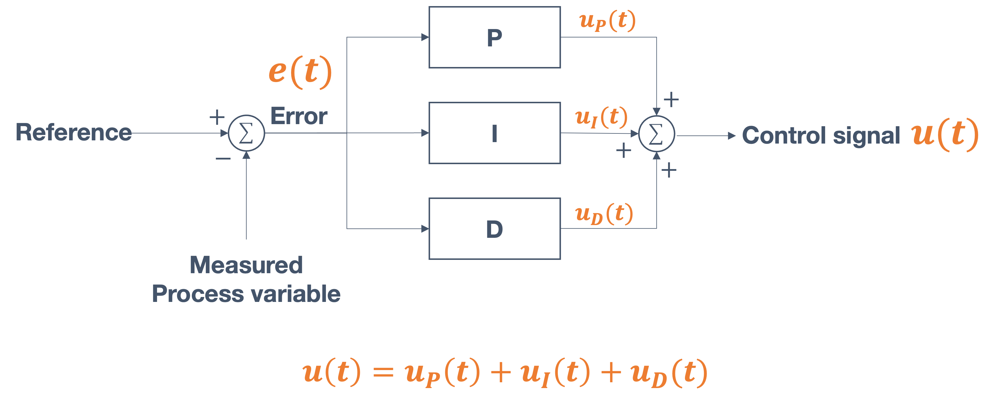
Let’s look at some examples of tuning the various paramters of a PID controller, as applied to our problem:


Let’s increase Kp now and see the effect:

We see that the system has stabilized well around the reference point and, if we zoom in, we will see fewer disturbances.
Now, let’s keep increasing Kp,


Wait, the signal oscillates? The main reason is that the I term is not zero when crossing the reference, y(t) = 0 and it takes a little while to wash out the cumulative error.
In summary:
- P is required
- depending on the system, one or both of
I/D is combined with
P
- PI, PD or PID
Tuning P, I, D gains. There is no “optimal” way to tune the PID gains
- start with → Kp = 0, Kd = 0, Ki = 0
- slowly increase Kp until → system oscillates around set point
- slowly increase Kd until → system settles around set point
- if steady-state error exists → slowly increase Ki until corrected without causing additional oscillations
6.4.4 Some additional feedback control applications:
- Segway balance control
- Drone control
- Motor speed control
References:
- Control theory introductions: 1, 2, 3
- Map of Control Theory
- What is PID Control by Mathworks
- Control Theory Lectures by Brian Douglas.
- Introduction to Control Theory and Application to Computing Systems by Abdelzaher et al.
- Automotive Control Systems
- PID Controller Design
- Introduction to PID controllers
- Construction and theoretical study of a ball balancing platform by Frank and TJERNSTRÖM.
- Understanding PID Control: 2-DOF Ball Balancer Experiments
- Control Engineering for Industry from Stanford University.
- A Line Following Robot Using PID Controller
- Ball and Beam: System Modeling
- Open Loop Control System
7 Actuation
A controller will typically generate a control signal which, in many physical systems, is used to “actuate” a physical component – i.e., make it move.
An actuator, then, is a part of a device or machine that helps it to achieve physical movements by converting energy, such as electrical, air or hydraulic, into mechanical force. Simply put, it is the component in any machine that enables movement. They’re like muscles on a human body – converting energy to physical action. Actuators are present in almost every machine around us, from simple electronic access control systems, the vibrator on your mobile phone and household appliances to vehicles, industrial devices, and robots. Common examples of actuators include electric motors, stepper motors, jackscrews, electric muscular stimulators in robots, etc.
Defined simply, an actuator is a device that converts energy, which may be electric, hydraulic, pneumatic, etc., to mechanical in such a way that it can be controlled. The quantity and the nature of input depend on:
- the kind of energy to be converted and
- function of the actuator.

Electric and piezoelectric actuators, for instance, work on the input of electric current or voltage, for hydraulic actuators, its incompressible liquid, and for pneumatic actuators, the input is air. The output is always mechanical energy.
They are responsible for ensuring a device such as a robotic arm is able to move when electric input is provided. A car uses actuators in the engine control system to regulate air flaps for torque and optimization of power, idle speed and fuel management for ideal combustion.
An actuator requires,
- a control device (which provides control signal) and
- a source of energy.
The displacement achieved is commonly linear or rotational, as exemplified by
- linear motors and
- rotary motors.
Another broad classification of actuators separates them into two types:
- continuous-drive actuators and
- incremental-drive actuators (e.g., stepper motors).
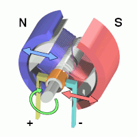
Brushed DC motors move continuously when DC voltage is applied to their terminals.
Stepper motors are a variant of motors, named brushless motors, that rotate in a series of small and discrete angular steps. Stepper motors can be set to any given step position without needing a position sensor for feedback. step position can be rapidly increased or decreased to create continuous rotation, or the motor can be ordered to actively hold its position at one given step. Motors vary in size, speed, step resolution and torque.
The stepper motor is known for its property of converting a train of input pulses (typically square waves) into a precisely defined increment in the shaft’s rotational position. Each pulse rotates the shaft through a fixed angle.

[From Wikipedia: Animation of a simplified stepper motor turned on, attracting the nearest teeth of the gear-shaped iron rotor - with the teeth aligned to electromagnet 1, they will be slightly offset from right electromagnet (2) - Frame 2: The top electromagnet (1) is turned off, and the right electromagnet (2) is energized, pulling the teeth into alignment with it. This results in a rotation of 3.6° in this example. - Frame 3: The bottom electromagnet (3) is energized; another 3.6° rotation occurs. - Frame 4: The left electromagnet (4) is energized, rotating again by 3.6°.
When the top electromagnet (1) is again enabled, the rotor will have rotated by one tooth position; since there are 25 teeth, it will take 100 steps to make a full rotation in this example.]
Motor Control: motor speed and direction are dictated by the voltage applied – change or reverse the polarity of the voltage and the motor will respond in a similar fashion. Voltage can be changed by raising the series resistance within the electrical circuit, which in turn lowers the current through the motor. This change in voltage can be accomplished by series resistors, potentiometers or rheostats. While these devices may be effective for small changes in voltage, the power and torque of the motor are decreased as the current drops. In addition, significant resistance from these devices can produce a lot of heat which could damage other devices within the electrical system.
A more efficient way to vary voltage is to use a PWM controller.
7.1 Pulse Width Modulation
Digital Signals are represented as 0 and
1. Analog signals, on the other hand, have a
greater range of values, often continuous in nature (as we
saw in the bit about ADCs). To
control a physical/“analog” device using a microcontroller,
we need to do the opposite → convert from digital to
analog signal.

Some microcontrollers have an onboard digital-to-analog converter (DAC) to output a true analog signal in order to control analog devices and we can even use an external DAC. But a DAC is relatively expensive to produce in terms of cost and it also takes up a lot of silicon area. To overcome these issues and to easily achieve the functionality of a DAC in a much more cost-efficient way, we use pulse-width modulation (PWM).
PWM is a method to control analog devices using digital signals. We output an “analog-like signal” from the microcontroller that can then control motors, lights and various actuators.
Note: the PWM is not a true analog signal, just a digital one modified to behave like one. It is essentially a rectangular wave with varying “duty cycle” and periods.
In the following example, an idealized inductor is driven by a set of voltage pulses (in blue) that result in a sine-wave-like current (in red).

PWM is useful for controlling the average power or amplitude delivered by an electrical signal. The average value of voltage (and current) fed to the load is controlled by switching the supply between 0 and 100% at a rate faster than it takes the load to change significantly. The longer the switch is on, the higher the total power supplied to the load.
Example: Consider the following analogy. Imagine you have a ceiling fan that has just an off-on switch, i.e., it is either stationary or goes to 100%.

What if I say: I want the fan to operate at 50%? The only “control” you have is the on-off switch. Can you do it?
Solution:
- turn
onswitch - wait till fan reaches 50% (or close to it)
- turn it
off - when it starts to slow down → turn it
onagain - repeat fast enough and you get close to the 50%
- the faster you do this → closer to the desired value (aka setpoint)
Ideally I don’t recommend doing this…

So a PWM “wave” looks like:

on-off switching |
pulse |
| duration for which the pulse is held at a high state | pulse width |
| T | period |
A PWM wave has two important properties that needs to be tuned:
- duty cycle
- period → one complete cycle of the signal/pulse.
7.1.1 Duty Cycle
Recall that logic high → on
(or off depending on the system, but pick one
for consistency). To represent an on time, we
use the concept of the duty cycle, defined
as:
duty cycle describes the proportion of ‘on’ time to the regular interval or ‘period’ of time.
Duty cycles are represented as percentages (of time that
the signal is on, relative to its period).


The duty cycle can be calculated as:
$$D = \frac{T_{on}}{T} * 100$$
where,
| D | duty cycle (percentage) |
| Ton | duration when signal is on |
| T | total period |
Consider the periodic pulse wave, f(t), with a low value, ymin, high value, ymax, and constant duty cycle, D, as shown below:
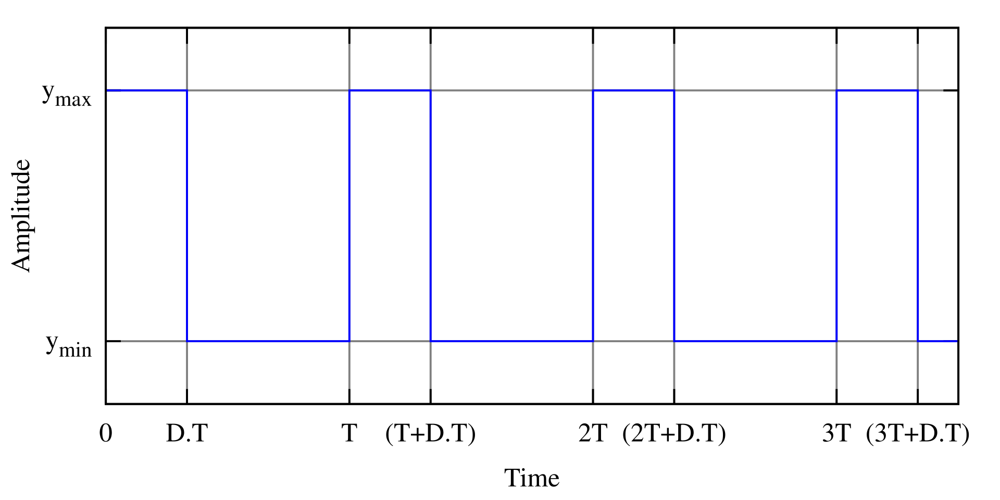
The average value of a wave is,
$$\bar{y} = \frac{1}{T}\int^T_0f(t)\,dt$$
Since f(t) is a pulse wave, its value is,
| ymax | 0 < t < D.T |
| ymin | D.T < t < T |
Now, we can expand the above expression as,
$$ \begin{align*} \bar{y} &= \frac{1}{T} \left(\int_0^{DT} y_\text{max}\,dt + \int_{DT}^T y_\text{min}\,dt\right)\\ &= \frac{1}{T} \left(D \cdot T \cdot y_\text{max} + T\left(1 - D\right) y_\text{min}\right)\\ &= D\cdot y_\text{max} + \left(1 - D\right) y_\text{min} \end{align*} $$
So we can now compute how long the signal should be at ymax and how much at ymin.
7.1.2 PWM Period
The period (or frequency, recall that $f=\frac{1}{T}$) is another important parameter that defines a PWM signal. It essentially determines the number of times a signal repeats per second. The choice of T depends heavily on the application. For instance, when controlling an LED,
the frequency of a PWM signal should be sufficiently high if we wish to see a proper dimming effect while controlling LEDs. A duty cycle of 20% at 1 Hz will be noticeable to the human eye that the LED is turning ON and OFF. However, if we increase the frequency to 100Hz, we’ll get to see the proper dimming of the LED.
7.1.3 PWM Sampling Theorem
Is directly related to the Nyquist-Shannon Sampling Theorem discussed earlier. A simple summary,
number of pulses in the waveform is equal to the number of Nyquist samples.
Recall that the Nyquist rate is, a value equal to twice the highest frequency.
7.1.4 Example | Servo Motor Control
Servos (also RC servos) are small, cheap, mass-produced servomotors or other actuators used for radio control and small-scale robotics.

They’re controlled by sending the servo a PWM (pulse-width modulation) signal, a series of repeating pulses of variable width where either the width of the pulse (most common modern hobby servos) or the duty cycle of a pulse train (less common today) determines the position to be achieved by the servo.

7.1.5 PWM Generation in Microcontrollers
We can use the built-in PWM components in many microcontrollers or timer ICs. Using Arduino, generating a PWM is as simple as writing out a few lines of code!
analogWrite(pin, value)Note that not all pins of an Arduino can generate a PWM signal. In the case of Arduino Uno, there are only 6 I/O pins (3,5,6,9,10,11) that support PWM generation and they are marked with a tilde (~) in front of their pin number on the board.

Examples of various duty cycles:
analogWrite(PWM_PIN, 64); // 25% Duty Cycle or 25% of max speed
analogWrite(PWM_PIN, 127); // 50% Duty Cycle or 50% of max speed
analogWrite(PWM_PIN, 191); // 75% Duty Cycle or 75% of max speed
analogWrite(PWM_PIN, 255); // 100% Duty Cycle or full speedThe Raspberry Pi also has a variety of GPIO pins that can be used for generating PWM signals:

Consider this code for controlling the brightness of an LED:
import RPi.GPIO as IO #calling header file which helps us use GPIO’s of PI
import time #calling time to provide delays in program
IO.setwarnings(False) #do not show any warnings
IO.setmode (IO.BCM) #we are programming the GPIO by BCM pin numbers. (PIN35 as ‘GPIO19’)
IO.setup(19,IO.OUT) # initialize GPIO19 as an output.
p = IO.PWM(19,100) #GPIO19 as PWM output, with 100Hz frequency
p.start(0) #generate PWM signal with 0% duty cycle
while 1: #execute loop forever
for x in range (50): #execute loop for 50 times, x being incremented from 0 to 49.
p.ChangeDutyCycle(x) #change duty cycle for varying the brightness of LED.
time.sleep(0.1) #sleep for 100m second
for x in range (50): #execute loop for 50 times, x being incremented from 0 to 49.
p.ChangeDutyCycle(50-x) #change duty cycle for changing the brightness of LED.
time.sleep(0.1) #sleep for 100m secondReferences:
Additional reading/examples/etc. if you want to learn more about PWMs, programming, etc.:
- What is a PWM Signal?
- Servo Motors programing
- What is a DAC and why do you need on anyways?
- An Engineer’s Primer on Actuators
- What is a Linear Actuator? [YouTube Video]
- Understanding the Basics of PWM
- Raspberry Pi: PWM Outputs with Python (Fading LED)
- Raspberry Pi PWM tutorial
- Actuation and Avionics
8 State Estimation
Consider a robot in a simple grid starting at (0, 0) with the intention of moving to (2, 2):


Now the robot can take multiple paths to get to its destination. The robot has multiple choices as shown in the following figure:

Let’s assume that it follows one of these paths and ends up at the following position:


Clearly this is not the intended goal so a few things need to happen:
- first of all, the robot has to understand and estimate where it is right now → i.e., estimate its current state
- the robot has to then make a decision, based on its current state, where to head next
How to do this?
Answer: state estimation!
But before we go there, we have to answer the following question → how did we end up here in spite of onboard sensors?
The sensor gave us a value, xk → we can’t seem to trust it as is → because sensors are imperfect, mainly due to:
- physical limitations, measurement noise, poor calibrations, etc.
- errors can’t be zero
- error = observation – true_value
In some sense, we need to “filter” out noisy data and only allow correct data to guide us. Hence, our robot can pick the right direction to end up at its correct destination.


8.1 State Estimation
State estimation is a fundamental problem in control theory, robotics and signal processing. It involves determining the state of a dynamic system from noisy or incomplete measurements. The Kalman filter, developed by Rudolf E. Kálmán in the early 1960s, is one of the most widely used and powerful algorithms for state estimation.
In the context of dynamic systems, “state” is defined as,
a set of variables that completely describe the system at a given time.
For example:
| system | state variables |
|---|---|
| moving vehicle | position, velocity, acceleration |
| pendulum | angle, angular velocity |
| financial system | asset prices, market indicators |
State evolves over time according to the system dynamics, which can be described by a state transition model.
8.1.1 How to Estimate State?
Let’s look at some data:

How we take these values (xk) and generate a state estimate, $\overline{x_k}$?
What if we have a few more values?
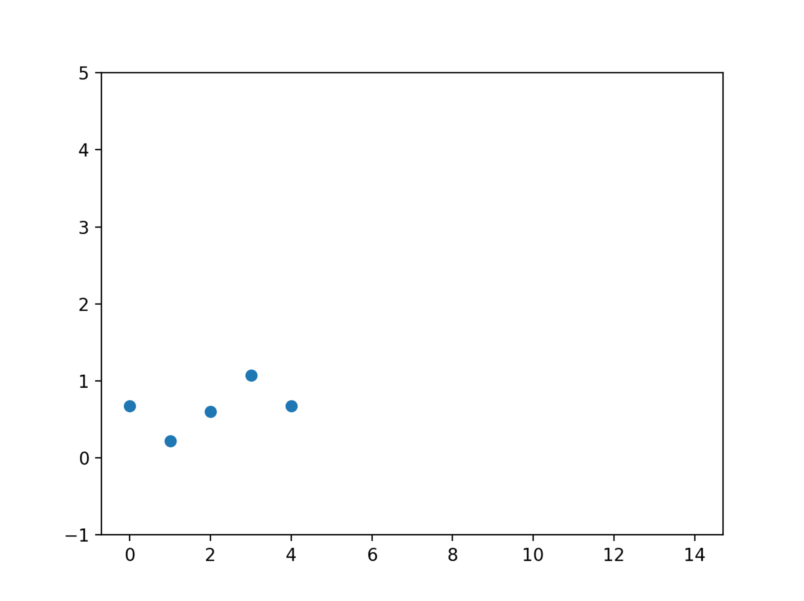

Do we see a trend? What if we had many more values?

What’s the best way to capture the behavior? We can see that it is “noisy” in that it doesn’t follow an “exact” trend.
Remember that $\overline{x_k}$ is the estimate we want:

One way to compute $\overline{x_k}$ would be as an
average of a running window of
samples. Why “window” and not all the samples? Well
we may only care about the most recent n values
– anything older and it may not be directly applicable to
our current situation.
We can compute the average as follows:
$$ \overline{x_{k}}=\frac{x_{k-n-1}+\cdots+x_{k-1}+x_{k}}{n} $$
where the only parameter is the window size, n.
Consider the following data:
| k | xk | $\overline{x_{k}}$ |
|---|---|---|
| 0 | 0.08187 | 0.08187 |
| 1 | 0.97601 | 0.52894 |
| 2 | 1.18350 | 0.74713 |
Using the running window average method (for window size n = 3), we get:

As we add more values, we see that the window moves as well, aggregating groups of values:
| k | xk | $\overline{x_{k}}$ |
|---|---|---|
| 0 | 0.08187 | 0.08187 |
| 1 | 0.97601 | 0.52894 |
| 2 | 1.18350 | 0.74713 |
| 3 | 0.99502 | 1.05151 |
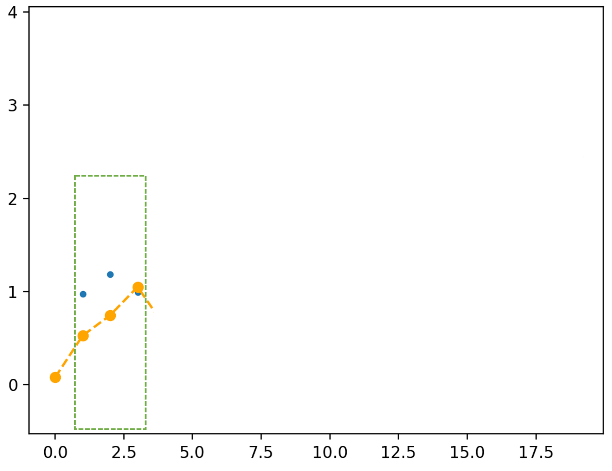
| k | xk | $\overline{x_{k}}$ |
|---|---|---|
| 0 | 0.08187 | 0.08187 |
| 1 | 0.97601 | 0.52894 |
| 2 | 1.18350 | 0.74713 |
| 3 | 0.99502 | 1.05151 |
| 4 | -0.31375 | 0.62159 |
| 5 | -0.25739 | 0.14129 |
| 6 | 1.52112 | 0.31666 |

We can see that the estimate is trying to match the changes in the original sensor readings.
finally, we get:
| k | xk | $\overline{x_{k}}$ |
|---|---|---|
| 0 | 0.08187 | 0.08187 |
| 1 | 0.97601 | 0.52894 |
| 2 | 1.18350 | 0.74713 |
| 3 | 0.99502 | 1.05151 |
| 4 | -0.31375 | 0.62159 |
| 5 | -0.25739 | 0.14129 |
| 6 | 1.52112 | 0.31666 |
| 7 | 1.75454 | 1.00609 |
| 8 | 1.82412 | 1.69993 |
| 9 | 1.89229 | 1.82365 |
| 10 | 1.10513 | 1.60718 |
| 11 | 1.22321 | 1.40688 |
| 12 | 2.20793 | 1.51209 |
| 13 | 3.02390 | 2.15168 |
| 14 | 2.45511 | 2.56231 |
| 15 | 2.07442 | 2.51781 |
| 16 | 1.49280 | 2.00744 |
| 17 | 1.19093 | 1.58605 |
| 18 | 2.32653 | 1.67009 |
| 19 | 3.84177 | 2.45308 |

This is a good start, but let’s consider a few changes.
First: what happens if window size *increases**?
We consider n = 4 or n = 9 even.

But first, let’s discuss some properties that correlate with larger window size:
| property | effect (larger n) |
|---|---|
| smoothening | more/less? |
| sensitivity (to changes) | more/less? |
These properties can significantly affect the response for the system → whether it is jerky or sudden vs. a better, albeit slower, response. Also, the sensitivity tells us that the system doesn’t respond easily to big changes in output, thus increasing inertia!
Let’s look at a few examples:


What about delays? Does the window size affect how delayed the estimate is?


As we see, this is the case! With increased window sizes → delays increase.
Questions: Why does this happen?
| property | effect (larger n) |
|---|---|
| smoothening | more |
| sensitivity (to changes) | less |
| delays | more |
8.1.2 Exponential Moving Average (EMA)
To give more weights to recent data, prevent delays and get a better control over the smoothing, we use EMA that usese exponentially decreasing weights over time,
$$ \begin{aligned} & \overline{x_{0}}=x_{0} \\ & \overline{x_{k}}=\alpha x_{k}+(1-\alpha) \overline{x_{k-1}}, k>0 \end{aligned} $$
where, α (0 < α < 1) → smoothing factor.
Example (α = 0.75):
| k | xk | $\overline{x_{k}}$ |
|---|---|---|
| 0 | 2.0 | 2.0000 |
| 1 | 3.0 | 2.7000 |
| 2 | 2.0 | 2.2100 |
| 3 | 4.0 | 3.4630 |
| 4 | 3.0 | 3.1389 |
One of the main advantages of EMA is that we only need to store one value, $\overline{x_{k}}$.
But why “exponential”? If we expand the term for $\overline{x_{k}}$ we see,
$$ \begin{array}{rlrl} \overline{x_{k}} & =\alpha x_{k}+(1-\alpha) \overline{x_{k-1}}\\ & =\alpha x_{k}+\alpha(1-\alpha) x_{k-1}+(1-\alpha)^{2} \overline{x_{k-2}} \\ & =\alpha x_{k}+\alpha(1-\alpha) x_{k-1}+\alpha(1-\alpha)^{2} x_{k-2}+(1-\alpha)^{3} \overline{x_{k-3}} & \vdots \\ & =\cdots & \\ & =\alpha\left[x_{k}+(1-\alpha) x_{k-1}+(1-\alpha)^{2} x_{k-2}+(1-\alpha)^{3} x_{k-3}+\cdots+(1-\alpha)^{k-1} x_{1}\right]+(1-\alpha)^{k} x_{0} \end{array} $$
As we see, the effect of the smoothing factor, α, is applied exponentially with each sensor reading. For various values of α,
$$ \begin{array}{c} \alpha=0.3000 \\ \alpha(1-\alpha)=0.2100 \\ \alpha(1-\alpha)^{2}=0.1470 \\ \alpha(1-\alpha)^{3}=0.1029 \\ \vdots \\ \end{array} $$
EMA takes into acount all past data and encodes it into a single value, $\overline{x_{k}}$.
Consider the following example where α = 0.5:
| k | χk | $\overline{\chi_{k}}$ |
|---|---|---|
| 0 | 0.08187 | 0.08187 |
| 1 | 0.97601 | 0.52894 |
| 2 | 1.18350 | 0.85622 |
| 3 | 0.99502 | 0.92562 |
| 4 | -0.31375 | 0.30594 |
| 5 | -0.25739 | 0.02427 |
| 6 | 1.52112 | 0.77269 |
| 7 | 1.75454 | 1.26362 |
| 8 | 1.82412 | 1.54387 |
| 9 | 1.89229 | 1.71808 |
| 10 | 1.10513 | 1.41161 |
| 11 | 1.22321 | 1.31741 |
| 12 | 2.20793 | 1.76267 |
| 13 | 3.02390 | 2.39328 |
| 14 | 2.45511 | 2.42420 |
| 15 | 2.07442 | 2.24931 |
| 16 | 1.49280 | 1.87105 |
| 17 | 1.19093 | 1.53099 |
| 18 | 2.32653 | 1.92876 |
| 19 | 3.84177 | 2.88526 |
The graph looks like:
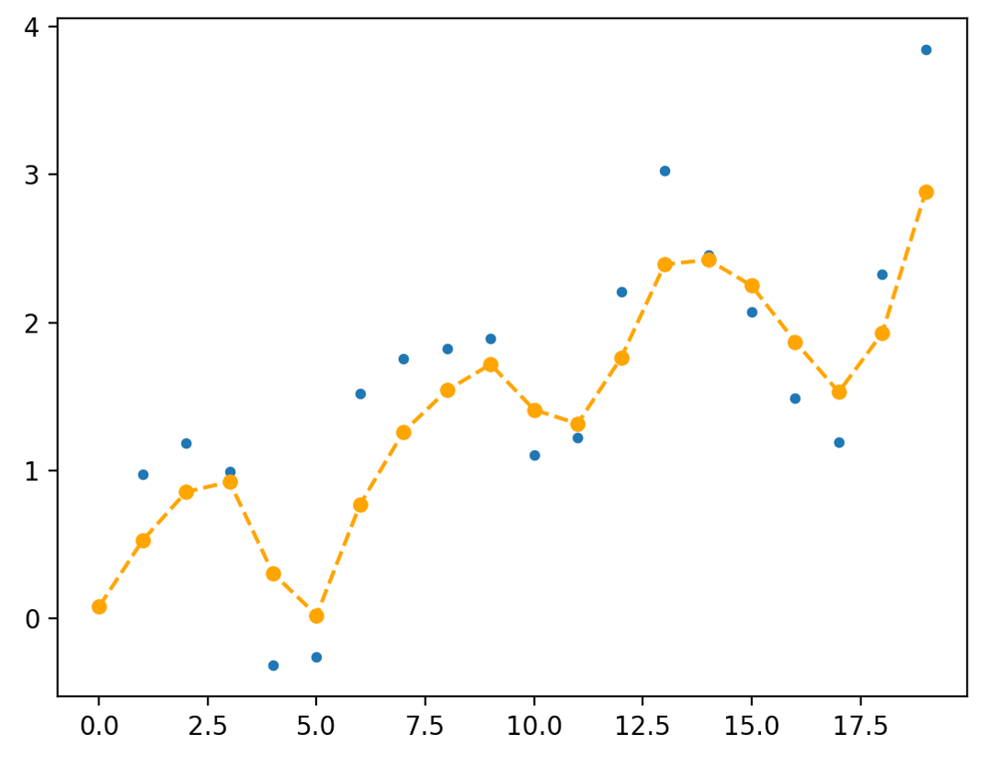
Let’s consider some of the values:
| k | χk | $\overline{\chi_{k}}$ |
|---|---|---|
| 0 | 0.08187 | 0.08187 |
| 1 | 0.97601 | 0.52894 |
| 2 | 1.18350 | 0.85622 |
| 3 | 0.99502 | 0.92562 |
| 4 | -0.31375 | 0.30594 |
| 5 | -0.25739 | 0.02427 |
| 6 | 1.52112 | 0.77269 |
| … | … | … |
$\overline{x_{4}}=0.5 x_{4}+0.5 \overline{x_{3}}$
We see that for this value of α, the estimate is “halfway” between the two sensor readings,

Now, if we change α = 0.7, we get $\overline{x_{4}}=0.7 x_{4}+0.3 \overline{x_{3}}$ and the graph now looks like,

As we see, there’s a heavier bias towards the more recent value.
Now, of these graphs, which one is α = 0.05 and which one is α = 0.95?


We can see the significance of changing α,


As we see from the following figures, increasing α (left to right) results in:
- less delay
- less smoothening out


8.1.3 State Space Representation
A more “formal” description of state:
a quantitative characterization of a system that is not directly observable
Examples: temperature, position, velocity, weight, etc.
There are many ways to represent state, even for the same quantity. For instance, consider how to estimate the position of a car in a 2D plane, with the intent of tracking it:

So, how do we represent the “state” of this car?
- xk = (x, y)
A simple position on the coordinate system. Is this sufficient?
While this captures a static state of the system, it doesn’t necessarily allow for tracking the car.
- xk = (x, ẋ, y, ẏ)
So, let’s also track the velocity. Clearly that will tell us how fast the car is moving and so we can “track” it correctly?
Well, not quite. This is instantaneous velocity that doesn’t tell us if the car is accelerating or deccelerating!
- $\boldsymbol{x}_{\boldsymbol{k}}=(x, \dot{x}, \ddot{x}, y, \dot{y}, \ddot{y})$
Ok, so now we have position, velocity and acceleration! Surely, we’re done?
But do we know which direction the car is heading in?
- $\boldsymbol{x}_{\boldsymbol{k}}=(x, \dot{x}, \ddot{x}, y, \dot{y}, \ddot{y}, \theta)$
Now, we have a better sense of the “state” of the car, in order to track it.
State estimation → estimating state from sensor measurements.
While the moving averages and EMA are good ways to deal with noisy measurements, estimating state is much harder. There is often uncertainty in the measurements and state estimation.
8.1.4 Probabilistic State Estimation
These methods allow us to deal with the uncertanties in sensor measurements as well as in state estimation by use of probility. The main idea → represent state in a probability distribution
- Measurements are noisy
- Models ‘uncertainty’
We start with the following “belief” → knowledge about the state or ‘estimate of the true state’
A Probabilistic state estimation, then → computes new belief based on measurement data

There are various methods for probabilistic state estimations, most notably,
8.1.4.1 Review of Probability Theory
Let’s take a quick detour to review some concepts in probability theory.
Random variable, X
A variable whose possible values are numerical outcomes of a random phenomenon
- A function X: Ω → ℝ, where Ω is the set of possible outcomes
- Example: rolling a dice, Ω = {1, 2, 3, 4, 5, 6}
It models state, measurement, controls, environments, etc.
Discrete random variable → X can take on a countable number of values
Continuous random variable → X can take on an infinite number of values
Probability distribution, p(x)
- Links each outcome with probability
Probability distribution: p(⋅) Probability: Pr (⋅)
Two way do represent probability distributions:
| probability mass function (PMF) | probability density function (PDF) |
|---|---|
 |
 |
- Joint distribution
- p(x, y) = p(X = x and Y = y)
- If X and Y are independent
- p(x, y) = p(x)p(y)
Conditional distribution
- p(x ∣ y) : probability of x given y
- If p(y) > 0,
- $p(x \mid y)=\frac{p(x, y)}{p(y)}$
- p(x, y) = p(x ∣ y)p(y)
- If X and Y are independent, p(x ∣ y)=
?, p(y ∣ x)=
?
- i.e., X (resp. Y ) tells nothing about Y (resp. X )
Consider the example of rolling two dice ( X, Y )
| (1, 1) | (1, 2) | (1, 3) | (1, 4) | (1, 5) | (1, 6) |
|---|---|---|---|---|---|
| (2, 1) | (2, 2) | (2, 3) | (2, 4) | (2, 5) | (2, 6) |
| (3, 1) | (3, 2) | (3, 3) | (3, 4) | (3, 5) | (3, 6) |
| (4, 1) | (4, 2) | (4, 3) | (4, 4) | (4, 5) | (4, 6) |
| (5, 1) | (5, 2) | (5, 3) | (5, 4) | (5, 5) | (5, 6) |
| (6, 1) | (6, 2) | (6, 3) | (6, 4) | (6, 5) | (6, 6) |
What is Pr(𝑋 = 2|𝑋 + 𝑌 ≤ 5)?
| 1 | 2 | 3 | 4 | 5 | 6 | ||
| 1 | 2 | 3 | 4 | 5 | 6 | 7 | |
| 2 | 3 | 4 | 5 | 6 | 7 | 8 | |
| 3 | 4 | 5 | 6 | 7 | 8 | 9 | |
| 4 | 5 | 6 | 7 | 8 | 9 | 10 | |
| 5 | 6 | 7 | 8 | 9 | 10 | 11 | |
| 6 | 7 | 8 | 9 | 10 | 11 | 12 |
Theorem of total probability
$$ \begin{array}{ll} \underline{\text { Discrete }} & p(x)=\sum_{y} p(x, y)=\sum_{y} p(x \mid y) p(y) \\ \underline{\text { Continuous }} & p(x)=\int p(x, y) d y=\int p(x \mid y) p(y) d y \end{array} $$
Consider the following problem:

Let’s look at the row where “eye color” is
brown:

Filling in the right values:

Conditional independence
- x and y are independent if z is known
$$ \begin{aligned} & p(x, y \mid z)=p(x \mid z) p(y \mid z) \\ & p(x \mid z)=p(x \mid y, z) \\ & p(y \mid z)=p(y \mid x, z) \end{aligned} $$
- Conditional (resp. absolute) independence does not imply absolute (resp. conditional) independence
Bayes Rule:
| discrete | $p(x \mid y)=\frac{p(y \mid x) p(x)}{p(y)}=\frac{p(y \mid x) p(x)}{\sum_{x \prime} p\left(y \mid x^{\prime}\right) p\left(x^{\prime}\right)}$ |
| continuous | $\quad p(x \mid y)=\frac{p(y \mid x) p(x)}{p(y)}=\frac{p(y \mid x) p(x)}{\int p\left(y \mid x^{\prime}\right) p\left(x^{\prime}\right) d x^{\prime}}$ |
Prior and posterior probabilities
$$ \text p(x \mid y)=\frac{p(y \mid x) p(x)}{p(y)} $$
where,
- p(x ∣ y) → posterior
- p(x) → prior
Hence,
- Inferring x
from y
- x : state, y : data (measurement)
- Bayes rule helps compute a posterior using the inverse,
p(y ∣ x),
and prior, p(x)
- The probability of an event ( x= state) given information ( y= measurement)
- Easier to obtain p(y ∣ x)
- E.g., sensor accuracy: p (thermometer reading = 72 | temperature = 71 )?
- Example
- x : has disease, y : test is positive
- x: position, y: sensor reading
Conditioning Bayes rule on an arbitrary random variable
$$ p(x \mid y, z)=\frac{p(y \mid x, z) p(x \mid z)}{p(y \mid z)} $$
Expectation of a random variable, E[X] (or μ, mean)
$$ \begin{array}{ll} \underline{\text { Discrete }} & \mathrm{E}[X]=\sum_{x} x p(x) \\ \underline{\text { Continuous }} & \mathrm{E}[X]=\int x p(x) d x \end{array} $$
| X = 0 | X = 1 | X = 2 | X = 3 | |
|---|---|---|---|---|
| p(x) | 0.10 | 0.20 | 0.60 | 0.10 |
E[X] = ∑xxp(x) = 0 ⋅ 0.10 + 1 ⋅ 0.20 + 2 ⋅ 0.60 + 3 ⋅ 0.10 = 1.70
Variance, Var (X) or σ2
- How far values are spread out from the mean
- It can represent uncertainty or noise
$$ \begin{aligned} \operatorname{Var}[X]=\mathrm{E}\left[(X-\mu)^{2}\right] & =\sum_{x}(x-\mu)^{2} p(x) & & \text { Discrete } \\ & =\int(x-\mu)^{2} p(x) d x & & \text { Continuous } \end{aligned} $$
where,
- σ2 : variance
- σ : standard deviation
Covariance, Cov (X, Y) or σXY2
- Joint variability of X and Y
$$ \begin{array}{ll} \operatorname{Cov}(X, Y)=\mathrm{E}[(X-\mathrm{E}[X])(Y-\mathrm{E}[Y])]=\mathrm{E}[\mathrm{XY}]-\mathrm{E}[\mathrm{X}] \mathrm{E}[Y] & \\ \operatorname{Cov}(X, Y)=\operatorname{Cov}(Y, X) & \end{array} $$
If X and Y are independent, Cov (X, Y) = 0
8.2 Bayes Filter
Recall that sensors capture incomplete or noisy information. Consider the example of two LiDAR sensors that are trying to estimate the distance to a pedestrian. One of the LiDAR sensors, measure the distance to be at 10m (with a probability of 50%) while the other estimates the person to be at 10.8m (also with a probability of 50%).

In reality, as we see in the picture, the person is between 10.3m and 10.5m. So, how do we deal with such situations? And what happens if the probabilities differ greatly? Which sensor would you trust and how much?
8.2.1 Bayes filter | Prediction
Let’s revisit our previous example of a car:
Let say the car is in statek at a certain point in time and we want to make a prediction for its future state, statek + 1,

To simplify matters, assume:
- assume car moving along one axis, e.g., x-axis
- follow discrete position: 0, 1, 2, .., 9
- this is a “circular” track: a +1 move from 9 → 0
So, we essentially have,

Now, the car starts moving. Let’s assume the existence of another sensor that tells us about the car’s movement, i.e.,
| sensor output | meaning |
|---|---|
0 |
stay |
+1, +2, … |
move forward by that amount |
We also assume this sensor is always correct (for now).
Based on the location of the car, we can plot our (current) “belief” as:

Now, let the car move forward, say by 1
step.

How does this update the belief?

This is a simple case where the car has
obviously moved forward by 1 step and
we can verify it. so the belief is updated accordingly.
Now, let’s assume that the motion sensor is more realistic and has noise with the following probabilities:
| probability | meaning |
|---|---|
| 80% | correct reading |
| 10% | overestimate |
| 10% | underestimate |
If the sensor says the number of moves
is +3,
- Car is 80% likely to
have moved →
+3 - Car is 10% likely to
have moved →
+2 - Car is 10% likely to
have moved →
+4
Let’s look at our belief as a result of this update:

The updated belief looks like:

The question is: → how?
$$ \begin{aligned} & \operatorname{Pr}\left(x_{1}=5\right)= \\ & \operatorname{Pr}\left(x_{0}=1\right) \operatorname{Pr}(\text { under })+ \\ & \operatorname{Pr}\left(x_{0}=2\right) \operatorname{Pr}(\text { correct }) \\ & =0.5 \times 0.1+0.5 \times 0.8=0.45 \end{aligned} $$
This comes from the law of total probability:
p(xk) = ∑ip(xk ∣ xk − 1 = i)p(xk − 1 = i)
So, after 3 moves, the
predicted probability estimate is:
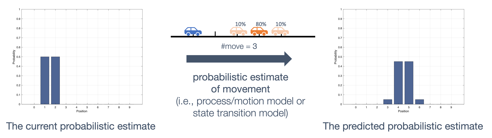
Let’s keep going on…

Now, what happens after → 20
predictions ?

Wait, what is happening? Why did the probabilities collapse into a lower spread?
Well, sensors are imperfect! Hence, information is lost. As a result, we may end up with the sitauation where the actual state differs from the predicted state.

8.2.2 Bayes filter | Measurement Update
We use a measurement to “fix” the problem of divergence between the actual state and predicted state. So, in essence, we get some feedback from the real world → using sensors (same or different type). Sounds familiar?
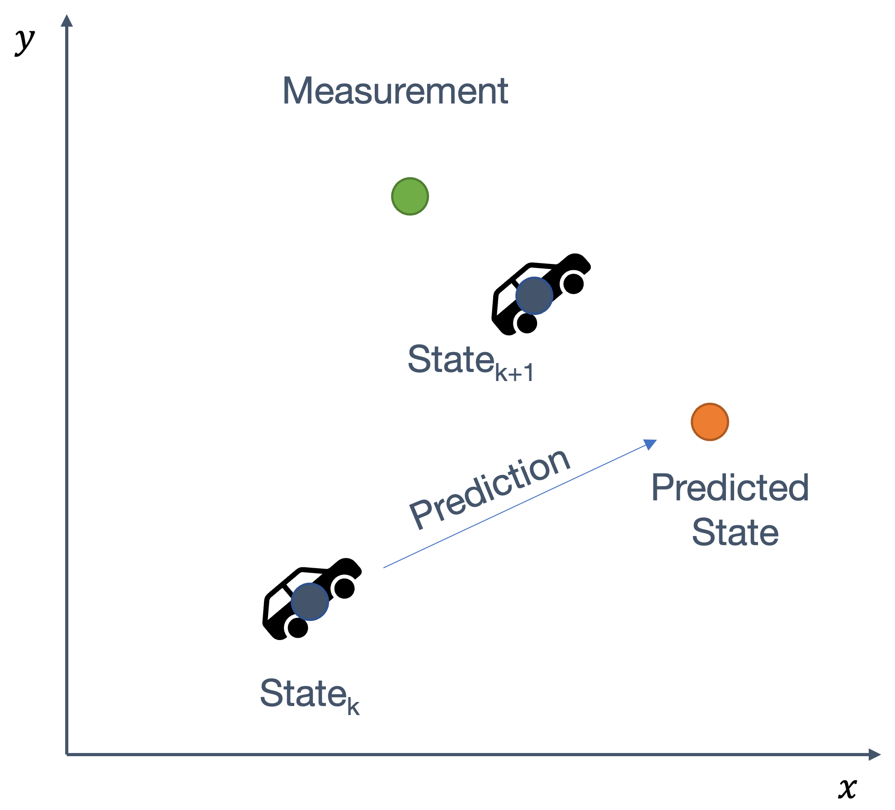
Prior: probability prior to incorporating measurement → equally likely to be in any position, i.e., $\frac{1}{10}$ for every position. Let’s put aside prediction, for now.
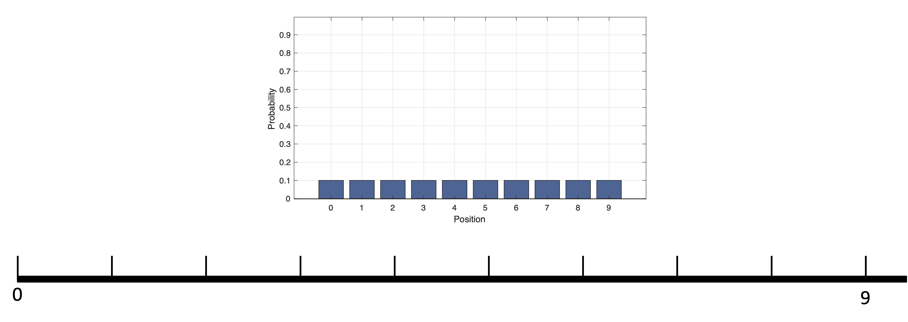
Let the first sensor reading → z0 = 2. But the sensor is noisy. Let’s also assume it has a probability of 90%.
Note: in the “predict” stage, we were using “noisy” sensors as well, but those were measuring different quantities. In that case, the sensor could be from the car engine or the wheels (or odometers) that say how much we “intended” to move, _e.g., “we generated enough torque in the engine to move forward by
3slots.
In contrast, the sensors in this section measure →”how much was actually moved?“. This could be via other types of sensors, e.g., GPS.
Both of these sensors can, and will, of course have noise and probabilities associated with them. The question then, is →”how to reconcile the two?”
So now, what is the new belief? From this setup, intuitively, it seems → x0 = 2 is 9 times likely than x0 ≠ 2.
Time to use Bayes Rule:

where, p(zk) = ∑xip(zk ∣ xi)p(xi) (as we’ve seen before, from the law of total probability).
So now, we get the likelihood, p(zk ∣ xk),

Question: what if the probability was 80%?
Carrying on, the numerator on the right hand side, i.e., p(zk ∣ xk) × p(xk):

The result of which is:
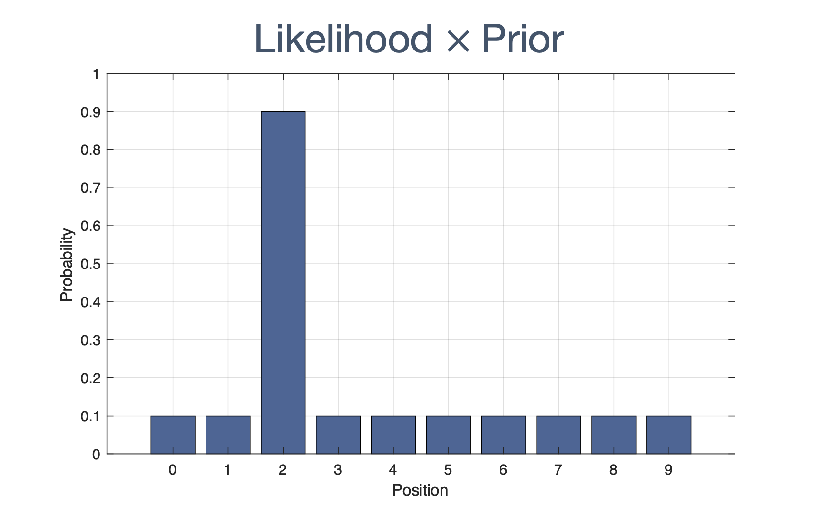
which puts our car at the right spot:
We’re still not done. We have to compute the denominator, p(zk) = ∑xip(zk ∣ xi)p(xi), which essentially normalizes the belief:
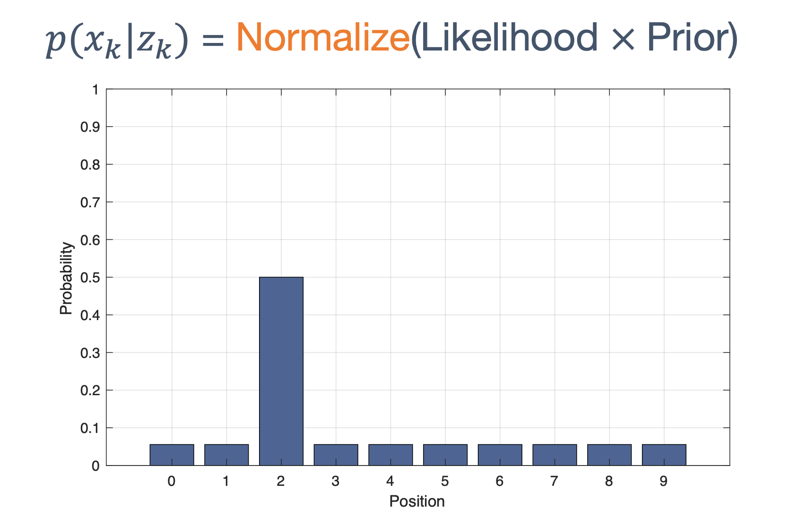
So our final value, the new belief, aka posterior, p(xk ∣ zk) → probability after incorporating measurement.
Let’s look at the formal calculations for each:
If we want to calculate,
p(x0 = 2 ∣ z0 = 2) = ▫
Recall,
$$ \begin{aligned} & p\left(z_{k}=a \mid x_{k}=a\right)=90 \% \\ & p\left(z_{k}=a \mid x_{k}=b\right)=10 \% \end{aligned} $$
i.e., sensor is correct with probability of 90% → the belief that the measurement zk = a matches reality xk = a is 90% otherwise it is 10%. For instance,
| measurement (zk) | reality (xk) | belief (prob %) |
|---|---|---|
| zk = 2 | xk = 2 | 90% |
| zk = 2 | xk = 5 | 10% |
$$ p\left(x_{0}=2 \mid z_{0}=2\right)=\frac{p\left(z_{0}=2 \mid x_{0}=2\right) \times p\left(x_{0}=2\right)}{p\left(z_{0}=2\right)}=\frac{\textbf{0.9} \times 0.1}{p\left(z_{0}=2\right)}=\frac{0.09}{p\left(z_{0}=2\right)} $$
In the same vein,
$$ p\left(x_{0}=1 \mid z_{0}=2\right)=\frac{p\left(z_{0}=2 \mid x_{0}=1\right) \times p\left(x_{0}=1\right)}{p\left(z_{0}=2\right)}=\frac{\textbf{0.1} \times 0.1}{p\left(z_{0}=2\right)}=\frac{0.01}{p\left(z_{0}=2\right)} $$
Use this formula, we can find p(x0 = x ∣ z0 = 2)
→ for all x.
But we still need to compute → p(z0 = 2).
Recalling the law of total probability, so we can compute:
p(z0 = 2) = ∑xp(z0 = 2 ∣ x0 = x)p(x0 = x)
From the above table,
$$ \begin{aligned} & p\left(z_{k}=a \mid x_{k}=a\right)=90 \% \\ & p\left(z_{k}=a \mid x_{k}=b\right)=10 \% \end{aligned} $$
Plugging in the values,
$$ \begin{aligned} p\left(z_{0}=2\right) & =\sum_{x} p\left(z_{0}=2 \mid x_{0}=x\right) p\left(x_{0}=x\right) \\ & =0.09+9 \times 0.01=\textbf{0.18} \end{aligned} $$
Hence, the final, normalized probability distribution looks like:

Now, the sensor gives again z1 = 2 → same likelihood (90% correct), i.e.,
p(x1 ∣ z1 = 2)
Then, what’s our new belief (using the previous belief as the prior), Pr (x1 = 2 ∣ z1) = 90.00%?
For the next iteration, we get:
Pr (x2 = 2 ∣ z2) = 98.78%
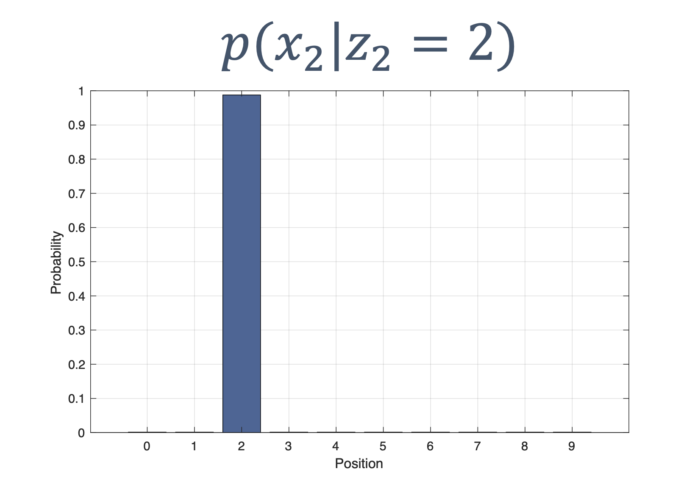
We can keep calculating this for various values of
k:

What is happening here? Why is only one bar increasing? Nothing ele changes?
Answer: the car is stationary at
location 2!
If we drop the sensor accuracy to say, 60%, we see:
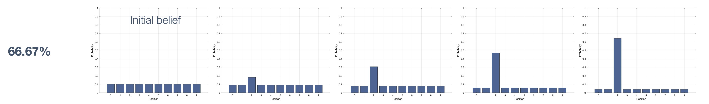
The confidence in the measurement increases, albeit at a much slower rate.
Now, if we drop it further, to say, 50%,
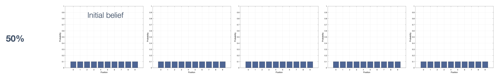
Why is nothing changing? Because the sensor is not providing any additional information! The 50% rate keeps it at the same belief level as everything else.
8.2.3 Bayes filter | Combining Prediction and Measurement
- prediction loses information
- measurement improves knowledge (i.e., decreases uncertainty)
Let’s combine prediction and measurement!
We start with the same initial position and sensor accuracies:
- initial position =
2 - motion model:
| sensor output | meaning | accuracy |
|---|---|---|
0 |
stay | 10% |
+1 |
move forward by 1 |
80% |
+2 |
move forward by 2 |
10% |
This motion model can be represented as:
p(xk ∣ xk − 1 = i)
i.e., what is the probability of xk, given xk − 1 = i, represented visually as,

And given the posterior at time k − 1, i.e.,
p(xk − 1 = i ∣ zk − 1)
The combined model, i.e., the new prior, is:
p(xk) = ∑ip(xk ∣ xk − 1 = i)p(xk − 1 = i ∣ zk − 1)
Let’s start with the initial belief, viz.,

At time, t = 0, the predictions and updates:

Note that the end result is the new posterior → that we will use in the future cycles as,
p(xk) = ∑ip(xk ∣ xk − 1 = i)p(xk − 1 = i ∣ zk − 1).
Hence we see:
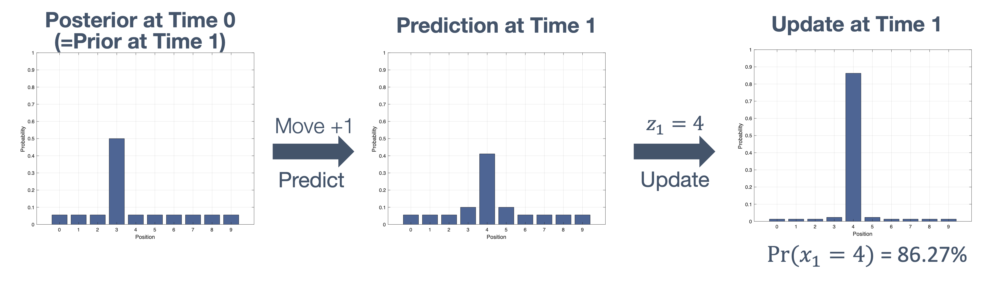
The confidence in the prediction and belief in the system both increase, as we see in the next cycle:

Note: when the measurement matches the prediction, the uncertainty decreases.
Now what happens if → the car did not move? We see:

The true position remains same (5), but the
prediction is still based on the original motion model:
| sensor output | meaning | accuracy |
|---|---|---|
0 |
stay | 10% |
+1 |
move forward by 1 |
80% |
+2 |
move forward by 2 |
10% |
The uncertainty increases! But still the estimate ≈ true state.
We keep going…
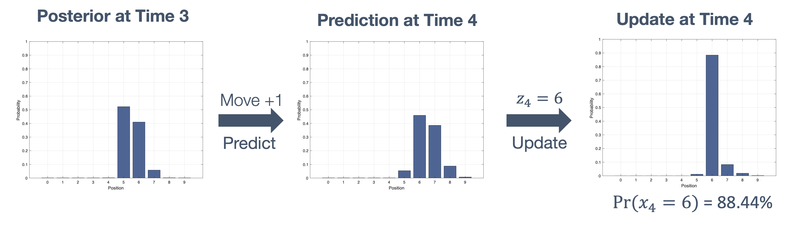
Let’s see what happens if we don’t follow the motion
model, i.e., the car moved by
2 (instead of 1):
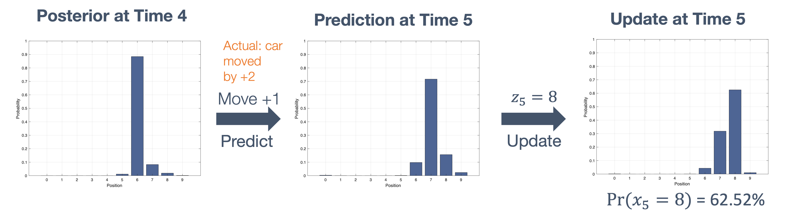
The true position → 8 but
the prediction is still based on the original motion model
hence, the confidence drops.
Getting back to the original motion model, one last time,

We get back to the high confidence levels, really quickly!
To summarize, the steps in the Bayes Filter are:

- predict:
- calculate the prior, p(xk), from the previous posterior, p(xk − 1 ∣ zk − 1)
- by incorporating the motion (process) model,
p(xk) = ∑ip(xk ∣ xk − 1 = i)p(xk − 1 = i ∣ zk − 1)
- update:
- given a measurement, zk, compute the likelihood
- from the likelihood and prior, apply Bayes Rule to update the belief:
$$ p\left(x_{k} \mid z_{k}\right)=\frac{p\left(z_{k} \mid x_{k}\right) \times p\left(x_{k}\right)}{p\left(z_{k}\right)} $$
where, p(zk) = ∑xp(zk ∣ x)p(x).
Limitations:
While the Bayesian filter works for many instances, the main problem is that it is discrete in nature. Consider the example for robots that need a 1cm resolution in a 100m space → 10, 000 positions needed to model the environment!
Scaling is much harder, especially in the multidimensional systems. For instance, how do we model the original state of the car that we discussed earlier:
$$ \boldsymbol{x}_{\boldsymbol{k}}=(x, \dot{x}, \ddot{x}, y, \dot{y}, \ddot{y}, \theta) $$
We need to update the Bayes model itself to handle such situations.
Enter the Kalman Filter.
8.3 Kalman Filter
To deal with some of the issues with the basic Bayes filter, we introduce the Kalman Filter that express state and uncertainty using Gaussians (aka the “normal” distribution).


8.3.1 Gaussian Distribution
Now a quick detour on Gaussians. A normal distribution or Gaussian distribution is a type of continuous probability distribution for a real-valued random variable and is represented as:

A very common Gaussian can be visualized as:

Note that variance (σ2) captures the uncertainty in the system and is the square of the standard deviation (σ).
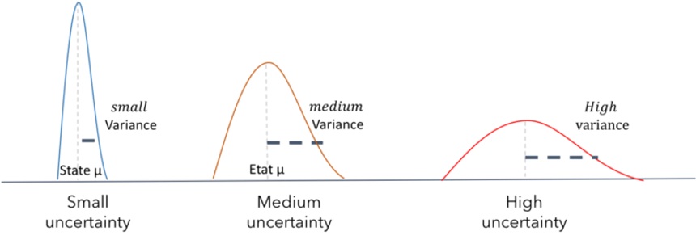
More specific examples:
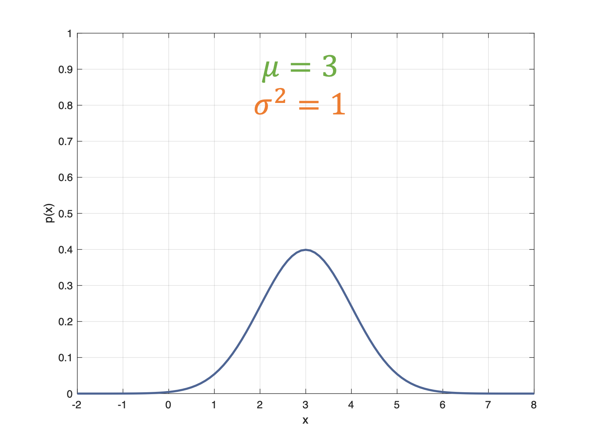


Some properties of Gaussians:
- area under the curve =
1(since it is the sum of all the probabilities)
area = ∫−∞+∞𝒩(μ, σ2)
Note that the curve approaches infinity
(∞) on either
side → the probability of certain events is
never 0, no matter how
small.
Hence,
$$ area = \int_{-\infty}^{+\infty} \frac{1}{\sqrt{2 \pi \sigma^{2}}} e^{-\frac{(x-\mu)^{2}}{2 \sigma^{2}}} = \textbf{1} $$
- probability that a value, x → is in a range, (a, b):
$$ \operatorname{Pr}(a \leq x \leq b)=\int_{a}^{b} \frac{1}{\sqrt{2 \pi \sigma^{2}}} e^{-\frac{(x-\mu)^{2}}{2 \sigma^{2}}} d x $$
- since it is often useful to find the probability within one standard deviation (on either side),
$$ \operatorname{Pr}(\mu-\sigma \leq x \leq \mu+\sigma)=\int_{\mu-\sigma}^{\mu+\sigma} \frac{1}{\sqrt{2 \pi \sigma^{2}}} e^{-\frac{(x-\mu)^{2}}{2 \sigma^{2}}} d x \approx \textbf{68 \%} $$
- sum and product of two Gaussian distributions is fairly easy to calculate
Given, two Gaussians,
X1 ∼ 𝒩(μ1, σ12)
X2 ∼ 𝒩(μ2, σ22)
| result | sum | product |
|---|---|---|
| new Gaussian, Z ∼ 𝒩(μ, σ2) | Z = X1 + X2 | Z = X1X2 |
| new mean, μ | μ1 + μ2 | $\mu=\frac{\sigma_{2}^{2} \mu_{1}+\sigma_{1}^{2} \mu_{2}}{\sigma_{1}^{2}+\sigma_{2}^{2}}$ |
| new variance, σ2 | σ12 + σ22 | $\sigma^{2}=\frac{\sigma_{1}^{2} \sigma_{2}^{2}}{\sigma_{1}^{2}+\sigma_{2}^{2}}$ |
- closure under linear transformations
From Probabilistic Robotics:
The advantage of using Gaussians (or Normals) lies in their mathematical properties, which simplify the Kalman Filter equations. A key property is their closure under linear transformations: when a Gaussian belief undergoes a linear transformation, the result remains a Gaussian random variable! This property ensures that the equations of the Kalman Filter remain,
- elegant and
- manageable
8.3.2 State in Kalman Filters
So, we can define state in this model as:

The prior ↔︎ measurement ↔︎ update process looks like:

As we see from this figure, the prediction and measurements are not just single points but a distribution.
The various transitions look like:

Essentially the same as the Bayes Filter → the difference being that each of the edges is now a probabilistic Gaussian value.
8.3.3 Kalman Filter | Prediction
First of all, we note that the process model, i.e., the model of how the system evolves over time (essentially the physics) is also a Gaussian! For instance, in the equations of motion, → velocity follows a Gaussian distribution.
Suppose we want to track the motion of this car:

From Newton’s laws of motion we can predict the next state using the following process model:
$$ \overline{x_{k+1}}=x_{k} +v_{k} \Delta t $$
where,
| variable | description |
|---|---|
| xk | current state |
| xk + 1 | predicted next state |
| vk | velocity |
| Δt | time difference |
Since velocity follows a Gaussian distribution, let’s assume,
vk ∼ 𝒩(3 m/s, 12 m2/s2)
Now, if the current state, xk is a Gaussian, as we’ve established before,

Now clearly, xk + 1 has to be a Gaussian as well → since at least one of the terms on the right is a Gaussian, viz., the current state and velocity.
So, the question is → what is the value for,

$$ \overline{x_{k+1}} \sim \mathcal{N}\left(? \mathrm{~m}, ? \mathrm{~m}^{2}\right) $$
Recall, that the sum of two Gaussians is,
$$ \begin{aligned} \mu & =\mu_{1}+\mu_{2} \\ \sigma^{2} & =\sigma_{1}^{2}+\sigma_{2}^{2} \end{aligned} $$
Assume that Δt = 1s. Plugging in thes values,
$$ \overline{x_{k+1}} \sim \mathcal{N}\left(6.5 \mathrm{~m}, 2 \mathrm{~m}^{2}\right) $$
In this example, the second parameter in the velocity term is the process noise in the physics model:

*Important Notes: Kalman Filter is unimodel, i.e., there is a single peak** each time.

An obstacle is not both, 10m away with 90% and 8m away with 70% probability. It is:
- 9.7m away with 98% or
- nothing
Let’s look at some examples for prediction. Consider the following velocity models:
| A | vk ∼ 𝒩(3 m/s, 02 m2/s2) |
| B | vk ∼ 𝒩(3 m/s, 12 m2/s2) |
| C | vk ∼ 𝒩(3 m/s, 22 m2/s2) |
And we have the following *predicted** states:
| prediction | velocity model |
|---|---|
 |
A, B or C ? |
 |
A, B or C ? |
 |
A, B or C ? |
So, which one of the above is &rarr, A, B and C? Let us plug in the values:
| prediction | velocity model |
|---|---|
|
vk ∼ 𝒩(3 m/s, 12 m2/s2) [B] |
|
vk ∼ 𝒩(3 m/s, 02 m2/s2) [A] |
|
vk ∼ 𝒩(3 m/s, 22 m2/s2) [C] |
So, what does the predicted state look like?
| prediction | velocity model | predicted state |
|---|---|---|
|
vk ∼ 𝒩(3 m/s, 12 m2/s2) [B] | $\overline{x_{k+1}} \sim \mathcal{N}\left(6.5 \mathrm{~m}, ? \mathrm{~m}^{2}\right)$ |
|
vk ∼ 𝒩(3 m/s, 02 m2/s2) [A] | $\overline{x_{k+1}} \sim \mathcal{N}\left(6.5 \mathrm{~m}, ? \mathrm{~m}^{2}\right)$ |
|
vk ∼ 𝒩(3 m/s, 22 m2/s2) [C] | $\overline{x_{k+1}} \sim \mathcal{N}\left(6.5 \mathrm{~m}, ? \mathrm{~m}^{2}\right)$ |
Coming back to the sum of two Gaussians, σ2 = σ12 + σ22, and the current state, $\overline{x_{k}} \sim \mathcal{N}\left(3.5 \mathrm{~m}, 1 \mathrm{~m}^{2}\right)$,
| prediction | velocity model | predicted state |
|---|---|---|
|
vk ∼ 𝒩(3 m/s, 12 m2/s2) [B] | $\overline{x_{k+1}} \sim \mathcal{N}\left(6.5 \mathrm{~m}, 2 \mathrm{~m}^{2}\right)$ |
|
vk ∼ 𝒩(3 m/s, 02 m2/s2) [A] | $\overline{x_{k+1}} \sim \mathcal{N}\left(6.5 \mathrm{~m}, 1 \mathrm{~m}^{2}\right)$ |
|
vk ∼ 𝒩(3 m/s, 22 m2/s2) [C] | $\overline{x_{k+1}} \sim \mathcal{N}\left(6.5 \mathrm{~m}, 5 \mathrm{~m}^{2}\right)$ |
As we see from these examples, depending on the
noise in the intial Gaussian, the
uncertainty increases for the predicted
state, even when the velocity model had 0
noise!
The problem is that we don’t know → how close is our prediction to reality. Hence, we need an update step → measurements!
8.3.4 Kalman Filter | Update
In the measurement (or sensor) model, the measurement uncertainty (aka “likelihood”) is also represented as a Gaussian.
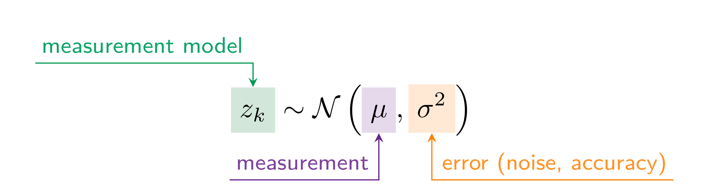
For instance, current temperature is 72∘F ± 1∘F.
Now, recall that,
posterior = prior × likelihood
$$ posterior = \overline x_k \times z_k $$
What does this actually mean?
Let’s consider a few examples.
- Example 1
| prediction ($\overline x_{k}$) | measurement (zk) | posterior ($\overline x_{k} \times z_k$) |
|---|---|---|
| $\overline{x_{k}} \sim \mathcal{N}\left(5,1^{2}\right)$ | zk ∼ 𝒩(5, 12) | ? |
Let’s plot these two Gaussians,

As we see from the figure, the two align perfectly → since they’re the same distribution. What would $\overline{\mathrm{x}}_{\mathrm{k}} \times \mathrm{z}_{\mathrm{k}}$ look like?
Recall the product of two Gaussians,
$$ \begin{aligned} \mu & =\frac{\sigma_{2}^{2} \mu_{1}+\sigma_{1}^{2} \mu_{2}}{\sigma_{1}^{2}+\sigma_{2}^{2}} \\ \sigma^{2} & =\frac{\sigma_{1}^{2} \sigma_{2}^{2}}{\sigma_{1}^{2}+\sigma_{2}^{2}} \end{aligned} $$
Hence, the posterior would be,
| prediction ($\overline x_{k}$) | measurement (zk) | posterior ($\overline x_{k} \times z_k$) |
|---|---|---|
| $\overline{x_{k}} \sim \mathcal{N}\left(5,1^{2}\right)$ | zk ∼ 𝒩(5, 12) | $\overline{\mathrm{x}}_{\mathrm{k}} \times \mathrm{z}_{\mathrm{k}} \sim \mathcal{N}(5,0.5)$ |
Graphically this looks like,

Hence, we see the following:
- an increase in the probability around
5(taller Gaussian) - a decrease in the uncertainty (narrower Gaussian)
- Example 2: this time the initial Guassians differ slightly,
| prediction ($\overline x_{k}$) | measurement (zk) | posterior ($\overline x_{k} \times z_k$) |
|---|---|---|
| $\overline{x_{k}} \sim \mathcal{N}\left(5,1^{2}\right)$ | zk ∼ 𝒩(5.4, 12) | $\overline{\mathrm{x}}_{\mathrm{k}} \times \mathrm{z}_{\mathrm{k}} \sim \mathcal{N}(5.2,0.5)$ |
We see that the result is in the midddle of the two original Gaussians.

- Example 3: let’s see what happens if the Gaussian’s differ significantly, i.e.,
| prediction ($\overline x_{k}$) | measurement (zk) | posterior ($\overline x_{k} \times z_k$) |
|---|---|---|
| $\overline{x_{k}} \sim \mathcal{N}\left(4,1^{2}\right)$ | zk ∼ 𝒩(6, 0.52) | $\overline{\mathrm{x}}_{\mathrm{k}} \times \mathrm{z}_{\mathrm{k}} \sim \mathcal{N}(?,?)$ |

After the update, the resultant distribution looks like,
| prediction ($\overline x_{k}$) | measurement (zk) | posterior ($\overline x_{k} \times z_k$) |
|---|---|---|
| $\overline{x_{k}} \sim \mathcal{N}\left(4,1^{2}\right)$ | zk ∼ 𝒩(6, 0.52) | $\overline{\mathrm{x}}_{\mathrm{k}} \times \mathrm{z}_{\mathrm{k}} \sim \mathcal{N}(5.6,0.2)$ |

What this tells us is → we give more weight to more ‘certain’ information, i.e., the measurement in this case that has a higher+narrower Gaussian. Which is as it should be.
Hence, the posterior is,
- between prediction ($\overline x_{k}$) and measurement (zk)
- closer to **more certain side* (based on the variances)
- so, a ‘weighted average’

Let us look at a few more detailed examples.
- Example I
| process model | measurement noise/sensor error |
|---|---|
| $\overline{x_{k+1}}=x_{k}+v_{k} \Delta t$ | σ2 = 0.52 |
| $ v_{k} (2 / , 1^{2} ^{2} / ^{2})$ | |
| $ t=1 $ | |
The initial state looks like,

If we plot this system, the actual position vs measurements (first graph) and afer applying the Kalman Filter.


We see the following properties:
- posterior → always between prior and measurement
- posterior is closer to measurement → sensor noise is small
| vk ∼ 𝒩(2 m/s, 12 m2/s2)
prior (prediction) |
σ2 = 0.52
measurement |
posterior (with measurement) |
|---|---|---|
| 𝒩(2, 101) | 1.555 | $(1.556,0.249) $ |
| 𝒩(3.556, 1.249) | 2.267 | $(2.482,0.208) $ |
| 𝒩(4.482, 1.208) | 1.233 | $(1.790,0.207) $ |
| 𝒩(3.790, 1.207) | 3.534 | $(3.578,0.207) $ |
| 𝒩(5.578, 1.207) | 4.644 | 𝒩(4.804, 0.207) |
Note that the uncertainty (σ2) values
for the prior (vk)
are all larger than that for the
measurement (0.5). Hence the prior is
almost useless for the posterior. Whereas,
the posterior is very close to the
measurement! This shows us what a difference a good
measurement makes.
- Example II: let’s update the model so that the measurement error is σ2 = 1.52
How do you think this will change the posterior?
Updated model:
| process model | measurement noise/sensor error |
|---|---|
| $\overline{x_{k+1}}=x_{k}+v_{k} \Delta t$ | σ2 = 1.52 (more inacccurary!) |
| $ v_{k} (2 / , 1^{2} ^{2} / ^{2})$ | |
| $ t=1 $ | |
We see more noise in the measurements:

Let’s look at the results of applying the Kalman Filter (side-by-side with the previous example):
 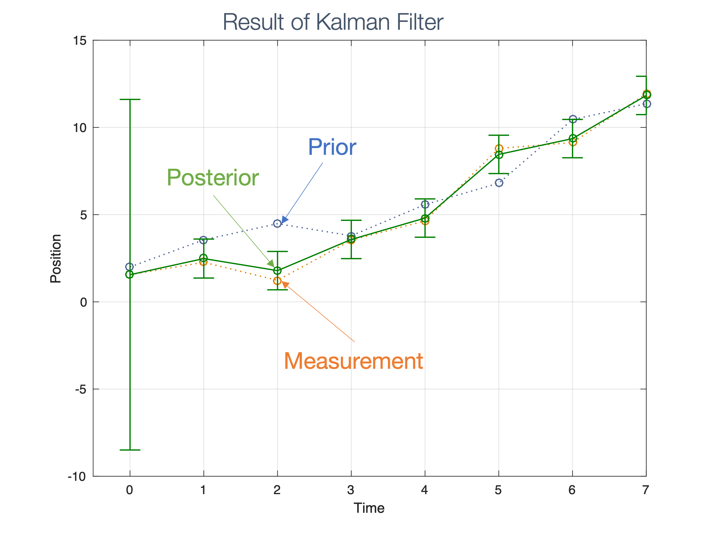
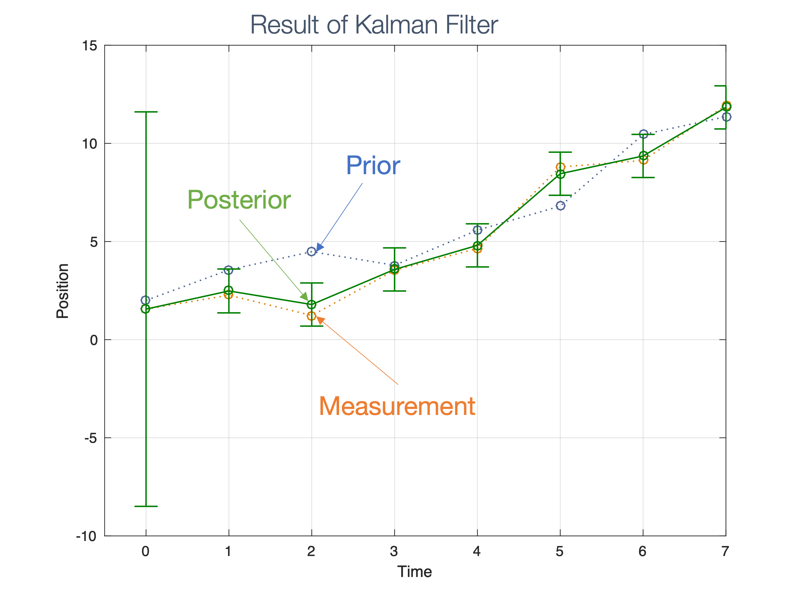
Let’s look at the detailed data:
| vk ∼ 𝒩(2 m/s, 12 m2/s2)
prior (prediction) |
σ2 = 1.52
measurement |
posterior (with measurement) |
|---|---|---|
| 𝒩(2, 101) | 1.499 | $(1.510,2.201) $ |
| 𝒩(3.510, 3.201) | 3.907 | $(3.743,1.321) $ |
| 𝒩(5.743, 2.3218) | 0.391 | $(3.025,1.143) $ |
| 𝒩(5.025, 2.143) | 2.289 | $(3.690,1.097) $ |
| 𝒩(5.690, 2.097) | 3.735 | 𝒩(4.747, 1.086) |
We see that the σ2 for the prior is similar to or better than the measurement uncertainty (σ2 = 1.52)!
8.3.5 Kalman Filter | Kalman Gain
The update step for the Kalman Filter now (recall that the posterior is obtained by “mixing”) looks like,
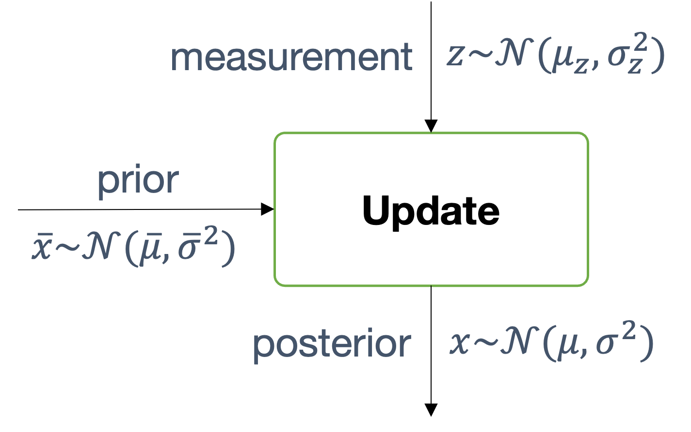 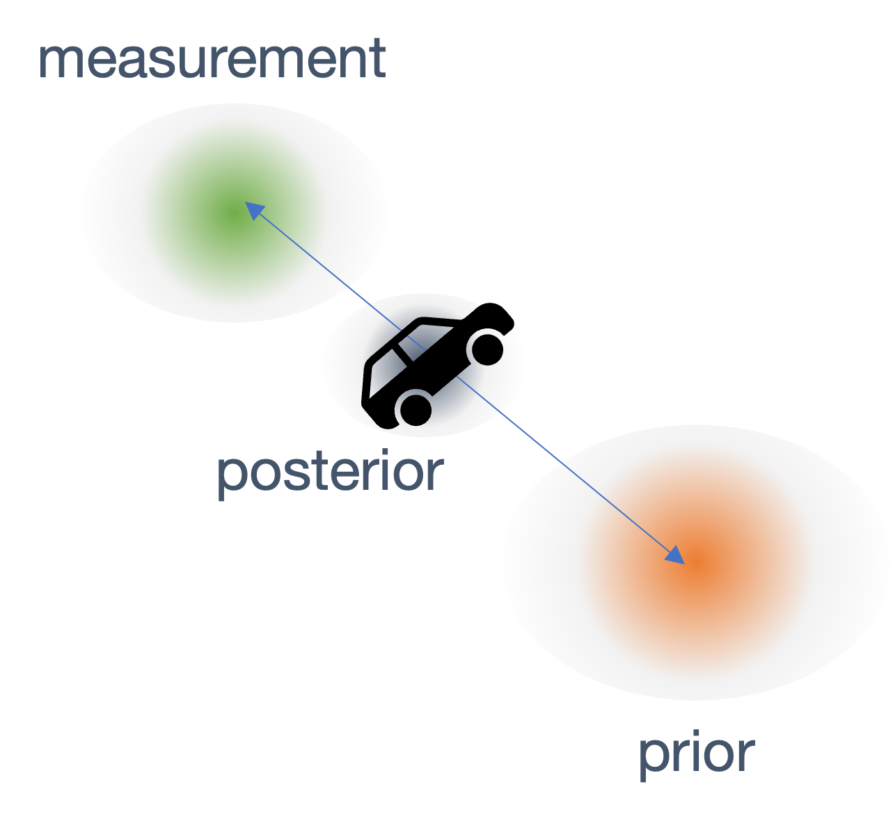
So, consider these simplifications,
$$ \begin{aligned} \mu & =\frac{\sigma_{z}^{2} \bar{\mu}+\bar{\sigma}^{2} \mu_{z}}{\bar{\sigma}^{2}+\sigma_{z}^{2}} \\ & =K_{1} \mu_{z}+K_{2} \bar{\mu} \\ & =K \mu_{z}+(1-K) \bar{\mu} \end{aligned} $$
where K2 = 1 − K is a simplification that works as follows → the final result tells us whether the posterior is closer to the prior or the measurement, i.e., where does it like on this line?

Hence, the Kalman Gain,
$$ K = \frac{\bar{\sigma}^{2}}{\bar{\sigma}^{2} + \sigma_{z}^{2}} $$
The Kalman gains tells us,
- how much measurement is trusted
- mixing ratio between measurement and prior
Example: measurement is three times more accurate than prior. What is the Kalman Gain?
$$ \begin{gathered} \bar{\sigma}^{2}=3 \sigma_{z}^{2} \\ K=\frac{3 \sigma_{z}^{2}}{3 \sigma_{Z}^{2}+\sigma_{Z}^{2}}=\frac{3}{4} \end{gathered} $$
Hence, the posterior is:

Now we can write the posterior as:
| residual | y = μz − μ̄ |
| posterior mean | μ = μ̄ + Ky |
| posterior noise | $\sigma^2 = (1-K) \bar{\sigma^2}$ |
(since $\sigma^{2} =\frac{\sigma_{1}^{2} \sigma_{2}^{2}}{\sigma_{1}^{2}+\sigma_{2}^{2}}$).
Note: higher K → more certainty!
8.3.6 Kalman Filter | Summary

- Step 0: initialize
x0 ∼ 𝒩(μ0, σ02),
the initial belief
- to reasonably random values or initial measurement
- Step 1: predict
- calculate the prior, $\overline{x_{k}} \sim \mathcal{N}\left(\overline{\mu_{k}},{\overline{\sigma_{k}}}^{2}\right)$, from the previous posterior, xk − 1 ∼ 𝒩(μk − 1, σk − 12)
- by incorporating the process model, fx ∼ 𝒩(μf, σf2) $$ \begin{gathered} \overline{\mu_{k}}=\mu_{k-1}+\mu_{f} \\ {\overline{\sigma_{k}}}^{2}=\sigma_{k-1}^{2}+\sigma_{f}^{2} \end{gathered} $$
- Step 2: update
- given a measurement, zk, compute the residual and the Kalman gain
- set the posterior, xk, between the prior, x̄k, and the measurement, zk, based on the residual and the Kalman gain
$$ \begin{aligned} y_{k} & =\mu_{z, k}-\overline{\mu_{k}} \\ K_{k} & =\frac{{\overline{\sigma_{k}}}^{2}}{{\overline{\sigma_{k}}}^{2}+\sigma_{z, k}^{2}} \\ \mu_{k} & =\overline{\mu_{k}}+ K_{k}.y_{k} \\ \sigma_{k}^{2} & =\left(1-K_{k}\right) \bar{\sigma}_{k}^{2} \end{aligned} $$
8.4 Multivariate Kalman Filter
In reality state is not single dimensional → it is multi-dimensional. In fact, it is a multi-dimensional vector, for instance,
- Example: [position, velocity] ⊤
- Represented by a multivariate gaussian:

Let’s look at [position, velocity] ⊤,

How do we represent this? They’re two different Gaussians, with different properties. We use an ellipse (from Engineering Media),
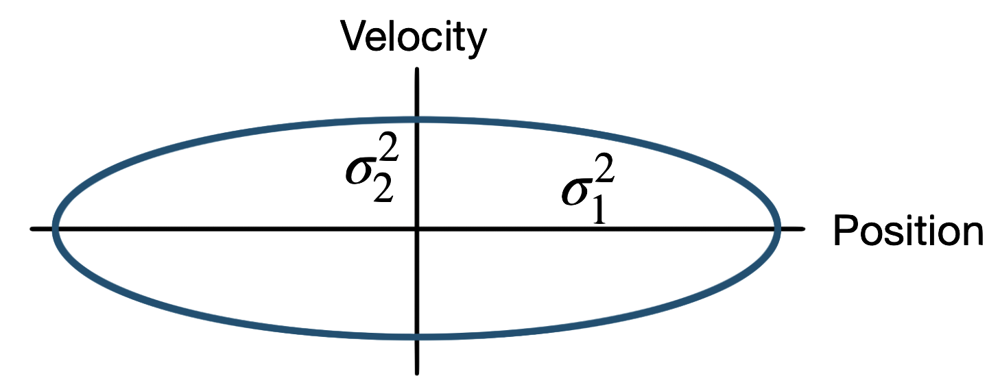
We represent these unequal variances as an ellipse, where the major and minor axes are set to the variance for that dimension. The above image is graphically showing that we have more uncertainty in position than we do in velocity.
This is great for combining the means but what about the variance? We need to understand how the two variables, velocity and position, relate to each other, since the state of one variable depends on the other. For instance, the faster that an object is traveling, the further the position will be from the actual measurements. Hence, capturing the velocity will allow us to better estimate the position. On the other hand, a better estimation of the position tells us whether our velocity measurements were accurate.
So what we need to really capture is → covariance between the two variables.
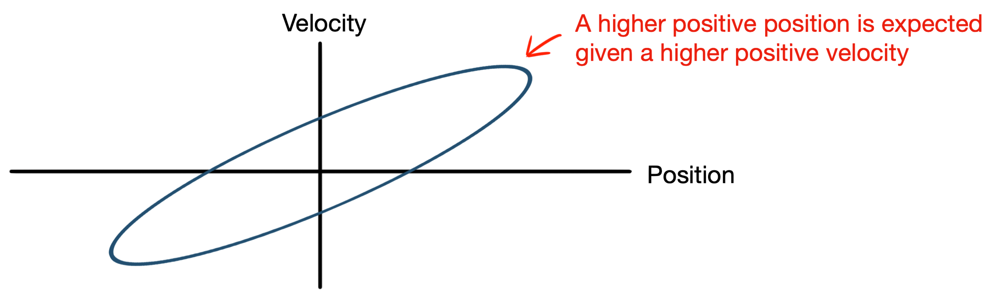
Covariance is captured using the covariance matrix → a square matrix with the number of rows and columns equal to the number of state variables. So, our position and velocity system would have a 2 × 2 covariance matrix, P where,
| terms | meaning |
|---|---|
| diagonal | variances with itself |
| off-diagonal | covariances of each state w.r.t. other states |
The state vector for our system (also a matrix):
$$ \hat{x} = \begin{bmatrix} position\\ velocity \end{bmatrix} $$
So, our position and velocity co-variance can be represented as:
$$ \Sigma = \begin{bmatrix} \text{how pos varies with pos} & \text{how vel varies with pos}\\ \text{how pos varies with vel} & \text{how vel varies with vel} \end{bmatrix} $$
Using the actual terms for variance,
$$ \Sigma = \begin{bmatrix} \sigma^2_{11} & \sigma^2_{12} \\ \sigma^2_{21} & \sigma^2_{22} \end{bmatrix} $$
So now, we can represent our multivariate Gaussian as:
$$ \mathcal{N}(\boldsymbol{\mu}, \boldsymbol{\Sigma})=\frac{1}{(2 \pi)^{n / 2}|\boldsymbol{\Sigma}|^{1 / 2}} e^{-\frac{1}{2}(\mathbf{x}-\boldsymbol{\mu})^{T} \boldsymbol{\Sigma}^{-1}(\mathbf{x}-\boldsymbol{\mu})} $$
where,
| variable | definition | meaning |
|---|---|---|
| x | (x1, x2, …, xn) | state variable |
| μ | (μ1, μ2, …, μn) | mean vector |
| Σ | Σi, j = Cov (xi, xj) | covariance matrix |
Let’s look at some examples of multivariate Gaussians and corresponding values:
| example | comments |
|---|---|
 |
x1 and x2 are not correlated |
| 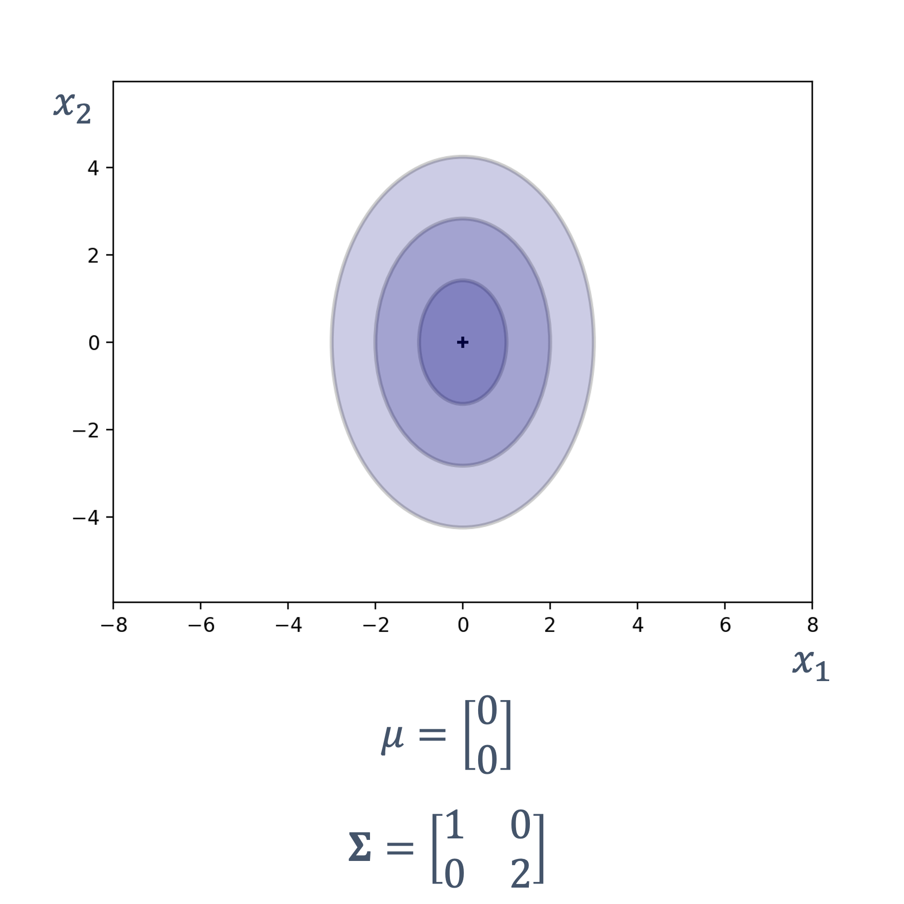 | x1 and x2 are not correlated |
 |
x1 and x2 are not correlated |
 |
x1 and x2 are correlated → x1(x2) gives us information about what x2(x1) could be |
8.4.1 Process Model and Noise
Now, we need to figure out how to model the system with these updates to the system model, covariance, multivariate gaussians and what not. Let’s look at the position and velocity as examples.
Recall the state is,
$$ \hat{x} = \begin{bmatrix} position\\ velocity \end{bmatrix} = \begin{bmatrix} x_{k}\\ \dot{x}_{k} \end{bmatrix} $$
Why is velocity represented as: ẋk?
Now, in the original model, our physical equation was:
- $\overline{x_{k+1}}=x_{k}+\dot{x}_{k} \Delta t$
- ẋ remains constant (i.e., $\overline{\dot{x}_{k+1}}=\dot{x}_{k}$ )
But, in this multivariate Gaussian version of things, velocity and position are correlated. So,
$$ \overline{\mathbf{x}_{k+1}}=\left[\begin{array}{cc} \square & \square \\ \square & \square \\ \end{array}\right] \mathbf{x}_{k} $$
Because the transition from xk → $\overline{\mathbf{x}_{k+1}}$ requires a vector!
Note: bold variables indicate vectors, non bold variables indicate scalars.
Plugging in the remanining parts from the motion equation ($\overline{x_{k+1}}=x_{k}+\dot{x}_{k} \Delta t$) we get,
$$ \overline{\mathbf{x}_{k+1}}=\left[\begin{array}{cc} 1 & \Delta t \\ 0 & 1 \end{array}\right] \mathbf{x}_{k} $$
The matrix,
$$ \mathbf{F}=\left[\begin{array}{cc} 1 & \Delta t \\ 0 & 1 \end{array}\right] $$
is known as the state transition matrix.
So we write the equation as:
$$ \overline{\mathbf{x}_{k+1}} = \mathbf{F} \mathbf{x}_{k} $$
Let’s revisit out multivariate Gaussian definition,
$$ \mathcal{N}(\boldsymbol{\mu}, \Sigma)=\frac{1}{(2 \pi)^{n / 2}|\Sigma|^{1 / 2}} e^{-\frac{1}{2}(\mathbf{x}-\boldsymbol{\mu})^{T} \Sigma^{-1}(\mathbf{x}-\boldsymbol{\mu})} $$
We particularly care about $\textcolor{orange}{\Sigma}$,
$$ \mathcal{N}(\boldsymbol{\mu}, \textcolor{orange}{\Sigma})=\frac{1}{(2 \pi)^{n / 2}|\textcolor{orange}{\Sigma}|^{1 / 2}} e^{-\frac{1}{2}(\mathbf{x}-\boldsymbol{\mu})^{T} \textcolor{orange}{\Sigma}^{-1}(\mathbf{x}-\boldsymbol{\mu})} $$
$\textcolor{orange}{\Sigma}$ → error covariance (or state covariance):
- represents the state uncertainty
- typically denoted by → P
So,
$$ \mathbf{P} = \begin{bmatrix} \sigma^2_{11} & \sigma^2_{12} \\ \sigma^2_{21} & \sigma^2_{22} \end{bmatrix} $$
We also need to worry about → noise/uncertainty during state transitions because, well, we live in the real world. Hence, there is a matrix Q used to represent this,
- uncertainty in state transition (e.g., friction, winds, etc.)
- white noise (i.e., zero mean)
So, looking at the state transition, k → k + 1, can we write?
$$ \overline{\mathbf{P}_{k+1}}=\mathbf{P}_{k}+\mathbf{Q} $$
This is incorrect! The right way to do this is as follows:
$$ \overline{\mathbf{P}_{k+1}}=\mathbf{F P}_{k} \mathbf{F}^{\mathrm{T}}+\mathbf{Q} $$
Where, FT is the transpose of matrix F.
Proof and Further Details
In the given equations, the symbol E[.] represents the expectation operator, also known as the expected value.
- for scalar random variables, the expectation is the arithmetic average value you’d expect to observe if you repeated the experiment infinitely many times
- for random vectors, the expectation denotes the vector of expectations of each component:
Given a random vector:
$$ \mathbf{x} = \begin{bmatrix} x_1 \\ x_2 \\ \vdots \\ x_n \end{bmatrix}, $$
the expectation is defined component-wise as:
$$ \mathrm{E}[\mathbf{x}] = \begin{bmatrix} \mathrm{E}[x_1] \\ \mathrm{E}[x_2] \\ \vdots \\ \mathrm{E}[x_n] \end{bmatrix}. $$
Additionally, the expression,
E[(x − μ)(x − μ)T]
represents the covariance matrix of the random vector x, typically denoted by: Var (x) or Σ
Now, we have:
$$ \begin{aligned} \operatorname{Var}(\mathbf{A x}) & =\mathrm{E}\left[(\mathbf{A}(\mathbf{x}-\boldsymbol{\mu}))(\mathrm{A}(\mathbf{x}-\boldsymbol{\mu}))^{\mathrm{T}}\right] \\ & =\mathrm{E}\left[\left(\mathbf{A}(\mathbf{x}-\boldsymbol{\mu})(\mathbf{x}-\boldsymbol{\mu})^{T}\right) \mathbf{A}^{\mathrm{T}}\right] \\ & \left.=\operatorname{AE}\left[(\mathbf{x}-\boldsymbol{\mu})(\mathbf{x}-\boldsymbol{\mu})^{T}\right)\right] \mathbf{A}^{\mathrm{T}} \\ & =\operatorname{AVar}(\mathbf{x}) \mathbf{A}^{\mathrm{T}} \end{aligned} $$
Going back to our state transition model, recall,
$$ \overline{\mathbf{x}_{k+1}}=\mathbf{F} \mathbf{x}_{k} $$
We have seen, from above,
Var (Ax) = AVar(x)AT
Replacing with the right vectors/paramters,
Var (Fxk) = FVar (xk)FT = FPkFT
since, Pk is the (state/error) covariance matrix.
Now, at the system start, we have:
$$ \begin{aligned} \mathbf{F} & =\left[\begin{array}{cc} 1 & \Delta t \\ 0 & 1 \end{array}\right] \quad \text{and} \quad \mathbf{P}_{\mathbf{k}} & =\left[\begin{array}{cc} \sigma_{x_{k}}^{2} & 0 \\ 0 & \sigma_{x_{k}}^{2} \end{array}\right] \end{aligned} $$
i.e., no correlation between position and velocity.
But, after one step (i.e., prediction),
$$ \begin{aligned} \overline{\mathbf{P}_{k+1}} & =\mathbf{F P}_{k} \mathbf{F}^{\mathrm{T}} \\ & =\left[\begin{array}{cc} 1 & \Delta t \\ 0 & 1 \end{array}\right]\left[\begin{array}{cc} \sigma_{x_{k}}^{2} & 0 \\ 0 & \sigma_{x_{k}}^{2} \end{array}\right]\left[\begin{array}{cc} 1 & 0 \\ \Delta t & 1 \end{array}\right] \\ & =\left[\begin{array}{cc} \sigma_{x_{k}}^{2}+\sigma_{x_{k}}^{2} \Delta t^{2} & \textcolor{orange}{\sigma_{x_{k}}^{2} \Delta t} \\ \textcolor{orange}{\sigma_{x_{k}}^{2} \Delta t} & \sigma_{x_{k}}^{2} \end{array}\right] \end{aligned} $$
Position and velocity → correlated!
Let’s look at an example:
$$ \begin{array}{llll} \mathbf{x}_{0}=\left[\begin{array}{l} x_{0} \\ \dot{x}_{0} \end{array}\right]=\left[\begin{array}{c} 0 \\ 10 \end{array}\right] & \mathbf{F}=\left[\begin{array}{cc} 1 & \Delta t \\ 0 & 1 \end{array}\right] & \Delta t=1 \mathrm{~s} & \mathbf{P}_{\mathbf{0}}=\left[\begin{array}{ll} 1 & 0 \\ 0 & 3 \end{array}\right] \\ \begin{array}{l} \text { Initial position }=0 \mathrm{~m} \end{array} & \overline{x_{k+1}}=x_{k}+\dot{x}_{k} \Delta t & & \text { Initial state covariance } \\ \text { Initial velocity }=10 \mathrm{~m} / \mathrm{s} & \overline{\dot{x}_{k+1}}=\dot{x}_{k} & \end{array} $$
Example Details
Recall that we write our model as,
$$ \begin{aligned} & \overline{\mathbf{x}_{k+1}}=\mathbf{F} \mathbf{x}_{k} \\ & \overline{\mathbf{P}_{k+1}}=\mathbf{F} \mathbf{P}_{k} \mathbf{F}^{\mathrm{T}}+\boldsymbol{Q} \end{aligned} $$
Let’s forget about Q for now,
So, our starting state can be represented as (we see that velocty and position are not correlated):
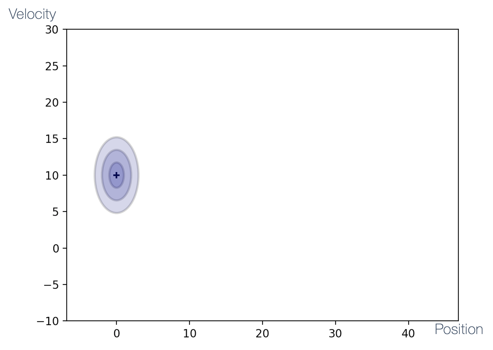
Now, after one iteration/prediction,
$$ \begin{aligned} \overline{\mathbf{x}_{1}}=\mathbf{F} \mathbf{x}_{0} & =\left[\begin{array}{cc} 1 & \Delta t \\ 0 & 1 \end{array}\right]\left[\begin{array}{c} 0 \\ 10 \end{array}\right]=\left[\begin{array}{l} 10 \\ 10 \end{array}\right] \\ \overline{\mathbf{P}_{1}}=\mathbf{F P}_{0} \mathbf{F}^{\mathrm{T}} & =\left[\begin{array}{cc} 1 & \Delta t \\ 0 & 1 \end{array}\right]\left[\begin{array}{cc} 1 & 0 \\ 0 & 3 \end{array}\right]\left[\begin{array}{cc} 1 & 0 \\ \Delta t & 1 \end{array}\right] \\ & =\left[\begin{array}{ll} 1 & 3 \\ 0 & 3 \end{array}\right]\left[\begin{array}{cc} 1 & 0 \\ \Delta t & 1 \end{array}\right]=\left[\begin{array}{ll} 4 & 3 \\ 3 & 3 \end{array}\right] \end{aligned} $$
If we plot this, we see that velocity and position are now correlated:
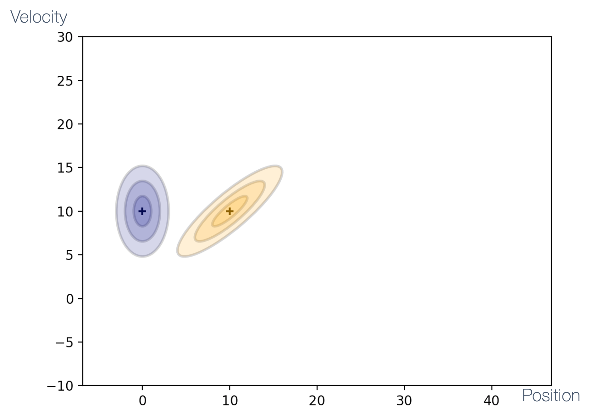
A couple more iterations,
$$ \begin{aligned} & \overline{\mathbf{x}_{2}}=\left[\begin{array}{l} 20 \\ 10 \end{array}\right] \\ & \overline{\mathbf{P}_{2}}=\left[\begin{array}{cc} 13 & 6 \\ 6 & 3 \end{array}\right] \end{aligned} $$

$$ \begin{aligned} & \overline{\mathbf{x}_{3}}=\left[\begin{array}{l} 30 \\ 10 \end{array}\right] \\ & \overline{\mathbf{P}_{3}}=\left[\begin{array}{cc} 28 & 9 \\ 9 & 3 \end{array}\right] \end{aligned} $$

Hence, after multiple iterations,
- we started with $\mathbf{x}_{0}=\left[\begin{array}{c}0 \mathrm{~m} \\ 10 \mathrm{~m} / \mathrm{s}\end{array}\right]$
- position moves by 10m in each step due to the velocity estimate = 10 m/s
- velocity estimate does not change because we predict it based on ${\overline{\dot{x}_{k+1}}}=\dot{x}_{k}$
- position uncertainty increases
- position and velocity become more correlated because $\overline{x_{k+1}}=x_{k}+\dot{x}_{k} \Delta t$
8.4.2 Control Input
The state of the system is not only dependant on the sensor and model. Recall that control input is meant to drive the system to a particular state. So, we must include it (if it is present) as,
<!–> $$ \overline{\mathbf{x}_{k+1}}=\mathbf{F} \mathbf{x}_{k}+\mathbf{\textcolor{orange}{B u}} $$ <–>

where,
| term | definition | details |
|---|---|---|
| u | control input | example: input to motor
ESC |
| B | control input model | models the contribution of control input to the state transition |
Note: B = 0 if there is no control input.
8.4.3 Summary of Prediction Model
To summarize,
$$ \begin{aligned} & \overline{\mathbf{x}_{k+1}}=\mathbf{F} \mathbf{x}_{k}+\mathbf{B} \mathbf{u} \\ & \overline{\mathbf{P}_{k+1}}=\mathbf{F P}_{k} \mathbf{F}^{\mathrm{T}}+\mathbf{Q} \end{aligned} $$
- from xk, we predict the next state $\overline{\mathbf{x}_{k+1}}$ (i.e., prior)
- F and Q are typically constant
- Bu
can be set to
0→ if there is no explicit control input to the system - Bu can be used to provide additional information → better prediction
8.4.4 Measurement Update
As with the simpler Kalman filter, we need to “fix” our prediction using a measurement from the sensor(s) which is essentially a Gaussian multiplication step between → the prior and the measurement,
$$ \text{prior:} \quad \mathbf{\mu_1} = \begin{bmatrix} 3.0\\ 5.0 \end{bmatrix} \quad \mathbf{\Sigma_1} = \begin{bmatrix} 4 & 3\\ 3 & 3 \end{bmatrix} $$
$$ \text{measurement:} \quad \mathbf{\mu_2} = \begin{bmatrix} 3.3\\ 4.8 \end{bmatrix} \quad \mathbf{\Sigma_2} = \begin{bmatrix} 3 & -1\\ -1 & 1 \end{bmatrix} $$
Visually, we can represent these as:
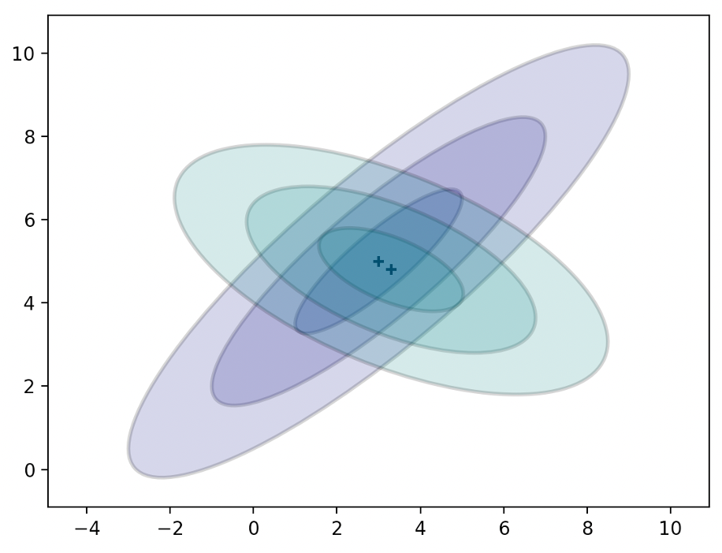
The multivariate Gaussian multiplication equations are:
μ = Σ2(Σ1 + Σ2)−1μ1 + Σ1(Σ1 + Σ2)−1μ2
Σ = Σ1(Σ1 + Σ2)−1Σ2
Recall the univariate Gaussian equivalents:
$$ \mu=\frac{\sigma_{2}^{2} \mu_{1}+\sigma_{1}^{2} \mu_{2}}{\sigma_{1}^{2}+\sigma_{2}^{2}} \quad \sigma^{2}=\frac{\sigma_{1}^{2} \sigma_{2}^{2}}{\sigma_{1}^{2}+\sigma_{2}^{2}} $$
The net result is:

A problem with Gaussian multiplication is that the dimensionalities of the state and the measurement need not match! For instance,
- state → [position, velocity]
- measurement → [position]
Hence, we need a measurement function → converts a state into a measurement space, e.g.,
- different dimensions and/or
- different units (voltage → distance, celsius → fahrenheit)
So, incorporating the measurement function, H, we get
Note: the “residual” is the difference between measurement and prediction.
If we have,
$$ \text{State:} \quad \mathbf{x}=\left[\begin{array}{l}x \\ \dot{x} \\ y \\ \dot{y}\end{array}\right] \quad \text{and \quad Measurement:} \quad \mathbf{z}=\left[\begin{array}{l}x \\ y\end{array}\right] $$
Then the measurement function, is
$$ \mathbf{H}=\left[\begin{array}{llll}1 & 0 & 0 & 0 \\ 0 & 0 & 1 & 0\end{array}\right] $$
Recall that measurement → also follows a Gaussian and has some noise. Hence it is represented as a multivariate Gaussian,
$$ \mathcal{N}\left(\mathbf{z}_{\mathbf{k}}, \textcolor{orange}{\mathbf{R}}\right) $$
where, the measurement noise is given by,
$$ \mathbf{R}=\left[\begin{array}{ccc} \square & \ldots & \square \\ \vdots & \ddots & \vdots \\ \square & \cdots & \square \end{array}\right] $$
R → models the accuracy of the sensor,
- m × m covariance matrix (m → # of sensors)
- also models correlations between sensors
- typically constant
8.4.5 State and Uncertainty Update
If this is the state of our system,

then let’s define system uncertainty (Sk) as,
- the sum of (predicted) state noise and sensor noise
- equivalent to σ̄2 + σZ2 in the univariate case
$$ \mathbf{S}_{\mathbf{k}}=\mathbf{H} \overline{\mathbf{P}_{\mathbf{k}}} \mathbf{H}^{\mathrm{T}}+\mathbf{R} $$
Bringing all of the prior terms together, we can now define → the Kalman Gain (Kk) which is answering the question:
“how much we can trust the predicted state vs the measurement?”
$$ \mathbf{K}_{\mathbf{k}}=\overline{\mathbf{P}_{\mathbf{k}}} \mathbf{H}^{\mathrm{T}} \mathbf{S}_{\mathbf{k}}^{-1} $$
So, to update the state and uncertainty,
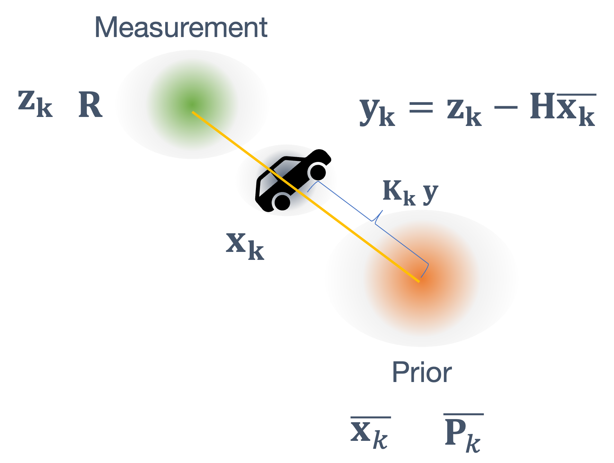
- state update:
$$ \mathbf{x}_{\mathbf{k}}=\overline{\mathbf{x}}_{k}+\mathbf{K}_{\mathbf{k}} \mathbf{y}_{\mathbf{k}} $$
- state uncertainty update:
$$ P_{k}=\left(I-K_{k} H\right) \overline{P_{k}} $$
Note: if Kk is large → then we’re closer to the measurement.
Consider the following example:
$$ \overline{\mathbf{x}_{1}}=\left[\begin{array}{l} 10 \\ 10 \end{array}\right] \quad \overline{\mathbf{P}_{1}}=\left[\begin{array}{ll} 4 & 3 \\ 3 & 3 \end{array}\right] $$
represented as:

Now consider the following sensor measurement and noise model:
$$ \begin{aligned} & \mathbf{z}_{\mathbf{1}}=[12], \quad \textcolor{orange}{\mathbf{R}=[1]} \quad \mathbf{H}=[1 0]\\ & \mathbf{y}_{\mathbf{1}}=\mathbf{z}_{\mathbf{1}}-\mathbf{H} \overline{\mathbf{x}_{\mathbf{1}}}=\left[\begin{array}{ll} 12 \end{array}\right]-\left[\begin{array}{ll} 1 & 0 \end{array}\right]\left[\begin{array}{l} 10 \\ 10 \end{array}\right]=[2] \\ & \mathbf{S}_{\mathbf{1}}=\mathbf{H} \overline{\mathbf{P}_{\mathbf{1}}} \mathbf{H}^{\mathrm{T}}+\mathbf{R}=\left[\begin{array}{ll} 1 & 0 \end{array}\right]\left[\begin{array}{ll} 4 & 3 \\ 3 & 3 \end{array}\right]\left[\begin{array}{l} 1 \\ 0 \end{array}\right]+[1]=[5] \\ & \mathbf{K}_{\mathbf{1}}=\overline{\mathbf{P}_{\mathbf{1}}} \mathbf{H}^{\mathrm{T}} \mathbf{S}_{\mathbf{1}}^{-1}=\left[\begin{array}{ll} 4 & 3 \\ 3 & 3 \end{array}\right]\left[\begin{array}{l} 1 \\ 0 \end{array}\right][1 / 5]=\left[\begin{array}{l} 4 / 5 \\ 3 / 5 \end{array}\right] \\ & \mathbf{x}_{\mathbf{1}}=\overline{\mathbf{x}_{1}}+\mathbf{K}_{\mathbf{1}} \mathbf{y}_{\mathbf{1}}=\left[\begin{array}{l} 10 \\ 10 \end{array}\right]+\left[\begin{array}{l} 4 / 5 \\ 3 / 5 \end{array}\right] 2=\textcolor{orange}{\left[\begin{array}{l} 11.6 \\ 11.2 \end{array}\right]} \\ & \mathbf{P}_{\mathbf{1}}=\left(\mathbf{I}-\mathbf{K}_{\mathbf{1}} \mathbf{H}\right) \overline{\mathbf{P}_{1}}=\left[\begin{array}{ll} 4 & 3 \\ 3 & 3 \end{array}\right]-\left[\begin{array}{l} 4 / 5 \\ 3 / 5 \end{array}\right]\left[\begin{array}{ll} 1 & 0 \end{array}\right]\left[\begin{array}{ll} 4 & 3 \\ 3 & 3 \end{array}\right] \\ & =\left[\begin{array}{ll} 0.8 & 0.6 \\ 0.6 & 1.2 \end{array}\right] \end{aligned} $$
The result looks like,

Let’s see what happens if we change R.
$$ \begin{aligned} & \mathbf{z}_{\mathbf{1}}=[12], \quad \textcolor{orange}{\mathbf{R}=[4]} \begin{array}{c} \text {\textcolor{orange}{Degraded sensor accuracy}} \end{array} \quad \mathbf{H}=\left[\begin{array}{ll} 1 & 0 \end{array}\right] \\ & \mathbf{y}_{\mathbf{1}}=\mathbf{z}_{\mathbf{1}}-\mathbf{H} \overline{\mathbf{x}_{\mathbf{1}}}=[12]-\left[\begin{array}{ll} 1 & 0 \end{array}\right]\left[\begin{array}{l} 10 \\ 10 \end{array}\right]=[2] \\ & \mathbf{S}_{\mathbf{1}}=\mathbf{H} \overline{\mathbf{P}_{\mathbf{1}}} \mathbf{H}^{\mathrm{T}}+\mathbf{R}=\left[\begin{array}{ll} 1 & 0 \end{array}\right]\left[\begin{array}{ll} 4 & 3 \\ 3 & 3 \end{array}\right]\left[\begin{array}{l} 1 \\ 0 \end{array}\right]+[4]=[8] \\ & \mathbf{K}_{\mathbf{1}}=\overline{\mathbf{P}_{\mathbf{1}}} \mathbf{H}^{\mathrm{T}} \mathbf{S}_{\mathbf{1}}^{-1}=\left[\begin{array}{ll} 4 & 3 \\ 3 & 3 \end{array}\right]\left[\begin{array}{l} 1 \\ 0 \end{array}\right][1 / 8]=\left[\begin{array}{l} 4 / 8 \\ 3 / 8 \end{array}\right] \\ & \mathbf{x}_{1}=\overline{\mathbf{x}_{1}}+\mathbf{K}_{1} \mathbf{y}_{1}=\left[\begin{array}{l} 10 \\ 10 \end{array}\right]+\left[\begin{array}{l} 4 / 8 \\ 3 / 8 \end{array}\right] 2=\textcolor{orange}{\left[\begin{array}{c} 11 \\ 10.75 \end{array}\right]} \\ & \mathbf{P}_{\mathbf{1}}=\left(\mathbf{I}-\mathbf{K}_{\mathbf{1}} \mathbf{H}\right) \overline{\mathbf{P}_{1}}=\left[\begin{array}{ll} 4 & 3 \\ 3 & 3 \end{array}\right]-\left[\begin{array}{l} 4 / 8 \\ 3 / 8 \end{array}\right]\left[\begin{array}{ll} 1 & 0 \end{array}\right]\left[\begin{array}{ll} 4 & 3 \\ 3 & 3 \end{array}\right] \\ & =\textcolor{orange}{\left[\begin{array}{cc} 2 & 1.5 \\ 1.5 & 1.5 \end{array}\right]} \end{aligned} $$
And the result looks like,

When compared with the previous result, we see that the sensor’s accuracy isn’t very good so the update, while narrowing things down, is still imprecise.
As we increase the values of R, we see that the sensor measurements matter less → at R = [200], the sensor values don’t matter at all!
$$ \begin{aligned} & \mathbf{z}_{\mathbf{1}}=[12], \quad \textcolor{orange}{\mathbf{R}=[16]} \quad \mathbf{H}=\left[\begin{array}{ll} 1 & 0 \end{array}\right] \\ & \mathbf{x}_{\mathbf{1}}=\left[\begin{array}{l} 10.4 \\ 10.3 \end{array}\right] \\ & \mathbf{P}_{\mathbf{1}}=\left[\begin{array}{ll} 3.2 & 2.4 \\ 2.4 & 2.4 \end{array}\right] \end{aligned} $$

$$ \begin{aligned} & \mathbf{z}_{\mathbf{1}}=[12], \quad \textcolor{orange}{\mathbf{R}=[200]} \quad \mathbf{H}=\left[\begin{array}{ll} 1 & 0 \end{array}\right] \\ & \mathbf{x}_{\mathbf{1}}=\left[\begin{array}{l} 10.039 \\ 10.029 \end{array}\right] \\ & \mathbf{P}_{\mathbf{1}}=\left[\begin{array}{ll} 3.922 & 2.941 \\ 2.941 & 2.941 \end{array}\right] \end{aligned} $$


8.4.7 Multivariate Kalman Filter Summary
To summarize,

where,
- prediction
$$ \begin{aligned} & \overline{\mathbf{x}_k}=\mathbf{F} \mathbf{x}_{k-1}+\mathbf{B} \mathbf{u} \\ & \overline{\mathbf{P}_k}=\mathbf{F P}_{k-1} \mathbf{F}^{\mathrm{T}}+\mathbf{Q} \end{aligned} $$
- update
$$ \begin{aligned} & \mathbf{x}_{\mathbf{k}}=\overline{\mathbf{x}_k}+\mathbf{K}_{\mathbf{k}} \mathbf{y}_{\mathbf{k}} \\ & \mathbf{P}_{\mathbf{k}}=\left(\mathbf{I}-\mathbf{K}_{\mathbf{k}} \mathbf{H}\right) \overline{\mathbf{P}_{\mathbf{k}}} \end{aligned} $$
where Kk and yk are calculated as,
$$ \begin{aligned} & \mathbf{y}_{\mathbf{k}}=\mathbf{z}_{\mathbf{k}}-\mathbf{H} \overline{\mathbf{x}_{\mathbf{k}}} \\ & \mathbf{S}_{\mathbf{k}}=\mathbf{H} \overline{\mathbf{P}_{\mathbf{k}}} \mathbf{H}^{\mathrm{T}}+\mathbf{R} \\ & \mathbf{K}_{\mathbf{k}}=\overline{\mathbf{P}_{\mathbf{k}}} \mathbf{H}^{\mathrm{T}} \mathbf{S}_{\mathbf{k}}^{-1} \end{aligned} $$
An example of a 2D state estimation using multivariate Kalman filters:

Note: the problem with Kalman Filters is that it only works for linear systems, i.e.,
- next state is a linear function of the previous state
- example of non-linear systems: falling object with air resistance
But the real world is actually non-linear! To deal with non-linear systems, we use → the extended Kalman filter (EKF). We will explore this using an important application → sensor fusion.
References:
- Kalman, R. E. (1960). A New Approach to Linear Filtering and Prediction Problems. Journal of Basic Engineering, 82(1), 35-45.
- Bar-Shalom, Y., Li, X. R., & Kirubarajan, T. (2001). Estimation with Applications to Tracking and Navigation. Wiley-Interscience.
- Simon, D. (2006). Optimal State Estimation: Kalman, H∞, and Nonlinear Approaches. Wiley-Interscience.
- Thrun, S., Burgard, W., & Fox, D. (2005). Probabilistic Robotics. MIT Press.
- Welch, G., & Bishop, G. (2006). An Introduction to the Kalman Filter. University of North Carolina at Chapel Hill.
- Julier, S. J., & Uhlmann, J. K. (1997). A New Extension of the Kalman Filter to Nonlinear Systems. Proc. SPIE 3068, Signal Processing, Sensor Fusion, and Target Recognition VI.
- Kalman Filter Tutorial - A comprehensive online resource with examples and applications.
- Kalman and Bayesian Filters in Python - A free interactive book and Python library by Roger Labbe.
- FilterPy - A Python library for Kalman filtering and optimal estimation.
- Särkkä, S. (2013). Bayesian Filtering and Smoothing. Cambridge University Press.
- How a Kalman filter works, in pictures
- #2: The Kalman Filter by Brian Douglas
- The multivariate gaussian distribution by Josep FÀBREGA
9 Sensor Fusion
As we’ve discussed so far, sensors and state estimation, by its very probabilistic and noisy nature, introduces errors. The example from Bayes’ Filter where two (seemingly identical) sensors measure the same object differently, highlights this:
So, the question is → “which sensor do we believe?”
Maybe, instead of framing it as picking one sensor vs. the other, perhaps we can use both? This is the objective of sensor fusion.
Sensor fusion is the process of combining sensory data from multiple sources to obtain more accurate information than would be possible using individual sensors alone.
Recall that individual sensors have inherent limitations:
- limited accuracy: each sensor has measurement errors
- limited range/coverage: sensors may only work reliably in certain conditions
- limited sampling rates: some sensors cannot provide updates fast enough
- sensor-specific weaknesses: GPS fails indoors, cameras struggle in darkness, etc.
Sensor fusion addresses these limitations by combining complementary data from multiple sensors, each with different strengths and weaknesses. The goal is to produce a combined result that is more accurate, complete, and robust than any single sensor could provide.
9.0.1 Kalman Filter for Sensor Fusion
We can, of course, use the Kalman Filter to carry out the sensor fusion. For instance,
- consider State, $\mathbf{x}=\left[\begin{array}{l}x \\ \dot{x}\end{array}\right]$
- two sensors, GPS (in metres), odometry (in feet): $\mathbf{z}=\left[\begin{array}{c}z_{G P S} \\ z_{\text {odom }}\end{array}\right]$
So, by using the parameters for the Kalman Filter,
$$ \begin{aligned} \mathbf{H} & =\left[\begin{array}{cc} 1 & 0 \\ 1 / 0.3048 & 0 \end{array}\right] \\ \mathbf{R} & =\left[\begin{array}{cc} \sigma_{\text {GPS }}^{2} & 0 \\ 0 & \sigma_{\text {Odom }}^{2} \end{array}\right] \end{aligned} $$
$$ \begin{aligned} \mathbf{y}= & \mathbf{z}-\mathbf{H} \overline{\mathbf{x}} \\ \mathbf{y}= & {\left[\begin{array}{c} z_{G P S} \\ z_{\text {Odom }} \end{array}\right]-\left[\begin{array}{cc} 1 & 0 \\ 1 / 0.3048 & 0 \end{array}\right]\left[\begin{array}{l} \bar{x} \\ \bar{\dot{x}} \end{array}\right] } \\ \mathbf{x}= & \overline{\mathbf{x}}+{\mathbf{K} \mathbf{y}} \\ \end{aligned} $$
Note that K and y are 2 × 2 matrices → it mixes the GPS and odometry!
As mentioned earlier, the Kalman Filter doesn’t work well with *non-linear** systems. But what exactly is the problem with nonlinear systems?
Recall that Kalman Filter (and any Bayes’ Filter) requires the use of Gaussians that has some nice properties but that breaks down in the face of non-linearities:
| mixing of | result |
|---|---|
| two Gaussians | Gaussian |
| Gaussian and linear function | Gaussian |
| Gaussian and non-linear function | non-Gaussian |
| linear and non-linear function | non-Gaussian |
| two non-linear function | non-Gaussian |
So, all the nice Kalman filter steps (prediction, measurement, update) falls apart when the results are no longer Gaussians. Let’s see two instances of passing a Gaussian through other functions, y = g(x)
- a linear one, g = 0.5 * x + 1
- a non-linear one, $g = \cos(3 * (\frac{x}{2} + 0.7)) * \sin(1.3 * x) — 1.6 * x$


As we see from the second animation, the output is no longer a Gaussian.
Note: This output distribution also violates the unimodality assumption of the Kalman Filter, which requires a single peak. Hence, all of our elegant Kalman filter equations are rendered useless!
Of course, we can try to compute an equivalent of a Gaussian using,
- Monte Carlo simulations that uses repeated random sampling to obtain numerical results

The problem is that this is not a closed form, i.e., it cannot be represented as s combination of,
- constants
- variables
- a finite set of basic functions connected by arithmetic operations (+, −, ×, /, and integer powers)
- function composition
Hence, we still do not have a mathematical function for the Gaussian that can be plugged into the Kalman Equations.
Enter the Extended Kalman Filter (EKF) that uses linearization → to approximate a non-linear function, g(.), by a linear function that is tangent to g(.) at the point of interest.
EKF achieves this by use of the Taylor Series Expansion.
9.0.2 Taylor Series
Before diving into the Extended Kalman Filter, it’s important to understand Taylor series expansions, which are the mathematical foundation for linearization in EKF.
A Taylor series expansion approximates a function around a specific point using polynomial terms. The Taylor Expansion of a function is an infinite sum of terms (polynomials) expressed in terms of the function’s derivatives at a single point, a, expanded as:
$$ f(x) = f(a) + f'(a)(x-a) + \frac{f''(a)}{2!}(x-a)^2 + \frac{f'''(a)}{3!}(x-a)^3 + \ldots $$
where:
| term | description |
|---|---|
| f(a) | the function value at point a |
| f′(a), f″(a), etc. | the derivatives of f evaluated at point a |
| (x − a) | represents the deviation from the expansion point |

Note that the higher-order Taylor Expansions provide a closer approximation of the original function. But the amount of computation required quickly makes it intractable! There is still a use for it though, as we shall see shortly.
For multivariate functions f(x) where x is a vector, the first-order Taylor expansion around a point a is:
f(x) ≈ f(a) + ∇f(a)T(x − a)
Where ∇f(a) is the gradient of f evaluated at a, containing all partial derivatives.
Example: Consider a simple nonlinear function f(x) = x2 expanded around a = 1: 1. f(1) = 1 2. f′(x) = 2x, so f′(1) = 2 3. first-order Taylor approximation: f(x) ≈ 1 + 2(x − 1) 4. this gives us a linear approximation: f(x) ≈ 2x − 1
This linear approximation is accurate near x = 1 but becomes less accurate as we move away from this point.

Example 2: consider the non-linear function we discussed earlier,
$$ g = \cos(3 * (\frac{x}{2} + 0.7)) * \sin(1.3 * x) — 1.6 * x $$
The first-order Taylor expansion of g at a point a is shown below in red. It clearly does not provide a good approximation → if we observe it over a large range of values for x.

Remember that
- we are only concerned with the approximation at the values of → the posterior
- we will be recomputing such approximations for the new posteriors after a very short period of time
- our approximation → is quite good in the close vicinity of the point of interest
For EKF, we use first-order Taylor expansions to → linearize our nonlinear system and measurement functions.
9.1 Extended Kalman Filter (EKF)
The Extended Kalman Filter addresses the limitations of the linear Kalman Filter by linearizing nonlinear functions around the current estimate. For nonlinear systems of the form:
State Equation: xk = f(xk − 1, uk) + wk
Measurement Equation: zk = h(xk) + vk
The EKF linearizes these equations using first-order Taylor series expansions:
f(xk − 1, uk) ≈ f(x̂k − 1|k − 1, uk) + Fk(xk − 1 − x̂k − 1|k − 1)
h(xk) ≈ h(x̂k|k − 1) + Hk(xk − x̂k|k − 1)
Where: - $F_k = \left.\frac{\partial f}{\partial x}\right|_{\hat{x}_{k-1|k-1},u_k}$ is the Jacobian of f with respect to x - $H_k = \left.\frac{\partial h}{\partial x}\right|_{\hat{x}_{k|k-1}}$ is the Jacobian of h with respect to x
subscripts explained
The notation x̂k − 1 ∣ k − 1:
- xk − 1 ∣ k − 1 in the equation represents a specific type of state estimate in Kalman filtering
- x̂ symbol indicates it’s an estimate of the true state xx x
- The first subscript k − 1 indicates the time step of the state being estimated
- The second subscript k − 1|k − 1 (after the vertical bar) indicates that this estimate is based on all measurements up to and including time step k − 1
- So x̂k − 1 ∣ k − 1, specifically means “the estimate of the state at time k − 1 given all measurements up to time k − 1
- This is also called the a posteriori (or updated/corrected) state estimate from the previous time step.
In Kalman filter terminology:
- x̂k ∣ k − 1 would be the a priori estimate (prediction before measurement update)
- x̂k ∣ k would be the a posteriori estimate (after measurement update)
These Jacobian matrices contain all the partial derivatives of the nonlinear functions with respect to each state variable, evaluated at the current estimate. They represent the sensitivity of the functions to small changes in the state.
This linearization allows us to
- apply the Kalman filter equations to nonlinear systems
- but introduces approximation errors when the system is highly nonlinear or when the state estimate is far from the true state.
Let’s revisit our earlie example function, g(.) and see what happens when we use the linearized functions (as compared to the Monte-Carlo output):
We see that the EKF Gaussian is not exactly the same as the one fitted from the Monte Carlo simulation, but it is close enough. This discrepancy (albeit small) is the price we pay for,
- obtaining a closed form estimate and
- the low computational costs.
Note: these graphs show the results of EKF approximations applied to scalar functions but our state is a vector so we need to:
- we compute the partial derivative of g with respect to the state
- use Jacobian matrices.
9.1.1 EKF Algorithm
The EKF algorithm follows these steps:
1. Prediction Step: x̂k|k − 1 = f(x̂k − 1|k − 1, uk) Pk|k − 1 = FkPk − 1|k − 1FkT + Qk
2. Update Step: Kk = Pk|k − 1HkT(HkPk|k − 1HkT + Rk)−1 x̂k|k = x̂k|k − 1 + Kk(zk − h(x̂k|k − 1)) Pk|k = (I − KkHk)Pk|k − 1
The key difference compared to the linear Kalman filter is that we use the nonlinear functions, - f → state - h → measurement prediction
but use their linearized versions (Jacobians) for → covariance calculation.
9.1.2 EKF and Sensor Fusion
There are two main approaches to multi-sensor fusion with EKF:
- Centralized Fusion:
- all sensor measurements are processed in a single EKF
- the measurement vector combines all sensor readings:
$$z_k = \begin{bmatrix} z_k^1 \\ z_k^2 \\ \vdots \\ z_k^n \end{bmatrix}$$
- the measurement function and noise covariance are:
$$h(x_k) = \begin{bmatrix} h^1(x_k) \\ h^2(x_k) \\ \vdots \\ h^n(x_k) \end{bmatrix}, \quad R_k = \begin{bmatrix} R_k^1 & 0 & \cdots & 0 \\ 0 & R_k^2 & \cdots & 0 \\ \vdots & \vdots & \ddots & \vdots \\ 0 & 0 & \cdots & R_k^n \end{bmatrix}$$
- Decentralized Fusion:
- each sensor → has its own local filter
- the results are combined at a fusion center
This approach is more modular and fault-tolerant.
- the state estimates from individual filters can be combined using covariance intersection:
$$P_{fused}^{-1} = \sum_{i=1}^n P_i^{-1}$$ $$P_{fused}^{-1}\hat{x}_{fused} = \sum_{i=1}^n P_i^{-1}\hat{x}_i$$
Sensor Covariance and Weighting
The measurement noise covariance matrix Rk determines how much weight each sensor’s measurements receive during fusion. Sensors with lower measurement uncertainty (smaller values in Rk) → have more influence on final state estimate.
Adaptive methods can dynamically adjust these covariances based on:
- current operating conditions
- sensor health monitoring
- consistency checks between sensors
- historical performance
For example, GPS accuracy might degrade in urban canyons, so its covariance should increase in those environments.
9.1.3 Example: IMU and GPS Fusion using EKF
Let’s consider a common problem: fusing IMU (accelerometer and gyroscope) and GPS data for position tracking.
State Vector: x = [positionx, positiony, velocityx, velocityy, heading]T
Note: The “T” as a superscript after the closing bracket indicates that this is a column vector (transposed from a row vector). This is standard mathematical notation for representing a column vector in a single line of text.
State Transition: Using a constant velocity model with heading changes from gyroscope:
$$f(x_{k-1}, u_k) = \begin{bmatrix} \text{position}_x + \text{velocity}_x \Delta t \\ \text{position}_y + \text{velocity}_y \Delta t \\ \text{velocity}_x + a_x \Delta t \\ \text{velocity}_y + a_y \Delta t \\ \text{heading} + \omega_z \Delta t \end{bmatrix}$$
Where ax, ay are accelerometer readings and ωz is the gyroscope reading (yaw rate).
Measurement Models: - GPS: hGPS(xk) = [positionx, positiony]T - IMU (for update): hIMU(xk) = [velocityx, velocityy, heading]T
Jacobian Matrices: The state transition Jacobian Fk is:
$$F_k = \begin{bmatrix} 1 & 0 & \Delta t & 0 & 0 \\ 0 & 1 & 0 & \Delta t & 0 \\ 0 & 0 & 1 & 0 & 0 \\ 0 & 0 & 0 & 1 & 0 \\ 0 & 0 & 0 & 0 & 1 \end{bmatrix}$$
The measurement Jacobians for GPS and IMU are:
$$H_{GPS} = \begin{bmatrix} 1 & 0 & 0 & 0 & 0 \\ 0 & 1 & 0 & 0 & 0 \end{bmatrix}$$
$$H_{IMU} = \begin{bmatrix} 0 & 0 & 1 & 0 & 0 \\ 0 & 0 & 0 & 1 & 0 \\ 0 & 0 & 0 & 0 & 1 \end{bmatrix}$$
Pseudocode for Implementation
# Initialize state and covariance
x_hat = np.zeros(5) # [pos_x, pos_y, vel_x, vel_y, heading]
P = np.eye(5) * 1000 # Initial uncertainty
# Process noise covariance
Q = np.diag([0.1, 0.1, 1.0, 1.0, 0.01])
# Measurement noise covariance
R_gps = np.diag([5.0, 5.0]) # GPS position accuracy (in meters)
R_imu = np.diag([0.5, 0.5, 0.1]) # IMU velocity and heading accuracy
while True:
# Get IMU data (acceleration and angular velocity)
accel_x, accel_y, gyro_z = read_imu()
# Prediction step
dt = time_since_last_update()
# State transition
x_hat[0] += x_hat[2] * dt # pos_x += vel_x * dt
x_hat[1] += x_hat[3] * dt # pos_y += vel_y * dt
x_hat[2] += accel_x * dt # vel_x += accel_x * dt
x_hat[3] += accel_y * dt # vel_y += accel_y * dt
x_hat[4] += gyro_z * dt # heading += gyro_z * dt
# State transition Jacobian
F = np.eye(5)
F[0, 2] = dt
F[1, 3] = dt
# Update covariance
P = F @ P @ F.T + Q
# Check if GPS reading is available
if gps_available():
# Get GPS position
gps_x, gps_y = read_gps()
# GPS measurement Jacobian
H_gps = np.zeros((2, 5))
H_gps[0, 0] = 1.0
H_gps[1, 1] = 1.0
# Innovation
y = np.array([gps_x, gps_y]) - x_hat[0:2]
# Innovation covariance
S = H_gps @ P @ H_gps.T + R_gps
# Kalman gain
K = P @ H_gps.T @ np.linalg.inv(S)
# Update state
x_hat += K @ y
# Update covariance
P = (np.eye(5) - K @ H_gps) @ PAnalysis
- high-frequency updates → IMU provides updates at 100 − 1000 Hz, allowing for smooth tracking
- drift correction → GPS (updating at 1 − 10 Hz) corrects the accumulated drift from IMU integration
- robustness to GPS outages → system can continue to provide reasonable position estimates during short GPS outages!
The following graph shows a typical position tracking result comparing:
| data source | description |
|---|---|
| blue dots | raw gps data |
| red line | dead reckoning using only imu data |
| green line | ekf fusion of gps and imu |
Why does the EKF follow the GPS line more closely even though the IMU updates more frequently and (seemingly) starts with lower error?
From the code, we see:
# Measurement noise covariance
R_gps = np.diag([5.0, 5.0]) # GPS position accuracy (in meters)
R_imu = np.diag([0.5, 0.5, 0.1]) # IMU velocity and heading accuracyThis might seem counterintuitive, but there are several important reasons for this behavior:
complementary error characteristics: GPS provides absolute position measurements with bounded error, while IMU measures relative changes (acceleration and angular velocity) that suffer from unbounded error accumulation (drift). The Kalman filter weights these complementary information sources.
different types of uncertainty: although IMU updates more frequently, its measurements must be integrated once or even twice (for angular position and linear position respectively) to obtain position estimates. This integration process significantly amplifies errors over time, resulting in drift.
Observability concerns: position is directly observable from GPS but only indirectly observable from IMU via double integration. The EKF tends to give more weight to directly observable states when determining the optimal fusion.
Bias and scale factor errors: IMUs typically suffer from bias and scale factor errors that, while small initially, compound over time through the integration process, making their long-term position estimates less reliable.
Anchoring effect: GPS provides “ground truth” position fixes that anchor the estimated trajectory, while IMU primarily contributes to tracking short-term dynamics between GPS updates.
This behavior is actually desirable in navigation systems – the fusion algorithm,
- leverages the IMU’s excellent short-term accuracy and high update rate to track dynamic movements while
- using the GPS’s long-term stability to periodically correct the accumulated drift.
This is why in the visualization, during GPS outages, the EKF fusion trajectory initially follows the IMU-only path but gradually converges back to the GPS trajectory once GPS measurements become available again.
Let’s work through the equations using concrete values. First, let’s understand the key mathematical reason for IMU drift versus GPS stability:
1. Integration Error Analysis for IMU
For an IMU, we integrate acceleration twice to get position:
velocity(t) = ∫ Acceleration(τ) dτ
position(t) = ∫∫ Acceleration(τ) dτ²Let’s assume a constant acceleration bias error of ε in an IMU. After time t, the position error becomes:
position error = (ε·t²)/2This shows the error grows quadratically with time - a fundamental problem with inertial navigation.
2. GPS Error Characteristics
GPS error is relatively constant over time and doesn’t accumulate:
position error(GPS) ≈ constant3. Quantitative Analysis Based on the Example
Looking at the code in the document:
# Process noise covariance
Q = np.diag([0.1, 0.1, 1.0, 1.0, 0.01])
# Measurement noise covariance
R_gps = np.diag([5.0, 5.0]) # GPS position accuracy (in meters)
R_imu = np.diag([0.5, 0.5, 0.1]) # IMU velocity and heading accuracyLet’s calculate how errors propagate:
- IMU velocity error after 10 seconds:
- initial uncertainty: 0.5m/s (from Rimu)
- process noise: 1.0m/s² (from Q for velocity)
- After 10s: $\sqrt{(0.5)^2 + (1.0 \cdot 10)^2} \approx 10.01 \text{ m/s}$
- Position error from IMU after 10
seconds:
- From velocity error: $10.01 m/s \cdot \frac{10s}{2} \approx 50.05 m$
- From position process noise: 0.1m ⋅ 10s ≈ 1m
- Total IMU-derived position error ≈ 51.05m
- GPS position error:
- Constant: 5.0m (from Rgps)
The Kalman gain K is calculated as:
Kk = Pk|k − 1HkT(HkPk|k − 1HkT + Rk)−1
After 10 seconds, the predicted error covariance P for position from IMU-only would be dominated by the integrated errors (~51 m), while the GPS measurement error remains at 5 m. This leads to:
$$K \approx \frac{51^2}{51^2 + 5^2} \approx 0.99$$
for GPS updates.
This means the filter will weigh the GPS measurement at about 99% and the IMU-propagated position at only about 1% when a GPS measurement arrives after 10 seconds of IMU-only navigation.
4. Visual Evidence from the Graph
In the position tracking visualization, you can see:
- where GPS is available, the green EKF line closely follows the blue GPS points
- during the GPS outage region (red shaded area), the EKF initially follows the orange IMU track
- the IMU-only orange line progressively deviates from the ground truth (black dashed line)
- when GPS becomes available again, the EKF quickly converges back to GPS measurements
9.1.4 Miscellaneous and Advanced Topics
Best Practices when implementing EKF for sensor fusion,
| best practices | description |
|---|---|
| careful state selection | include only necessary states to avoid computational burden |
| proper initialization | set initial covariance to reflect actual uncertainty |
| tuning noise parameters | adjust Q and R based on empirical data |
| consistency monitoring | check filter consistency using normalized innovation squared (NIS) |
| fault detection | implement mechanisms to detect sensor failures |
| numerical stability | use square-root or UD factorization for improved numerical properties |
Handling Non-Gaussian Noise
EKF assumes that both process and measurement noise are Gaussian. For systems with non-Gaussian noise, consider:
| method | description |
|---|---|
| particle filters | represent the probability distribution using samples |
| robust kalman filters | use heavy-tailed distributions to model outliers |
| pre-filtering | apply outlier rejection before using EKF |
The Extended Kalman Filter is a powerful tool for sensor fusion in nonlinear systems. It provides a principled approach for combining measurements from multiple sensors with different characteristics, rates and accuracies.
Despite its limitations with highly nonlinear systems, EKF remains the workhorse of many practical sensor fusion applications due to its relatively simple implementation and computational efficiency.
For more complex scenarios, consider alternatives like the Unscented Kalman Filter, [Particle Filters[(https://en.wikipedia.org/wiki/Monte_Carlo_localization)] or more recent developments in factor graph-based fusion.
9.1.5 Unscented Kalman Filter Comparison
The EKF uses first-order linearization, which can introduce significant errors for highly nonlinear systems. The Unscented Kalman Filter (UKF) is an alternative that:
- selects a set of sigma points around the current state estimate
- propagates these points through the nonlinear functions
- computes a weighted mean and covariance from the transformed points
This avoids the need for explicit Jacobian calculations and can handle nonlinearities better. The computational complexity is similar to EKF for most practical applications.
Example: Target Tracking with Radar
To illustrate the difference between EKF and UKF performance, consider a radar-based target tracking scenario:
System Configuration:
- single radar measuring range, azimuth and range-rate to a target
- target following a coordinated turn trajectory (highly nonlinear dynamics)
- measurement frequency: 1 Hz
- state vector: [x, y, velocityx, velocityy, turn_rate]
Nonlinearity Challenges:
- coordinate conversion (polar to Cartesian)
- rotational motion during turns
- range-dependent measurement noise
Testing Methodology:
- 100 Monte Carlo simulations of 120-second trajectories
- Process noise: Medium (acceleration uncertainty σ = 0.5 m/s²)
- Measurement noise: Range (σ = 25m), Azimuth (σ = 0.5°), Range-rate (σ = 3m/s)
Comparison of EKF vs UKF error performance:
| Parameter | EKF Error | UKF Error | Improvement |
|---|---|---|---|
| Position | 1.45 m | 0.95 m | 34.5% |
| Velocity | 0.32 m/s | 0.25 m/s | 21.9% |
| Heading | 2.1 deg | 1.7 deg | 19.0% |
Analysis:
- UKF outperforms the EKF in all state variables
- most significant improvement is in position estimation (34.5%)
- improvement becomes more pronounced during high-rate turns
- computational load increased by approximately 15% for the UKF
When to Use UKF Instead of EKF:
- dealing with highly nonlinear system or measurement models
- high accuracy is needed during rapid maneuvers
- Jacobian matrices are difficult to derive or implement
- the additional computational cost is acceptable
The UKF’s ability to better capture nonlinear transformations makes it particularly valuable for aerospace, underwater navigation and other domains with complex motion models.
References:
- Thrun, S., Burgard, W., & Fox, D. (2005). Probabilistic Robotics. MIT Press. Slides
- Bar-Shalom, Y., Li, X.R., & Kirubarajan, T. (2001). Estimation with Applications to Tracking and Navigation. Wiley-Interscience.
- Grewal, M.S., & Andrews, A.P. (2014). Kalman Filtering: Theory and Practice Using MATLAB (4th ed.). Wiley.
- Simon, D. (2006). Optimal State Estimation: Kalman, H∞, and Nonlinear Approaches. Wiley-Interscience.
- Crassidis, J.L., & Junkins, J.L. (2011). Optimal Estimation of Dynamic Systems (2nd ed.). CRC Press.
- Sensor Fusion with the Extended Kalman Filter in ROS 2
- The Unreasonable Power of The Unscented Kalman Filter with ROS 2
- The math behind Extended Kalman Filtering by Sasha Przybylski. Check out the cool video:
9.2 High-Order Sensor Fusions
What we’ve seen so far is low-level sensor fusion where the sensor values are fused as soon as the sensor readings are available. But we can imagine a situation where,
- first, extract some “knowledge” out of the sensor values → say, bounding boxes
- next, “fuse” this higher-oder knowledge.
Consider the following two scenarios of a car trying to detect a pedestrian crossing the road using two different sensors → a camera and a lidar:
| camera | lidar |
|---|---|
 |
 |
| 2D bounding box | 3D bounding box |
The problem is that they generate very different types of output (2D vs 3d bonding boxes). So how do we fuse them?
9.2.1 Sensor Fusion | Classes
Before we go ahead, let’s take a look at the various classes of sensor fusion. The classification tries to extract answers to the following questions:
- abstraction level → when should we carry out the fusion?
- centralization level → where should we carry out the fusion?
- competition level → what should the fusion do?
Let’s briefly look at each one.
1. Abstraction level fusion
We try to answer the question → when should we carry out the fusion, i.e., should we do it as soon as we get sensor values or after extracting some knowledge from it?
There are three ways to classify sensor fusion based on the abstraction levels:
| abstraction level | details | examples | pros | cons |
|---|---|---|---|---|
| low-level | fuse the raw sensor values → project 3D point clouds onto pixels | point clouds from LiDAR and pixels from camera images | future proof | large computational requirements |
| mid-level | each sensor does its own detection → project 3D bounding box onto 2D bounding box | camera and LiDAR (separately) detect objects that are fused | simplicity | loses some information |
| high-level | fuse objects and trajectories → predictions+tracking | trajectories from camera and from LiDAR (separately) | further simplicity | too much information loss |
2. centralization level
We try to answer the question → where should we carry out the fusion, i.e.,
- central computer or
- each sensor does it independently
There are three high-level choices:
| centralization level | details |
|---|---|
| centralized | one central unit deals with it [low-level] |
| decentralized | each sensor fuses data and forwards to next one |
| distributed | each sensor processes data locally and sends to next unit [late] |

Recently automakers have started to use a satellite architecture for the design of computing elements interacting with sensors (and sensor fusion). The process is:
- plug many sensors [satellites]
- fuse together either on a single central unit [active safety domain controller] or a bunch of separate processors
- 360 degree fusion+detection on controller
- sensors do not have to be extremely good → there is redundancy to make up for it
3. Competition level
We try to answer what should the fusion do? Again, there are three possibilities,
| competition level | meaning | example |
|---|---|---|
| competitive | sensors meant for same purpose | RADAR, LiDAR |
| complementary | different sensors looking at different scenes | multiple cameras → to create a panorama |
| coordinated | sensors produce a new scene from same object | 3D reconstruction |
Examples of each of the above:
- competitive level

- complementary level
- coordinated level
9.2.2 What is “IOU”?
Recall that YOLO creates “bounding boxes”. But, it usually starts by creating multiple bounding boxes on/around an object, e.g.,
So, one example could be,

But what we really want is a single bounding box that encapsulates the entire object,
So how do we get from one (multiple) to the other (single)? We compute the IoU → intersections over union, defined as:
$$ IoU = \frac{\text{area of \textbf{intersection} of bounding boxes}}{\text{area of \textbf{union} of bounding boxes}} $$
Visually, this can be seen as:
The closer that an IoU is to 1, the better
the bounding box, e.g.,
IoU also requires a notion of ground truth → the precise bounding boxes surrounding the items of interest in an image. Human experts manually mark or label these boundary boxes. The IoU score is calculated by comparing the predicted bounding boxes produced by an object detection model to the ground-truth bounding boxes during evaluation.
9.2.3 Sensor Fusion Example | Camera and LiDAR
Let’s get back to our example, camera+LiDAR. So, we have the following types of data:
- camera → excellent for object classification and understanding scenes
- LiDAR →good for estimating distances
Here is a comparison of the strengths and weaknesses of the two:
So let’s look at this from the perspective of the three classes we discussed earlier:
| class | notes |
|---|---|
| what? | competition and redundancy |
| where? | doesn’t matter → any of the options work |
| when? | multiple options → early or late |
Early Fusion
- fuse raw data as soon as sensors are plugged
- project 3D LiDAR point clouds onto 2D image
- check whether point clouds belong to 2D bounding boxes from camera
The entire process looks like:

to translate 3D point cloud [LiDAR frame] → 2D projection [camera frame],
- convert each 3D LiDAR point into homogeneous coordinates
- apply projection equations [translation/rotation] to convert from LiDAR to camera
- transform back into Euclidean coordinates
Homogenous coordinates
They are a system of coordinates used in projective geometry, just as Cartesian coordinates are used in Euclidean geometry. They have the advantage that the coordinates of points, including points at infinity, can be represented using finite coordinates. Formulas involving homogeneous coordinates are often simpler and more symmetric than their Cartesian counterparts. Homogeneous coordinates have a range of applications, including computer graphics and 3D computer vision, where they allow affine transformations and, in general, projective transformations to be easily represented by a matrix. They are also used in fundamental elliptic curve cryptography algorithms.
Here is an example of a Rational Bézier curve – polynomial curve defined in homogeneous coordinates (blue) and its projection on plane – rational curve (red).
If homogeneous coordinates of a point are multiplied by a non-zero scalar then the resulting coordinates represent the same point. Since homogeneous coordinates are also given to points at infinity, the number of coordinates required to allow this extension is one more than the dimension of the projective space being considered. For example, two homogeneous coordinates are required to specify a point on the projective line and three homogeneous coordinates are required to specify a point in the projective plane.
Read for a more detailed explanation with examples.
So, the output of this step looks like,

For the object detection on the camera image → use YOLO!
The next step is → region of interest (ROI) mapping, where we must fuse the objects inside each bounding box. We get the following outputs:
- for each bounding box → camera gives us the classification
- for each LiDAR projected point → we get an accurate distance measure
There can be some problems though. Which point (in the bounding box) do we pick for the distance? Recall that we are projecting/capture a 3D object on a 2D plane. So, distance measures could be one of:
- average
- center point
- closest?
There are other issues, for instance, consider the yellow region pointed to by the arrow,

Do these points belong to the (shown) bounding box or a different one?
We need to develop some consistent policies to deal with such issues.
Late Fusion
Fusing results after independent detection and there can be two ways to do it:
- get 3D bounding boxes on both ends → fuse results
- get 2D bounding boxes on both sides → fuse results

For the first type (late fusion in 3D), the steps are:
- 3D obstacle detection for LiDAR. The
idea is to look at the point cloud and extract meaningful
information/bounding boxes for the objects. Various methods
have been developed over the years for this,
- unsupervised machine learning
- deep learning algorithms (e.g., RANDLA-NET)

RANDLA-NET
This is a simple and efficient neural architecture for semantic segmentation of large-scale 3D point clouds.
- link to the paper
- link to gitHub repo
- the Matlab implementation
Some examples:


- 3D Obstacle detection for Camera. We want to take the 2D images from the camera and extrapolate 3D bounding boxes from them. This is much harder than the previous situation. Here are the steps:

- 2D object detection (say using YOLO)
- 3D projections from those bounding boxes → essentially extract the size/shape/depth of the object:

One method is to use deep learning along with estimates of the size/orientation of the vehicle.
- IoU matching in 3D space → find a way to align the 3D bounding boxes in space.
Numerous methods have been proposed in literature → votenet, sess and 3dIoUmatch.
Here is a high-level diagram that shows how SESS works:

IoU matching in Time
So far, we have discussed how to match the IoU in space but there is a time element as well → we need ensure that the frames match up in time! We need to evaluate the accuracy of object bounding box predictions across consecutive frames → basically associate objects in time, from frame to frame, i.e., associate temporal segments (events, intervals, actions) based on their Intersection over Union (IoU)
We also need to predict future positions!
On intuition is that if bounding boxes overlap between consecutive frames → same obstacle.
Here are some well known algorithms:
- Greedy Matching
Greedy matching is a heuristic approach where each predicted segment is matched to the best ground truth interval based on IoU. Common in benchmarks like ActivityNet and THUMOS.
How it works:
- sort predictions by confidence score
- for each prediction,
- match with the highest-IoU unmatched ground truth
- if IoU ≥ threshold
(e.g.,
0.5)* → *true positive**
- unmatched predictions → false positives
- unmatched ground truths → false negatives
- Hungarian Matching algorithm (Optimal One-to-One)
Uses the Hungarian algorithm to find an optimal one-to-one matching between predictions and ground truths by maximizing total IoU.
Methodology:
- build a cost matrix, 1 − IoU, for each prediction-ground truth pair
- solve assignment using the Hungarian algorithm
- IoU Threshold Matching
Matches predictions to ground truths if IoU ≥ threshold. Can be,
- one-to-one
- one-to-many
- many-to-many.
How it works,
- compute the IoU for all pairs
- match if the IoU exceeds threshold
- we can create customizable matching policies
Some frameworks that use this: PASCAL VOC.
- Temporal Non-Maximum Suppression (NMS)
Removes redundant overlapping predictions and keeps the highest confidence prediction per overlapping group,
- sort the predictions by confidence
- iteratively remove overlapping predictions (IoU > threshold).
Frameworks that use this method: Fast R-CNN.
- Soft-NMS / Soft Matching
Instead of removing overlapping segments, Soft-NMS decreases their scores based on IoU overlap using a decay function. Basically apply a decay to confidence scores such as,
$$ s = s * e^{\frac{-IoU^2}{\sigma}} $$
Framework: Soft-NMS.
Here is a comparison between the various methods:
| Method | Matching Type | Optimized? | Handles Overlaps? |
|---|---|---|---|
| Greedy | One-to-one | No | Partially |
| Hungarian | One-to-one | Yes | Yes |
| IoU Threshold | Flexible | No | No |
| NMS | Pre/Post | No | Yes |
| Soft-NMS | Pre/Post | No (heuristic) | Yes |
References
10 SLAM
Consider a robot (a Roomba vacuum cleaner, say) trying to navigate inside a room. Now, it can do this in one of two ways:
- randomly move around the room, hoping that it will eventually cover the whole place and
- map out the room, figure out where it is and systematically ensure that it cover the entire room.


This is particulalry effective when the system has obstacles in it, e.g., a couch and other furniture. This requires the robot to do do things:
| create a map of its surroundings | locate itself within that map |
Enter simultaneous localization and mapping (SLAM) which represents one of the fundamental challenges in mobile robotics. As the name suggests, SLAM involves solving two interconnected problems at once: building a map of an unknown environment while simultaneously tracking the robot’s position within that environment. The need for SLAM arises from a seemingly paradoxical situation: to build an accurate map, a robot needs to know its precise location, but to determine its precise location, the robot needs an accurate map. This chicken-and-egg problem is what makes SLAM challenging and fascinating.
SLAM is also crucial for autonomous mobile robots operating in unknown environments where external positioning systems (like GPS) are unavailable or unreliable, such as:
- indoor environments
- underground mines and caves
- underwater exploration
- planetary exploration
- dense urban areas with GPS signal blockage.
SLAM is more of a concept than a single algorithm. There are many approaches to implementing SLAM, varying in complexity, accuracy and computational requirements.
Some examples of SLAM output:
- grid maps or scans

- landmark-based


We can also classify SLAM based on the type of sensor (and corresponding outputs),
- visual slam that uses → cameras
- sparse methods match feature points of images [PTAM, ORB_SLAM]
- dense methods use overall brightness of images [DTAM, LSD- SLAM, DSO, SVO]


- LiDAR SLAM
- laser point cloud provides high-precision distance measurements
- not as finely detailed as camera images
- environments with fewer obstacles → less precision
- may require fusion with other sensors (e.g., GPS, odometry)

10.1 SLAM Problem Definition
At its core, SLAM is a state estimation problem. Given,
- the robot’s control inputs (odometry)
- observations of nearby features/landmarks
- no prior map
The objective is to estimate,
- the map of the environment
- the path (or current position) of the robot
So why is SLAM a hard problem?
In the real world, the mapping between observations and landmarks is unknown. Picking wrong data associations can have catastrophic consequences. Pose error correlates data associations.
In robotics and computer vision, “pose” refers to the position and orientation of an object or a robot in a given space.
For instance, 2D Pose (in planar systems)
- position: (x, y)
- orientation: θ (rotation around the z-axis)
The various parts of SLAM:

Let’s go over each component:
- Sensor Data
- the input to SLAM comes from sensors, such as:
- camera (for visual SLAM, extracting features from images)
- a LiDAR or depth sensor (for distance and obstacle detection)
- the sensors provide raw data about the environment.
- the input to SLAM comes from sensors, such as:
- Front End (sensor-dependent processing)
- front end is responsible for data association and motion estimation
- it processes sensor-specific information to extract
meaningful features. It includes:
- motion estimation: Determines how the robot is moving by tracking sensor data over time
- obstacle location estimation: Identifies objects and landmarks in the environment
- goal of the front end → preprocess sensor data and reduce noise before passing it to the back end.
- Back End (sensor-independent
processing)
- back end performs global optimization of the estimated trajectory
- it is sensor-independent, meaning it
can work with data from different sensors as long as it
receives processed pose and landmark information. It
includes:
- register pose graphs → combines different pose estimates into a coherent structure
- graph optimization → uses mathematical optimization techniques (e.g., bundle adjustment, factor graphs) to refine the trajectory and correct drift
- back end corrects errors that accumulate over time, leading to a more accurate map.
- Pose Graph and Map Information
- final output of SLAM is a pose graph (a representation of the robot’s trajectory) and a map of the environment
- map is constructed using optimized pose estimates from the back end
- map can be used for navigation, obstacle avoidance, and autonomous decision-making.
Hence,
| component | description |
|---|---|
| front end (sensor-dependent) | processes raw sensor data (motion estimation, obstacle detection) |
| back end (sensor-independent) | optimizes the trajectory and map |
| final output | a refined pose graph and map for accurate navigation |
This structured approach ensures real-time and accurate localization while reducing computational complexity.
We can distill all of the above “steps” into the following. Each has its own drawbacks but we can deal with them.
| step | description | challenge |
|---|---|---|
| prediction step | update the robot’s position estimate using odometry data (motion model) | correlated errors in position estimation affect the map |
| landmark extraction | identify landmarks or features from sensor measurements | environmental dynamics may cause landmarks to change |
| data association | match observed landmarks with previously mapped landmarks | incorrect associations lead to mapping errors |
| update step | update robot position and landmark estimates based on observations | computational complexity increases with more data |
| map expansion | add newly observed landmarks to the map | loop closure is required to recognize revisited places |
10.2 Mathematical Formulations
First, let’s define some terms,
| symbol | meaning |
|---|---|
| x1 : t | robot path |
| m | map |
| z1 : t | sensor observations |
| u1 : t | control inputs |
- Full SLAM → estimates the entire robot path and map

- the model estimates the entire trajectory x1 : t along with the map m
- the equation:
p(x1 : t, m|z1 : t, u1 : t)
- indicates that we compute the joint probability over all past and current poses, rather than marginalizing them out
- gray-shaded area (from the figure) covers all past poses x1 : t, indicating that they are explicitly maintained in the estimation
- this approach provides smoothing, allowing the system to refine past estimates when new observations are received
Interpretation:
- full slam is useful when all sensor data is available after execution (batch processing)
- allows for loop closure corrections, where the trajectory can be optimized retrospectively
- used in graph-based slam and optimization-based slam techniques like gtsam and pose graph optimization
- Online SLAM: → estimates only the most recent robot pose and the map
- the model estimates only the most recent pose xt and the map m
- the equation:
p(xt, m ∣ z1 : t, u1 : t) = ∫∫...∫p(x1 : t, m ∣ z1 : t, u1 : t)dx1dx2...dxt − 1
shows that all past poses x1 : t − 1 are marginalized out, leaving only the current pose and the map - gray-shaded area in the graphical model highlights that only the current pose is maintained explicitly - this approach is computationally efficient and suitable for real-time applications
10.2.1 interpretation
- online slam is designed for real-time operation, where storing the entire trajectory is infeasible
- it relies on filtering methods such as the extended kalman filter (ekf) and particle filters
- used in applications where fast localization and mapping are required, such as autonomous navigation and robotics

Comparison of the two methods:
10.2.2 key differences between full slam and online slam
| feature | full slam | online slam |
|---|---|---|
| estimates | entire trajectory x1 : t and map m | only current pose xt and map m |
| past poses | explicitly maintained | marginalized out |
| computational complexity | higher (batch processing) | lower (real-time feasible) |
| approach | smoothing-based (e.g., graph-based slam) | filtering-based (e.g., ekf-slam, fastslam) |
| application | useful for post-processing and high-accuracy mapping | used in real-time robotics, drones, autonomous vehicles |
10.3 SLAM Hardware
The main hardare for SLAM consists of
- a robot
- a range measurement device
For SLAM implementation, a mobile robot requires,
- wheel encoders for odometry estimation
- a processor for calculation
- appropriate motion capabilities for the environment
Several sensing technologies can be used for SLAM:
Laser Scanners → provide high-precision measurements with minimal processing required.
Sonar → less expensive than laser scanners but provide lower quality measurements with wider beam width (up to $30\degree$ compared to $0.25\degree$ for laser scanners).
Vision → cameras provide rich environmental information but require more computational processing. Stereo vision can provide depth information similar to range finders.
Each sensing technology has advantages and limitations depending on the environment and application.
10.4 Landmark Identification
Identifying landmarks is a crucial step in SLAM. Without this, it will be hard for a robot to place itself in its surroundings.
A landmark is,
a feature that can be re-observed and distinguished from environment
Landmarks are:
- used by robot to find out where it is → localize itself
- types of landmarks depend on the environment
Good landmarks for SLAM should have the following properties:
- easily re-observable from different positions and angles
- distinguishable from other landmarks
- stationary (not moving objects)
- plentiful in the environment
The advantages of indoor landmarks,
- lots of straight lines
- well defined corners
The common methods to find/distinguish landmarks use these properties,
10.4.1 Landmarks | Spikes
The main idea is → detecting significant changes in range measurements that indicate distinctive features.
This technique,
- uses extrema to find landmarks
- if two values differ > certain amount
[e.g.
0.5] - detects big changes
- some beams reflect from walls, others don’t
Here is a sample output from such an algorithm:

10.4.2 Landmarks | RANSAC (Random Sample Consensus)
A robust method for extracting lines from laser scans, useful for detecting walls in indoor environments.
RANSAC (Random Sample Consensus) is a robust iterative method for estimating mathematical model parameters from a set of observed data that contains outliers. Developed by Fischler and Bolles in 1981, it’s widely used in computer vision and image processing tasks.
The fundamental insight behind RANSAC is that most estimation techniques work well when fitting a model to data containing only inliers (data points that follow the model) but break down when outliers (data points that don’t fit the model) are present. RANSAC addresses this by:
- randomly sampling the minimum number of points required to determine model parameters
- fitting a model to those points
- checking which other data points are consistent with this model
- keeping the model if it has sufficient support (enough inliers)
- repeating until finding a model with adequate consensus or reaching iteration limits
Algorithm Steps
- select randomly → choose a random subset of the original data (the minimum needed to fit the model)
- fit model → compute model parameters using only this subset
- determine consensus → count how many data points from the entire dataset are consistent with the model (within a specified error threshold)
- evaluate quality → if enough points agree with the model, consider it a good fit
- refine model → optionally recompute the model using all identified inliers
- repeat → try again with new random samples until a sufficiently good model is found or iteration limit is reached
The following demonstrates RANSAC at a high level,

Important question: how many readings lie close to best fit line?
Mathematical Formulation
For a dataset with,
- n total points
- a hypothesized probability ϵ of a point being an inlier
- a minimum of m points needed to fit the model
- a desired probability p of finding at least one good sample
The number of iterations needed (k) is:
$$ k = \frac{log(1 - p)}{log(1 - (1 - ε)^m)} $$
Key Parameters
- inlier threshold → the maximum distance a point can be from the model to be considered an inlier
- iteration count → maximum number of iterations to attempt
- consensus threshold → minimum number of inliers required to accept a model
- probability threshold → confidence level for finding an optimal model
Advantages
- robustness → highly resistant to outliers, even when they compose the majority of the data
- versatility → applicable to many different model types (lines, planes, homographies, etc.)
- simplicity → conceptually straightforward and relatively easy to implement
- efficiency → often performs well with fewer computations than exhaustive methods
Limitations
- non-deterministic → produces different results on different runs
- parameter sensitivity → performance depends heavily on tuning threshold parameters
- computational cost → may require many iterations for complex models or high outlier ratios
- no guarantee → can fail to find the optimal solution, especially with poor parameter selection
Applications
- feature matching → robust matching of image features across multiple views
- homography estimation → computing transformations between images
- 3D reconstruction → estimating camera poses and scene structure
- line/curve fitting → finding geometric primitives in noisy data
- object recognition → matching object models to observed data
Another interesting property of RANSAC is that it can extrapolate lines as dots as well → easier calculations.
One of the main advantages of RANSAC is that it is robust against people!
Here is an example of an RANSAC output obtained from a LiDAR scan:

10.4.2.1 Pseudocode
Let,
| symbol | description |
|---|---|
| N | max number of attempts |
| S | number of samples to compute initial line |
| D | degrees from initial reading to sample from |
| X | max distance reading may be from line |
| C | number of points that must line on line |
1 function RANSAC( N, S, D, X, C )
2 while
3 there are still unassociated laser readings
4 number of readings > consensus C
5 completed < N trials
6 do
7 select random laser data reading, R
8 random sample S data readings within D degrees of R
9 calculate least_squares_best_fit_line(S,R)
10 how many readings within X cm of best fit line
11 if num of readings on best fit line > consensus C
12 calculate new least squares best fit line
13 based on all readings that lie on old line
14 add new best fit line to lines extracted so far
15 remove number of readings lying on this line
17 from total set of unassociated readingsRANSAC’s ability to produce reasonable results even with a significant percentage of outliers makes it an important algorithm in modern computer vision and many other fields.
10.4.2.2 Visual Example
The diagrams illustrate the key concepts of RANSAC to help better understand how this robust estimation algorithm works:
Fig. 1 → Initial Dataset
- green points represent inliers that follow the true model
- red points represent outliers that don’t fit the model
- this shows the challenge RANSAC addresses → finding the correct model despite the presence of outliers
Fig. 2 → Random Sampling & Bad Model Fit
- blue circles highlight randomly selected points (including an outlier)
- the orange dashed line shows a poor model fit resulting from including outliers
- this demonstrates why random sampling alone isn’t enough
Fig. 3 → Better Random Sampling - blue circles highlight a better random selection (both inliers) - the solid green line shows a much better model fit - this illustrates how RANSAC can find good models through multiple random attempts
Fig. 4 → Consensus Set Identification
- gray dashed lines show the error threshold boundaries
- green points are the identified inliers (consensus set)
- faded red points are rejected outliers
Fig. 5 → RANSAC Process Flow - flowchart showing the iterative nature of RANSAC: - random sampling → Model fitting → Counting inliers → Keeping best model - repeat until meeting termination criteria
Key Insights from the Visualizations
RANSAC’s power comes from its iterative approach → if one random sample contains outliers (as in figure 2), future iterations can find better samples (as in figure 3). The error threshold (shown in figure 4) is crucial → it determines which points are considered inliers. The consensus step is what makes RANSAC robust → it measures how many points support each model. The iterative process (figure 5) ensures that with enough attempts, RANSAC can find a good model even with significant outlier contamination.
These visualizations help demonstrate why RANSAC is so effective for computer vision tasks like image registration, feature matching and 3D reconstruction where data often contains many outliers.
Variations and Extensions
There are various updates and variations of RANSAC in use:
- PROSAC: progressive sampling that prioritizes more promising matches
- MLESAC: maximum Likelihood Estimation version that improves the cost function
- LMEDS: least Median of Squares, a related robust estimation approach
- Preemptive RANSAC: early termination strategies to improve efficiency
- Multi-RANSAC: finding multiple models simultaneously in the same dataset
10.4.3 Landmarks | Scan Matching
Scan matching is the process of aligning current sensor readings with previous scans to determine position changes. It is also used for landmark association (see below).
Here is a list of the top five SCAN matching algorithms:
Iterative Closest Point (ICP) → iteratively aligns point clouds by finding closest point correspondences and computing optimal rigid transformations [Besl & McKay, 1992].
Normal Distributions Transform (NDT) → represents point clouds as collections of normal distributions for registration, offering better noise handling than ICP [Biber & Straßer, 2003].
LOAM → lidar Odometry and Mapping that extracts and tracks edge and planar features for efficient and accurate real-time mapping [Zhang & Singh, 2014].
Generalized ICP (GICP) → unifies point-to-point and point-to-plane approaches using a probabilistic framework that handles uncertainty [Segal et al., 2009].
Correlative Scan Matching (CSM) → searches for the best alignment using correlation between grid representations, handling large initial misalignments better than iterative methods [Olson, 2009].
10.4.4 Comparison of Spike, RANSAC and Scan Matching
| feature | spike | ransac | scan matching |
|---|---|---|---|
| primary purpose | sudden changes (or spikes) in readings | outlier rejection and model fitting from data that’s mixed | alignment of point clouds/scans to determine relative transformation |
| core mechanism | creates histogram “spikes” of feature parameters to identify consistent patterns | randomly samples minimal data subsets to fit models and evaluates consensus | aligns sensor data by finding the transformation that best aligns current scan with reference |
| application in slam | feature detection in point clouds and images | robust estimation of transformation from noisy feature matches | direct alignment of consecutive sensor measurements |
| computational complexity | medium to high (depends on resolution) | variable (depends on ratio of regular to outliers and model complexity) | high (especially for dense point clouds) |
| robustness to noise | good (naturally filters noise) | excellent (explicitly designed for outlier rejection) | varies by method (ICP is sensitive, NDT is more robust) |
| initial estimate required | no (can work without prior knowledge) | no (global approach) | often yes (especially for ICP) |
| best use case | environments with distinctive geometric features | data with high number of outliers | sequential pose estimation with good initial guess |
| limitations | less effective in feature-poor environments | may be computationally expensive for complex models | often susceptible to local minima |
| example | Spike (Körtgen et al.) | RANSAC (Fischler & Bolles) | ICP, NDT, correlative scan matching |
| parameters | histogram bin size, peak detection threshold | inlier threshold, iteration count, consensus size | convergence criteria, correspondence method, error metric |
| output | features | model parameters and inlier set | rigid transformation (rotation and translation) |
10.5 Data Association
As we see from Scan matching and in working with landmarks in general, matching an observed landmark from different scans is important! And what happens with landmarks are “reobserved”?
This is not as simple as it looks.
Consider the followint example:
Let’s consider a chair a landmark. Let us say we are in a room and see a specific chair.
Now we leave the room and then at some later point subsequently return to the room. If we then see a chair in the room and say that it is the same chair we previously saw then we have associated this chair to the old chair.
This may seem simple but data association is hard to do well. Say the room had two chairs that looked practically identical!

When we subsequently return to the room we might not be able to distinguish accurately which of the chairs were which of the chairs we originally saw (as they all look the same!). Our best bet is to say that the one to the left must be the one we previously saw to the left, and the one to the right must be the one we previously saw on the right.
So we need a way to distinguish between previously seen landmarks and new ones.
In practice, we may encounter the following issues:
- you might not re-observe landmarks every time step
- you might observe something as being a landmark but fail to ever see it again
- you might wrongly associate a landmark to a previously seen landmark.
Recall that it should be easy to re-observe landmarks. The first two cases are not acceptable for for this purpose; rather they’re bad landmarks. Even with a very good landmark extraction algorithm you may run into these → it is best to define a suitable data-association policy to minimize this.
The final point (wrong association of landmark to a previously seen one) can be really problematic → the robot thinks it is at a different location than where it is!
At a high level, here’s a SLAM data association policy:
- assume a database of previously seen landmarks → initially empty
- don’t consider a landmark → unless seen N times
To find the landmark, we use the nearest neighbor approach:
1 landmark_extraction(...) to extract all visible landmarks
2 associate each extracted landmark to closest landmark
3 seen > N times in database
4 each association --> validation_gate(extracted, seen in database)
5 if validation_gate(...) passes --> same landmark
6 increment number in database
7 if validation_gate(...) fails --> add as new landmark in databaseThe simplest way to calculate the “nearest landmark” is to calculate the Euclidean distance. Other methods include calculating the Mahalanobis distance which is better but more complicated.
Validation Gate → check if landmark lies within area of uncertainty from EKF. The validation gate uses the fact that an EKF implementation gives a bound on the uncertainty of an observation of a landmark. Thus we can determine if an observed landmark is a landmark in the database by checking if the landmark lies within the area of uncertainty. This area can actually be drawn graphically and is known as an error ellipse. By setting a constant λ an observed landmark is associated to a landmark if the following formula holds:
viTSi−1vi ≤ λ
This formula represents the validation gate condition where:
| symbol | description |
|---|---|
| vi | the innovation (difference between observed and predicted landmark measurement) |
| Si | the innovation covariance matrix |
| λ | a constant threshold value |
This is the mathematical expression of the Mahalanobis distance test that determines whether an observed landmark should be associated with a previously seen landmark in the database.
10.6 EKF-SLAM
Extended Kalman Filter is used to estimate the state (position) of the robot from odometry data and landmark observations. The EKF is usually described in terms of state estimation alone → the robot is given a “perfect map”.
But when carrying out SLAM, there needs to be a map update step since the robot is figuring out the map as it goes along.
Most of the EKF is standard, (i.e., normal EKF) → once the matrices are set up, it is basically just a set of EKF equations. So the trick lies in setting up the right equations.
Let’s go over one such process → extracted from SLAM for Dummies.
Once the landmark extraction and the data association are complete, SLAM has three steps:
- update the current state estimate using the odometry data
- update the estimated state from re-observing landmarks.
- add new landmarks to the current state.
The first step is easy → an addition of the controls of the robot to the old state estimate
- the robot is at point (x, y)
- with rotation θ
- controls are (dx, dy)
- change in rotation is dθ.
The result of the first step → the new state of the robot,
(x + dx, y + dy) with rotation (θ + dθ)
In the second step → re-observed landmarks are considered. Using the estimate of the current position it is possible to estimate where the landmark should be. There is usually some difference → “innovation”. The innovation is basically the difference between the estimated robot position and the actual robot position, based on what the robot is able to see.
In the second step the uncertainty of each observed landmark is also updated to reflect recent changes. An example could be if the uncertainty of the current landmark position is very low. Re-observing a landmark from this position with low uncertainty will increase the landmark certainty, i.e., the variance of the landmark with respect to the current position of the robot.
Third step → new landmarks are added to the state, the robot map of the world. This is done using information about the current position and adding information about the relation between the new landmark and the old landmarks.
Please read Chapter 11 in the SLAM for Dummies book for all the details of the EKF modeling, materices and implementation details.
Important properties of EKF-SLAM include:
- computational complexity → quadratic in the number of landmarks: O(n2)
- the determinant of any sub-matrix of the map covariance matrix → decreases monotonically as observations are made
- at the limit → landmark estimates become fully correlated
- EKF approach → can diverge if nonlinearities are significant
10.7 SLAM Implementations
There exist various implementations of SLAM. It is one of the most studied areas in robotics and autonomous systems.
Scan matching → can also be used a generic SLAM method. It attempts to align consecutive laser scans to determine robot displacement. This approach is computationally efficient but may accumulate errors over time.
Submaps Approach → to manage computational complexity, large environments can be divided into smaller submaps. Each submap is built using standard SLAM techniques and then the submaps are connected. This divide-and-conquer approach reduces the computational burden and has been successfully applied in large environments.
Sparse Extended Information Filters (SEIF) → SEIF is the information form of EKF, which maintains the information matrix (inverse of covariance matrix). The information matrix naturally becomes sparse in SLAM, allowing for efficient algorithms.
FastSLAM → uses particle filters to represent the robot’s path and maintains separate EKFs for each landmark. This factorization takes advantage of conditional independence properties. This approach scales better than standard EKF-SLAM, with complexity O(M ⋅ logN) where M is the number of particles and N is number of landmarks.
References
- SLAM for Dummies
- SLAM Overview, MATLAB
- SLAM Examples and MATLAB code
- SLAM Slides in Probabilistic Robotics by Thrun et al.
- Probabilistic Robotics Chapter 10 by Thrun et al.
- “Random sample consensus: a paradigm for odel fitting with applications to image analysis and automated cartography.” by Fischler, Martin A. and Robert C. Bolles. (Original RANSAC paper)
- SLAM using POSE Estimation by MATLAB:
11 Path Planning
Consider the following two options for the car,

Which path should the car choose? Assume that the car has to choose one of the two paths.
Path planning for self-driving cars is the process of determining an optimal trajectory for an autonomous vehicle from its current position to its intended destination. This process involves the use of sophisticated algorithms that account for various environmental factors such as road conditions, traffic laws, obstacles and potential hazards.
It typically involves:
- decision-making and
- predictions (of other cars, pedestrians, traffic signals, etc.)
Effective autonomous vehicle path planning is not just about following a pre-determined path, but also about making real-time adjustments based on immediate surroundings. Any routes that are picked must be,
- safe
- convenient
- economically beneficial.
Now, consider this example:

What should the red car do?
- stay in lane, speed up
- stay in lane, slow down
- stay in lane, constant speed
- change lane
The idea is that each scenario → probability associated with it.
Let’s define a few terms. Consider the following scenario of a car traveling on a road.

We see the car in its starting configuration and its final destination.
Now, there are many possible intermediate configurations → between the starting configuration and final destination.

The objective is to pick a sequence of configurations.

This is the path, defined as
continuous sequence of configurations → starting/ending with boundary configurations.
Path planning is then defined as,
the process of finding a geometric path from initial to given config such that each configuration state is feasible.
Of course, there is a possibility of alternate paths for the same starting and ending configurations.

Now, if another vehicle is present in this space, our car has to make some decisions, e.g., does it,
- continue going straight?
- change lanes
- actively overtake?

So, the car has to execute a maneuver defined as,
a high-level characteristic of vehicle’s motion that encompasses position+speed of vehicle.
So then maneuver planning is defined as,
taking best high-level decision for vehicle.

In this case it could mean just changing the lanes since our objective is to get to the final destination. This involves some maneuver planning, i.e.,
take the best high-level decision for vehicle that accounts for the path from the planning algorithm.
Clearly the path is neither instantaneous not continuous. The car needs to go through a sequence of **discrete configurations*,

This is known as a trajectory which is,
sequence of states visited by vehicle → parameterized by time and velocity.
This leads us to trajectory planning that can e defined as,
real-time planning of vehicle’s move → from one feasible state to next.

An important aspect of trajectory planning is that it has to satisfy the car’s kinematics, i.e., not break the laws of physics!
To summarize the various definitions,
| term | definition | examples/notes |
|---|---|---|
| path | continuous sequence of configurations | starting/ending with boundary configurations |
| path planning | find a geometric path from initial to given config | each configuration and state on path is feasible |
| maneuver | high-level characteristic of vehicle’s motion | encompasses position and speed
of vehicle on road e.g., going straight, changing lanes, turning, overtaking |
| maneuver planning | take best high-level decision for vehicle | take into account path specified by planning algorithm |
| trajectory | sequence of states visited by vehicle | parameterized by time and velocity |
| trajectory planning | real-time planning of vehicle’s moves | from one feasible state to the
next satisfied by car’s kinematics |
At its core, path planning involves the following components:
- sensing
- mapping
- localization.
11.1 Path Planning | Approaches
A lot of path planning involves predicting what the environment around us will do, a few seconds into the future. For instance,
- pedestrian will move (and direction)
- traffic sign remains still
At a high-level, there are three types of path planning:
- Global Path Planning: planning a route from starting point to the destination, typically over a long distance. This considers high-level road network constraints (e.g., available routes, traffic regulations and road conditions). Path planning algorithms must ensure that overall trajectory avoids major hazards and follows optimal paths, while adhering to traffic laws and minimizing fuel consumption.
- To summarize → compute an efficient route for long-distance travel, which is then adjusted by local planning systems as needed.
- Local/partial Path Planning is responsible for navigating the vehicle through its immediate surroundings dealing with real-time adjustments, such as obstacle avoidance, managing intersections and handling other dynamic obstacles (e.g., pedestrians, cyclists and vehicles). Self-driving car routing involves adjusting the vehicle’s trajectory to respond to changing conditions and to ensure smooth and safe navigation.
- In summary → requires vehicle to constantly re-evaluate its environment; typically using algorithms calculate the best local trajectory at any given moment, based on sensor data.
- Behavioral Path Planning focuses on anticipating and responding to the behavior of other road users. This approach simulate human-like decision-making to ensure safe interactions with pedestrians, cyclists and other vehicles. Behavioral path planning allows the vehicle to adjust its actions to prevent collisions and ensure smooth traffic flow.
- In summary → plays a crucial role in urban environments (dense traffic) and vehicles must make real-time decisions to adapt to other drivers.

As the figure shows, path planning uses a combination of known and unknown information in conjunction with the sensor and mapping. The horizontal planning is essentially the decision on what trajectory to follow while the vertical planning is to decide on speed (accelerate, constant speed, decelerate).
11.2 Path Planning | Predictions and Decision Making
In order to predict what will happen in the immediate future, multiple approaches have been developed:
- machine-learning based

The main idea has the following two phases:
- training phase:
- gather massive history of vehicles and paths
- hundreds/thousands of vehicles, different actions at intersection
- unsupervised learning
- clustering algorithms
- each cluster a typical trajectory for vehicle
More driving leads to more data and better estimates → past behavior can affect current decisions.
- model-based
This methods attempts to imagine possible choices for the vehicle.

In this example, the green car is attempting to merge into the highway but the red car’s behavior can cause problems. So we imagine the four choices for the other car:
- speed up
- slow down
- constant speed
- change lanes
And, as mentioned earlier, each has a probability that changes with observations → sensors work in real-time.
This method,
- implements feasibility of trajectory
- eliminates impossible behaviors
- focus on what’s possible, not on past (compare with ML-based approach).
11.2.1 Decision Making
Once we have an estimate of the immediate future, we need → a decision, e.g.,
- brake if obstacle detected?
- accelerate or change lanes?
A lot of this depends on the environment (highway vs parking lot). We need to consider issues such as:
- safety
- feasibility
- efficiency
- legality
- passenger comfort
Enter finite state machines.
First we need to define a couple of things:
| define states of a car | cost functions to define *choice** of state |
 |
|
| e.g., on highway, stationary, etc. | Computed (independently) for each possible scenario |
| options → stay in lane, change to left lane, overtake a car | lowest cost wins |
So how do we define this cost?
The cost can be calculated using various factors, e.g., feasibility, security, legal, comfort, speed, etc.
One way to estimate this could be:

Each factor can either be defined using number or functions, e.g., the cost for speeding can be defined as:
The “weight” for each of the factors helps to define the importance of that factor in the cost calculations.
11.3 Path Planning | Setup
The main objective of path planning is to generate a trajectory → a polynomial that pass through waypoints. Essentially the trajectory is a curve through a set of waypoints.
Many path planning algorithms use the Frenet coordinate system which defines:


The idea is that the Frenet coordinate system is easier to use for trajectory and waypoint calculations since it is always relative to the center of the lane. A cartesian system would be absolute and be harder to manage with changing geographies (of the road).
Once a decision has been made (e.g., overtake), a path planning algorithm → generates multiple trajectories,

The idea is to choose one based on the criteria/costs that we have established so far.
Trajectory planning (also known as trajectory generation) is the real-time planning of an actual vehicle’s transition from one feasible state to the next, satisfying the vehicle’s kinematic limits based on,
- vehicle dynamics and
- constrained by the navigation comfort.
All this while respecting lane boundaries and traffic rules, while avoiding, at the same time, obstacles (other road users, ground conditions, ditches, etc.). Trajectory planning is parameterized by (time, acceleration, velocity) and is frequently referred to as motion planning. During each “planning cycle”, a path planner module,
- generates a number of trajectories from the vehicle’s current location
- with a look-ahead distance,
- depending on the speed and line-of-sight of the vehicle’s on-board sensors and
- evaluating each trajectory w.r.t. some cost function i
to determine an optimal trajectory.
Trajectory planning is scheduled at regular intervals → length of which largely depends on the frequency of receiving fresh sensor data.
Most existing trajectory planning algorithms follows two steps:
- trajectory generated on a low resolution/lower dimensional search spaced
- the resulting optimal trajectory smoothed out on a higher resolution/higher dimensional search space.
The planning module is integral to rendering complete autonomy to the vehicle with the outputs of the trajectory planner feeding into the low-level steering/manoeuvre control unit.
11.3.1 Graphs Used for Path Planning
One of the challenges for finding a path is: how to represent the search space? Essentially, the environment should be represented so that we can query for paths, optimal or otherwise. Hence, the physical environment must be transformed into some sort of a state space, a graph even → discretizing it, for easier computations. Most methods start with the bare representation (lanes, road boundaries) and then convert them into higher-order graphical representations.
Here are some popular graphical representations used in path planning:
- Voronoi diagrams (aka Dirichlet Tessellation) partitions a plane with n points into convex polygons such that each polygon contains exactly one generating point and every point in a given polygon is closer to its generating point than to any other. In the simplest case, these objects are just finitely many points in the plane (called seeds, sites, or generators). For each seed there is a corresponding region, called a Voronoi cell, consisting of all points of the plane closer to that seed than to any other.


Voronoi Diagrams generate paths which maximize the distance between the vehicle and surrounding obstacles. Algorithms which are used for searching on Voronoi Diagrams are **complete* → i.e., if a path exists in the free space, it would also appear on the Voronoi Diagram.
Voronoi Diagrams are typically used for planning in static environments, such as parking lots. Voronoi diagrams on their own are not suitable for on-road path-planning, since Voronoi edges, along which a vehicle navigates, can potentially be discontinuous.
- Occupancy Grids work in manner similar to that of Voronoi diagrams,
- they discretise the state space into a grid and
- each cell of the grid is associated with a probability of the cell being occupied by an obstacle, or a cost proportional to the feasibility or risk of traversal.
Risk or feasibility is calculated by considering presence of obstacles, lane and road boundaries.
While grid-based approaches require low computational power, they cannot handle:
- non-linear dynamics or
- obstacles.
- State lattices is a generalization of grids. They are built by the repetition of rectangles or squares to discretize a continuous space. Lattices are constructed by regularly repeating primitive paths which connect possible states for the vehicle → in terms of,
- position,
- curvature or
- time.

The problem of planning then reduces to a “boundary value problem” → connecting original state with the required final state. This method overcomes the limitations of grid-based techniques without increasing the computational requirements.
- Driving Corridors operate in a manner that’s similar to the air corridors air traffic control provides for modern aircraft. They represent a continuous collision-free space, bounded by road and lane boundaries as well as other obstacles, where a vehicle is expected to move.
Driving corridors are based on lane boundary information given by detailed digital maps or a map built using SLAM. Lane boundaries form the outer bound of the driving corridors, restricted in the presence of obstacles. A driving corridor is constructed for each car.
A major drawback is that intensive computational power is needed for planning for the entire range of coordinates regarding the road network, representation of roads or lanes and various vehicles. This could prove to be prohibitive.
11.4 Path Planning | Algorithms
So far we have defined,
- a coordinate system
- problem definition and setup and
- representation of the state space.
But we haven’t actually seen how to find paths (rather, trajectories)! Now let’s look at some of the popular trajectory estimation strategies.
There are three well-known classes of algorithms for this purpose:
- traditional/physics-based methods → e.g., artificial potential field (APF)
- graph-based → e.g., A* and D*
- heauristic random traversal, e.g., RRT
11.4.1 Artificial Potential Field (APF)
A (scalar) potential field describes the situation where the difference in the potential energies of an object in two different positions depends only on the positions, not upon the path taken by the object in traveling from one position to the other. One well-known example is potential energy due to gravity; others include magnetic and electric fields.
An artificial potential field (APF) algorithm uses the artificial potential field to understand the motion of a robot in a certain space. For instance, if we consider a space,
- divided into a grid of cells
- with obstacles and a goal node.
The algorithm assigns an artificial potential field to every point in the grid using “potential field functions” so that,
- the robot simulates from the highest potential to the lowest potential
- the goal node has the lowest potential
- starting node will have the maximum potential.
Hence, we can say that the autonomous vehicle → moves from lowest to the highest potential.
One view of the potential field functions looks like,
In a 3D space, we can think of the problem as finding a path through a set of obstacles (producing repulsive fields) while heading towards the goal (exhibiting attractive fields).

Read more about APF, the algorithms and implementation issues for more details.
11.4.2 A* and D* Search
Graph search algorithms generally represent a map based on the grid method, which is to decompose the map into interconnected and non-coincident grids. Search for an optimal path from the starting grid to the target grid therefore can avoid collisions.
The A* algorithm is an informed search algorithm, meaning it leverages a heuristic function to guide its search towards the goal. This heuristic function estimates the cost of reaching the goal from a given node, allowing the algorithm to prioritize promising paths and avoid exploring unnecessary ones.
The A∗ algorithm combines the Dijkstra algorithm with the Best First Search algorithm so as to obtain the optimal path through, establishing an open list and a closed list, where the grid points for selecting are placed in the open list and the selected path grid is placed in the closed list:
- the starting grid number of the autonomous vehicles is placed in the open list
- then we put the adjacent grids which it may pass through into the open list
- the evaluation function f(n) of the adjacent grid of the starting point in the open list is calculated
- the starting point is moved into the closed list so as to set the grid point with the smallest value as the new starting point
- the loop continues until the target point raster is placed in the open list
- finally, the points in the closed list are connected in order to get the optimal path.
The valuation function can be expressed as,
f(n) = g(n) + h(n)
where,
| g(n) | actual cost of starting point → current point |
| h(n) | heuristic function; estimated cost of current point → target point |
The cost function,
- is usually expressed by using Euclidean distance
- a change of cost function can effectively improve the performance.
Here is a visual example of how A* works:

And here is a pseudocode for it
function A_Star(start, goal):
// Initialize open and closed lists
openList = [start] // Nodes to be evaluated
closedList = [] // Nodes already evaluated
// Initialize node properties
start.g = 0 // Cost from start to start is 0
start.h = heuristic(start, goal) // Estimate to goal
start.f = start.g + start.h // Total estimated cost
start.parent = null // For path reconstruction
while openList is not empty:
// Get node with lowest f value - implement using a priority queue
// for faster retrieval of the best node
current = node in openList with lowest f value
// Check if we've reached the goal
if current = goal:
return reconstruct_path(current)
// Move current node from open to closed list
remove current from openList
add current to closedList
// Check all neighboring nodes
for each neighbor of current:
if neighbor in closedList:
continue // Skip already evaluated nodes
// Calculate tentative g score
tentative_g = current.g + distance(current, neighbor)
if neighbor not in openList:
add neighbor to openList
else if tentative_g >= neighbor.g:
continue // This path is not better
// This path is the best so far
neighbor.parent = current
neighbor.g = tentative_g
neighbor.h = heuristic(neighbor, goal)
neighbor.f = neighbor.g + neighbor.h
return failure // No path exists
function reconstruct_path(current):
path = []
while current is not null:
add current to beginning of path
current = current.parentLimitations of A* Algorithm
| issue | description |
|---|---|
| performance in complex environments | A* can struggle in large search spaces where the heuristic may provide inaccurate estimates, resulting in longer computation times |
| high memory usage | the priority queue of nodes can consume significant memory, posing challenges in resource-constrained systems |
| heuristic dependence | the algorithm’s effectiveness relies on the quality of the heuristic; a poor choice can lead to inefficient pathfinding |
| limited real-time responsiveness | a* may not respond quickly enough in highly dynamic environments where obstacles frequently change, as it requires reevaluating paths based on prior calculations |
D* Algorithm
The Dynamic A* algorithm is capable of planning paths in unknown, partially known and changing environments in an efficient, optimal and complete manner. It will continue using the original path after crossing the obstacle, which improves the efficiency of the secondary path planning.
It is specifically designed for dynamic environments where obstacles may appear or disappear during navigation. It is particularly effective for robotic applications that require real-time adaptability as the robot receives new information about its surroundings. By updating paths efficiently without recalculating from scratch, D* ensures timely responses to environmental changes.
Read more about D* and its variants.
11.4.3 Rapidly-exploring Random Tree (RRT) Algorithm
The idea is to use the starting point as the root node and grow the tree randomly in the feasible space until it touches the end point (leaves). We then get a collision-free path from the starting point to the ending point.
RRT uses random sampling and rapid expansion to explore the search space. It randomly generates sampling points and expands the tree according to specific rules, gradually approaching the target point. Through iteration and connection, a feasible path from the initial point to the target point is finally found.

The algorithm for RRT,
Input: q_start, q_goal, n
Output: T
1: T.init (q_start);
2: for i = 1 to n do
3: q_rand <- Sample(i);
4: q_nearest <- Nearest (q_rand, T);
5: q_new <- Steer (q_nearest, q_rand);
6:
7: if CollisionFree()) then
8: T.addVertex(q_new);
9: T.addEdge(q_near, q_new, L);
10: return T;Here is an illustration of RRT trying to find a path to the red dot:

The RRT* Algorithm is a progressive optimal path planning algorithm based on RRT. It improves existing paths through rewiring steps, shortens path segments through optimization steps, and takes node costs into account to generate high-quality and more optimized paths. Compared with RRT, RRT* has better path quality, because it can find a better path while ensuring search efficiency.
RRT* does not choose the nearest node as the parent node of the new node, but in a certain range around the new node, chooses the node with the best path (the least cost) as the parent node of the new node.

the method is to draw a circle around qnearest and compare the distance between a point in the circle and qnew. If the distance between qnearest and qnew is less than the distance between qnew and q1 or q2, qnearest and qnew are connected. Meanwhile, we need to compare the shortest distance between qnearest and q2. If the distance between qnew and Q − 2 is shorter, we update the parent of q2 to qnew. This step is called the reconnect.
Compared with RRT, the RRT* algorithm has the advantage of re-selecting nearby nodes and reconnecting extended nodes of random trees, inheriting the Probabilistic completeness of the RRT algorithm and making the planned routes more optimized.
There have been various improvements to RRT* over the years, e.g., G-RRT, GPF-RRT, APF-RRT, Improved A_RRT, etc.
The following figures provides insights into how these algorithms compare in terms of operations/performance:

Note that the graphical representation algorithms (e.g., Voronoi diagrams) are used in conjunction with the trajectory estimation algoritms (e.g., APF, RRT).
References
- A Survey of Path Planning Algorithms for Autonomous Vehicles by Ming et al.
- Optimal and efficient path planning for partially-known environments by Stentz et al.
- Path Planning Using Potential Field Algorithm
- Artificial Potential Field Algorithm Implementation for Quadrotor Path Planning by Iswanto et al.
- Robotic Motion Planning: A* and D* Search by Howie Choset, CMU
- The A* Algorithm: A Complete Guide
- Path-Planning Algorithms: A Comparative Study between A* and D*Lite
- Anytime Dynamic A*: An Anytime, Replanning Algorithm
- Efficient path planning for autonomous vehicles based on RRT* with variable probability strategy and artificial potential field approach
- Real-time motion planning methods for autonomous on-road driving: State-of-the-art and future research directions
- Path Planning for Autonomous Vehicles
- Path Planning for Self-Driving Cars
- A* Search Algorithm:
12 Object Detection and Avoidance
An autonomous vehicle uses sensory input devices like cameras, radar and lasers to allow the car to perceive the world around it, creating a digital map. But how does it actually do the “perception” part? Perception involves not just identifying that an object exists, but also,
| object classification | what is it? |
| object localization | where is it? |
If we consider a camera (one of the most common types of sensors in autonomous vehicles these days), this translates to recognizing various objects (e.g., cars, traffic lights, pedestrians, etc.) and generating bounding boxes for them, as seen below.
There are multiple classes of object detection and localization methods,
12.1 Computer Vision Methods
There is a large body of work in computer vision to identify objects. Some of the more common ones are:
- Histogram of Gradient Objects (HOG), mainly used for face and image detection, convert the image (width × height × channels) into a feature vector of length n chosen by the user. It then uses a histogram of gradients that are then used as “features” of an image.

Gradients are important – to check for edges and corners in an image (through regions of intensity changes) – since they often pack much more information than flat regions.
Read the original paper by Dalal and Triggs for more information.
- Scale Invariant Feature Transform (SIFT) is a method for extracting distinctive invariant features from images that can be used to perform reliable matching between different views of an object or scene. SIFT finds keypoints in an image that do not change based on:
- scale
- rotation
- illumination.

Image recognition matches individual features to a database of features from known objects using a fast nearest-neighbor algorithm. SIFT can robustly identify objects among clutter and occlusion while achieving near real-time performance.
Read the original paper by Lowe for more details.
- Viola-Jones Detector is used to accurately identify and analyze human faces.
Given an image (it mainly works with grayscale images), the algorithm looks at many smaller subregions and tries to find a face by looking for specific features in each subregion. It needs to check many different positions and scales because an image can contain many faces of various sizes. It uses Haar-like features to detect faces in this algorithm.
In the 19th century a Hungarian mathematician, Alfred Haar gave the concepts of Haar wavelets, which are a sequence of rescaled “square-shaped” functions which together form a wavelet family or basis.
Read the original paper by Viola and Jones for more details.
12.2 Deep-Learning Methods
Many modern techniques use convolutional neural networks (CNNs) for object detection.
Deep learning uses neural networks to perform tasks such as classification, regression and representation learning. The field takes inspiration from biological neuroscience and is centered around stacking artificial neurons into layers and “training” them to process data. The adjective “deep” refers to the use of multiple layers (ranging from three to several hundred or thousands) in the network.
But first, a brief detour of CNNs…
12.2.1 Convolutional Neural Networks (CNNs)
CNNs are a class of deep learning neural networks that learns “features” via a “filter” (or kernel) optimization. They perform convolution operations at runtime → and are used in object detection to classify images from the camera.
In mathematics, a “convolution” is an operation on two functions, f and g to produce a third function, f * g → as the integral of the product of the two functions after one is reflected about the y-axis and shifted.

Here is an intuitive explanation of convolutions for more information.
Some visual examples of convolutions:


Though we are really interested in discrete convolutions → For complex-valued functions f and g, defined on the set ℤ of integers, the discrete convolution of f and g is given by:
$$ (f * g)[n]=\sum_{m=-\infty}^{\infty} f[m] g[n-m], $$
At a high level, this can be shown as:

For discrete sequences, for instance in digital signal processing, convolution involves,
- flipping one sequence
- shifting it across another
- multiplying corresponding elements and
- summing up the results over the range of overlap.
So, the main idea is that convolution blends two functions and creates a third function which represents → how one function modifies the other function.
When applied to CNNs, this concept shows how kernels (that act as filters) alter or transform input data. Hence, a kernel (aka “convolution matrix” or “mask”) is a small matrix used for certain operations, e.g.,
| operation | kernel/matrix | result |
|---|---|---|
| identity | $\left[\begin{array}{lll}0 & 0 & 0 \newline 0 & 1 & 0 \newline 0 & 0 & 0\end{array}\right]$ |  |
| ridge/edge detection | $\left[\begin{array}{rrr} -1 & -1 & -1 \newline -1 & 8 & -1 \newline -1 & -1 & -1\end{array}\right]$ |  |
| sharpen | $\left[\begin{array}{rrr}-1 & -1 & -1 \newline -1 & 8 & -1 \newline -1 & -1 & -1\end{array}\right]$ |  |
| gaussian blur | $\frac{1}{256}\left[\begin{array}{ccccc}1 & 4 & 6 & 4 & 1 \newline4 & 16 & 24 & 16 & 4 \newline6 & 24 & 36 & 24 & 6 \newline4 & 16 & 24 & 16 & 4 \newline1 & 4 & 6 & 4 & 1 \end{array}\right]$ |  |
| unsharp masking | $\frac{-1}{256}\left[\begin{array}{ccccc}1 & 4 & 6 & 4 & 1 \newline4 & 16 & 24 & 16 & 4 \newline6 & 24 & -476 & 24 & 6 \newline4 & 16 & 24 & 16 & 4 \newline1 & 4 & 6 & 4 & 1\end{array}\right]$ |  |
Hence, in its simplest form, convolution is:
the process of adding each element of the image to its local neighbors, weighted by the kernel.
The values of a given pixel in the output image → calculated by multiplying each kernel value by the corresponding input image pixel values denoted by the following pseudocode:
for each image row in input image:
for each pixel in image row:
set accumulator to zero
for each kernel row in kernel:
for each element in kernel row:
if element position corresponding* to pixel position then
multiply element value corresponding* to pixel value
add result to accumulator
endif
set output image pixel to accumulatorThe general form of a matrix convolution:
$$ \left[\begin{array}{cccc} x_{11} & x_{12} & \cdots & x_{1 n} \newline x_{21} & x_{22} & \cdots & x_{2 n} \newline \vdots & \vdots & \ddots & \vdots \newline x_{m 1} & x_{m 2} & \cdots & x_{m n} \end{array}\right] *\left[\begin{array}{cccc} y_{11} & y_{12} & \cdots & y_{1 n} \newline y_{21} & y_{22} & \cdots & y_{2 n} \newline \vdots & \vdots & \ddots & \vdots \newline y_{m 1} & y_{m 2} & \cdots & y_{m n} \end{array}\right]=\sum_{i=0}^{m-1} \sum_{j=0}^{n-1} x_{(m-i)(n-j)} y_{(1+i)} $$
When a specific kernel is applied to an image, it modifies or transforms the image in a way that highlights or emphasizes the feature that the kernel is specialized to detect. This transformation effectively creates a new representation of the original image, focusing on the specific feature encoded by the applied kernel.
Kernels come in various shapes:

CNNs and kernels
In CNNs, we do not hand code these kernels to extract features. The neural network itself learns these kernels or filters to extract different features. The choice of which features to extract is up to the model → whatever feature it wants to extract, the CNN will learn the kernel that extracts that particular feature.
These “learned” kernels act as specialized filters that modify the input, highlighting specific patterns or structures, thereby enabling the network to learn and discern various features. This is essential for tasks like image recognition, object detection, etc.
Let’s see a simple example. Consider a small patch of an image of a car:

This image consists of three color channels (R, G, B):
But, for simplicity, let’s consider a grayscale image first:
This is what one version of a covolution could look like:
If we run it forward, this is what the result looks like:

But…we deal with color images and three channels!
So, we have to deal with,
The solution is simple…apply the kernel to eah of the channels!

Then we need to combine them (usually summed up) to get a single output value for that position.
The “bias” helps in shifting the activation function and influences the feature maps’ outputs. This is a constant that is added to the product of features and weights. It is used to offset the result. It helps the models to shift the activation function towards the positive or negative side.
Additional Definitions
Let’s quickly discuss some additional definitions that are relevant to CNNs.
- convolutional layer consists of
multiple convolutional neurons → each
neuron has it own filter. Each kernel corresponds to a
specific feature or pattern the layer aims to detect within
the input data. These kernels,
- slide spatially across the input data’s width and height
- independently across each input channel
- performing convolutions.

- stride describes the step for the movement of a kernel. This is best described by the following diagrams:

Effects of different stride value:
- larger stride value increases step size → a smaller output size spatially
- stride of 1 → preserves spatial dimensions more accurately
- padding is the addition of extra border pixels around input data before applying the convolutions. It helps to preserve the original spatial dimensions of the input data and retains the integrity of border pixels.
- pooling involves downsampling to reduce the spatial dimensions of feature maps obtained via convolutions → while preserving essential information. This reduces computational loads on the system. Several “pooling functions” exist, e.g., average of the rectangular neighborhood, L2 norm of the rectangular neighborhood and a weighted average based on the distance from the central pixel. The most popular one is max pooling → it extracts the maximum value from each local region within the input feature map, highlighting the most prominent features.
Coming back to our car example from before, we define a CNN with multiple layers of neurons that could look like,

This begs the question → why multiple layers? Usually each layer has its own unique function,

The Softmax function converts a vector of K real numbers into a probability distribution of K possible outcomes. The Softmax function is often used as the last activation function of a neural network to normalize the output of a network to a probability distribution over predicted output classes.
The fully connected (FC) layer connect every neuron in one layer to every neuron in the other layer. The purpose of this is to combine our features into more attributes to predict the classes even better. In fact, combining more attributes (e.g. edge detect, blur detect, emboss detect) help to predict better the images.
12.2.2 CNNs and Object Detection
Regular CNNs can be used for object detection in camera images. But there is one challenge → they’re limited to single objects taking up the enitre image. Clearly this is not always the case.
So what happens if we have,
- smaller objects (along with backgrounds)
- multiple objects?
the solution → sliding windows! We break the image down into smaller segments and send each through the CNN-based framework.

As we slide the window over the image, we take the resulting image patch and run it through the convolutional neural network to see if it corresponds to any possible object.
- a window of fixed size slides across the image, pixel by pixel
- at each position, a classifier determines if the window contains an object of interest
- the process repeats with windows of different sizes to detect objects at various scales.
In the second figure above, if it’s just an image of the road or the sky, it would be a false prediction. If it’s an image of a car or a person, it would return as a true prediction.
There are some issues to consider:
- what is the right window size → do we start from a small window and keep increasing?
- the bounding box generated by the algorithm may not be accurate → trade-off between accuracy (fine stride) and efficiency (coarse stride)
- computationally expensive → due to the large number of windows
Hence, multiple techniques have been developed over the years and we discuss some of them here.
12.3 Object Detection | Parameters
As mentioned earlier, there are two distinct problems to be solved:
- localization → drawing boxes around the objects so that the computer understand where things are in a picture.
- classification → labels each object. So, if there’s a car in the image, it doesn’t just know it is there; it knows what exactly is that i.e., a car.
There are some basic parameters we need to define for object localization:
- midpoint (bx, by) → the center of the bounding box
- height and width (bh, bw) → dimensions of the bounding box
We also need to define additional labels → in order for the machine to localize objects, viz.,
- object probability (pc)
→ A binary indicator (
1or0) denoting whether an object of interest is present - class labels → indicates the category of the object (e.g., car, pedestrian, motorcycle)
Let’s consider the following example → we need to localize objects (a car in this case) in the following image:

Note that our goal is not only to identify that there is an object in the image but also to precisely locate it using a bounding box. The picture lists the output components for our system, viz.,
- pc → is a particular component present in the image? In this example, we assign,
| class probabilities | object |
|---|---|
| pc1 | car |
| pc2 | pedestrian |
| pc3 | motorcycle |
In this example, pc = 1 (since we find one object, the car) and pc1 = 1, pc2 = 0, pc3 = 0 since only a car was found and no pedestrians or motorcycles.
We interpret this as → if pc = 1, the model indicates the presence of an object and the bounding box parameters (bx, by, bh, bw) precisely locate the object. The class probabilities (pc1, pc2, pc3) convey the likelihood of the object belonging to each class.


If pc = 0, no specified objects are present in the image and the remaining parameters become “don’t cares”.
The loss function for object localization penalizes the difference between predicted output (ŷ) and ground truth label (y):
| pc = 1
(object present) |
loss considers all components |
| pc = 0
(no object), |
loss focuses only on pc |
Re-visiting the Object Localization vs. Object Detection issue
The key difference between object localization and object detection lies in handling multiple objects:
- object localization typically handles a single object or a fixed number of objects in an image
- object detection can identify and locate an arbitrary number of objects within an image.
Object detection introduces a more dynamic approach to identifying and localizing objects → overcoming limitations of fixed-box specifications inherent in object localization.
The Sliding Windows approach discussed earlier is one example of object detection.
[TO BE COMPLETED!]
12.4 Object/obstacle Avoidance
So far, we have looked at methods to detect and identify objects in our path. The main goal for this process is to ensure that we do not collide with the objects in our path, either by stopping or taking an alternate path → object (or obstacle) avoidance.
It is the capability of a robot or an autonomous system/machine to detect and circumvent obstacles in its path to reach a predefined destination.
The most obvious way to implement obstacle avoidance is to just use the sensors and actively react to obstacles and recalculate new paths, as shown below:

They follow three simple steps:
- sense
- think
- act.
They take in inputs of distances in objects and provide the robot with data about its surroundings enabling it to detect obstacles and calculate their distances. The robot then adjusts its trajectory to navigate around obstacles while trying to reach its destination. This can be carried out in real-time.
While this can work in many simple instances (like the example in the figure), for more complicated situations, e.g., an autonomous car in an urban environment – especially when the destination may be far away and it is not obvious that blindly trying to find a way around the obstacles using sensors may be beneficial.
Contemporary obstacle detection methods span a variety of methods, viz.,
- reactive strategies
- global planners
- machine-learning based methods
Note: that a lot of obstacle avoidance methods overlap with the path planning methods we discussed earlier – e.g., the artifical potential field (APF) algorithm, A* and D* searches and RRT methods – since their main goal is to find paths through an obstacle field as well.
For instance, consider the weighted A* example in the following figure:

Now. let’s look at some examples of these classes of algorithms.
12.4.1 Classical/Geometric Methods
These include methods that track the geometry of the space using various “physics-based” concepts, e.g., the APF method discussed earlier. Other well-known methods in this category include:
Vector-Field Histogram (VFH) → that builds a histogram of obstacle densities and chooses low-density paths.
The algorithm:
- computes obstacle-free steering directions for a robot based on range sensor readings

- readings are used to compute polar density histograms → to identify obstacle location and proximity

- based on specified parameters and thresholds, the histograms are converted to binary histograms → to indicate valid steering directions for the robot.

Read the original paper and more details.
Dynamic Window Approach → this method samples the velocity space and selects safe trajectories based on dynamic constraints.
This approach correctly, and in an elegant manner, incorporates the dynamics of the robot → by reducing the search space to the dynamic window, which consists of the velocities reachable within a short time interval.
Within this dynamic window the approach only considers admissible velocities yielding a trajectory on which the robot can stop safely. An objective function considers the distance to the next obstacle approach.
Read the original paper for more details.
12.4.2 Model Predictive Control (MPC)
MPC is an advanced method of process control that is used to control a process while satisfying a set of constraints. It allows the current timeslot to be optimized, while keeping future timeslots in account. This is achieved by,
- optimizing a finite time-horizon → but only implementing the current timeslot and
- then optimizing again, repeatedly.
MPC can predict future events → and react accordingly (as opposed to plain PID).

MPC is based on iterative, finite-horizon optimization of a plant model. At time, t,
- the current plant state is sampled
- a cost minimizing control strategy is computed (via a numerical minimization algorithm)
- for a relatively short time horizon in the future, [t + T]
Specifically, an online or on-the-fly calculation is used to explore state trajectories that emanate from the current state and find (via the solution of Euler–Lagrange equations) → a cost-minimizing control strategy until time [t + T].
- only the first step of the control strategy is implemented
- plant state is sampled again
- calculations are repeated starting from the new current state
- yielding a new control and new predicted state path.
The prediction horizon keeps being shifted forward (MPC is also called receding horizon control).
Note: while MPC is not optimal, in practice it has shown very good results.
Applying MPC to obstacle avoidance depends on the fact that → MPC systems rely on dynamic models of the process,

Once a model has been established, we can set up a control loop as follows:

Given a reference command, r, the controller generates high rate vehicle commands, u to close the loop with vehicle dynamics.
This computes the predicted state trajectory, x(t).
The feasibility of this output is checked against vehicle and environmental constraints, such as rollover and obstacle avoidance constraints.
MPC often works with path planning algorithms (such as RRT) → e.g., CL-RRT,
- the CL-RRT algorithm grows a tree of feasible trajectories (using RRT) → originating from the current vehicle state
- attempts to reach a specified goal set
- at the end of the tree growing phase → best trajectory is chosen for execution
- cycle repeats.
The quality of the results depends on the sampling strategies. Sampling the space in a purely random manner could result in large numbers of wasted samples due to the numerous constraints. Many methods have been proposed for this purpose.
Some examples:
| situation | details | image |
|---|---|---|
| intersection | vehicle trying to make a right turn |  |
| parking lot | goal is center right edge | |
| u-turn | facing (red) road blockage
white and blues samples are forward/back maneouvers |
 |
Read the original CLRRT paper for more details and references.
12.4.3 Learning-Based Methods
With the advent of ML/AI techniques, an autonomous vehicle can trace a path to its destination using massive amounts of data. It can also adapt quickly to changing scenarios/environments. It can achieve this using many testing stages on large data sets of obstacles and environmental conditions.
ML-based solutions can even be mapless. Traditional motion planners for mobile ground robots with range sensors (e.g., LiDAR) mostly depend on the obstacle map of the navigation environment where both,
- the highly precise laser sensor and
- the obstacle map building work of the environment
are indispensable.
Using an asynchronous deep reinforcement learning method, a “mapless” motion planner can be trained end-to-end without any manually designed features and prior demonstrations!
- Reinforcement Learning is a computational approach to learning from interaction. These methods are focused on goal-directed learning from interaction.
Reinforcement learning problems involve learning what to do—how to map situations to actions – so as to maximize a numerical reward signal. In an essential way they are closed-loop problems because the learning system’s actions influence its later inputs. Moreover, the learner is not told which actions to take, as in many forms of machine learning, but instead must discover which actions yield the most reward by trying them out. In the most interesting and challenging cases, actions may affect not only the immediate reward but also the next situation and, through that, all subsequent rewards.
Three most important aspects of RL:
- closed-loop in an essential way
- no direct instructions as to what actions to take
- consequences of actions, including reward signals, play out over extended time periods.
One of the challenges → the trade-off between exploration and exploitation. To obtain a lot of reward, a reinforcement learning agent must prefer actions that it has tried in the past and found to be effective in producing reward. But to discover such actions, it has to try actions that it has not selected before. The agent has to exploit what it already knows in order to obtain reward, but it also has to explore in order to make better action selections in the future.
A key feature of RL is that it explicitly considers the whole problem of a goal-directed agent interacting with an uncertain environment → this is a perfect analogy for path finding/obstacle detection.
RL is really an interdisciplinary area of machine learning and optimal control.
Consider this example:
a mobile robot decides whether it should enter a new room in search of more trash to collect or start trying to find its way back to its battery recharging station. It makes its decision based on the current charge level of its battery and how quickly and easily it has been able to find the recharger in the past.
Here is a typical framing of the RL problem:

In the above example, an agent takes actions in an environment, which is interpreted into a reward and a state representation, which are fed back to the agent.
The simplest model for RL uses a Markov Decision Process (MDP) → i.e., optimization models for modeling decision-making in situations where outcomes are random, viz.,
- a set of environment and agent states (the state space), S
- a set of actions (the action space), A, of the agent
- Pa(s, s′) = Pr (St + 1 = s′ ∣ St = s, At = a) → the transition probability (at time t) from state s to s′ under action a
- Ra(s, s′) → the immediate reward after transition from s to s′ under action a.
The purpose of RL → agent to learn an optimal (or near-optimal) policy that maximizes reward function or other (user-provided) reinforcement signal that accumulates from immediate rewards.
A basic reinforcement learning agent interacts with its environment in discrete time steps. At each time step t,
- the agent receives the current state St and reward Rt
- it chooses an action At
from the set of available actions
- subsequently sent to the environment
- environment moves to a new state St + 1
- the reward Rt + 1 associated with transition (St, At, St + 1) is determined
Hence, the main goal of RL is to learn a “policy”,
π : 𝒮 × 𝒜 → [0, 1], π(s, a) = Pr (At = a ∣ St = s)
that maximizes the expected cumulative reward.
Read the book, “Reinforcement Learning: An Introduction” by Sutton and Barto for a more detailed introduction to RL.
Here is a primer on MDP by Wang.
RL Applied to Obstacle Detection
RL lends itself very nicely to the process of obstacle avoidance → i.e., finding a path through an area with multiple obstacles. It comes to defining the right reward function.
The following image shows a high-level flow of using (asynchronous) RL → for a robot to find its way through unfamiliar terrain.
Read the paper, “Virtual-to-real Deep Reinforcement Learning: Continuous Control of Mobile Robots for Mapless Navigation by Tai et al. for more details.
- Imitation Learning attempts to learn policies from human demonstrations.
For instance, a system automatically learns internal representations of the necessary processing steps (e.g., detecting useful road features) using only human steering angles as training signal!
Here is a high-level diagram of the process:

The steps are:
- images are fed into a CNN
- computes a proposed steering command
- proposed command is compared to the desired command for that image
- weights of the CNN are adjusted → to bring the CNN output closer to desired output
- weight adjustment is accomplished using back propagation.
Once trained, the network can generate steering from the video images of a single center camera!
Read the paper, End to End Learning for Self-Driving Cars by Bojarski et al. for more details.
12.4.4 Trajectory Calculations
Let’s look at one example where mathematical (“sigmoid functions”) are used to estimate a smooth trajectory for avoiding an obstacle → in this case a moving car that’s ahead of you in the same lane.
Sigmoid functions
A Sigmoid
function is an S-shaped mathematical
function that maps any input value
to an output between 0 and 1.

The most common sigmoid function is the logistic function:
$$ \sigma(x) = \frac{1}{1 + e^{-x}} = \frac{e^x}{1 + e^x} = 1 - \sigma(-x) $$
Key properties of sigmoid functions:
- smooth, continuous curve
- utput range limited to (0, 1)
- approaches
0as x → −∞ - approaches
1as x → +∞ - has a derivative that is always positive
- steepest slope occurs at x = 0
This method avoids vehicles/obstacles by proposing a smooth local modified trajectory of a global path. They use a combination of,
- a parametrized sigmoid function and
- a rolling horizon (a time-dependant model is solved repeatedly).
The main idea is to react to the obstacles but also to ensure a smooth response/trajectory. This is a local method that can work in conjunction with a global path planning/obstacle avoidane method. The reference trajectory is calculated simultaneously when the displacement is started.
One of the main considerations → execution time since it is imperative that the solution be calculated and implemented in a reall short amount of time.
Consider the following Sigmoid function:
$$ y(x) = \frac{1}{1 + e^{(-a(x-c))}} $$
where,
| term | definition |
|---|---|
| y(x) | lateral offset of the vehicle |
| x | position in longitudinal direction |
| $B# | the “way position”, P3 to generate obstacle avoidance manoeuvre |
| c | modifies the shape of the function |
| a | slope of the sigmoid |
The following figure shows the shape of the sigmoid ad curvature for various values of a,

The idea us to get from P1 → P3, via P2.
- inputs → obstacle position and position of vehicle
- lateral offset → calculated based on these parameters
Hence, at a high level, the process looks like:

- find a circular area around he obstacle → so that we can compute a safe region to avoid and
- use the sigmoid functions to compute a smooth trajectory based on the circular region → make the transitions smoother and safer.
| S | desired lateral safety distance |
| Sm | longitudinal safety distance |
A “horizon planning approach” is used to compute the path by,
- dividing the drivable space into convex regions
- trajectory of each region is computed as the vehicle moves forward.
The various, incremental steps for the process,
- approaching another car/obstacle → too far away to be a problem

- object detected
- safety circle calculated
- smooth trajectory calculated our car (red) moves to new trajectory
Note: the obstacle (blue car) has moved forward. So our calculations should account for this.
- move past obstacle
- we can start to move back to original path/lane
- complete the trajectory

Read the full paper Smooth Obstacle Avoidance Path Planning for Autonomous Vehicles by Ben-Messaoud et al for all the details.
References
- Autonomous Driving Architectures: Insights of Machine Learning and Deep Learning Algorithms
- Obstacle Avoidance in AMR and AGV Robots Explained
- Smooth Obstacle Avoidance Path Planning for Autonomous Vehicles
- Vector Field Histogram – Fast Obstacle Avoidance for Mobile robots
- The Dynamic Window Approach to Collision Avoidance
- Real-Time Motion Planning With Applications to Autonomous Urban Driving
- Virtual-to-real Deep Reinforcement Learning: Continuous Control of Mobile Robots for Mapless Navigation
- End to End Learning for Self-Driving Cars
- Obstacle Avoidance Slides by Prof. Lynne Parker, University of Tennesse Konxville: [1], [2]
- Vector Field Histogram
- Reinforcement Learning: An Introduction
- MARKOV CHAINS AND MARKOV DECISION PROCESSES
13 Safety and Standards
The development of self-driving vehicles adds layers of (software) intelligence on top of regular vehicles. However, the amount of software needed to achieve “autonomy” will far exceed the current software deployments. This demands a proper structure for such systems. Moreover, there will be a shift from open, deterministic components to more opaque, more probabilistic software components. This will raise new challenges for system designers. It also makes the analysis of safety guarantees that much harder.
Multiple standards have been proposed (both domestically in the US as well as internationally). Others are still in development. As the (hardware and software) functionality and complexities increase, the standards themselves will likely have to be updated. One point to highlight is that the primary motivation of autonomous car technologies is reducing the frequency of traffic collisions.
In this chapter, let’s take a look at some of the functional safety requirements/standards for autonomous systems.
13.1 Levels of Automation
The National Highway Traffic Safety Administration(NHTSA) defines five levels of automation for vehicles,
- level 0: momentary driver assistance → the system provides momentary driving assistance, like warnings and alerts or emergency safety interventions while driver remains fully engaged and attentive. The driver is fully responsible for driving the vehicle.

Examples: automatic emergency braking, forward collision warning, lane departure warning.
- level 1: driver assistance → the system provides continuous assistance with either acceleration/braking or steering, while driver remains fully engaged and attentive. Driver is fully still responsible for driving the vehicle.

Examples: adaptive cruise control, lane keeping assistance.
- level 2: additional assistance → the system provides continuous assistance with both acceleration/braking and steering, while driver remains fully engaged and attentive. The driver is still responsible for driving the vehicle.

Examples: highway pilot.
- level 3: conditional automation → system actively performs driving tasks while driver remains available to take over. When engaged, the system handles all aspects of the driving task while you, as the driver, are available to take over driving if requested. If the system can no longer operate and prompts the driver, the driver must be available to resume all aspects of the driving task.
Examples: some of the modern electric cars, e.g., Tesla.
- level 4: high automation → the system is fully responsible for driving tasks within limited service areas while occupants act only as passengers and do not need to be engaged. A human driver is not needed to operate the vehicle.

Examples: maybe Waymo?
- level 5: full automation → the system is fully responsible for driving tasks while occupants act only as passengers and do not need to be engaged. The system can operate the vehicle universally – under all conditions and on all roadways. A human driver is not needed to operate the vehicle.
Examples: these technologies do not exist in today’s vehicles.

Here is a concise chart that summarizes all of the automation levels.
13.2 SAE J3016 Standard for Functional Safety
The most well known standard is the SAE J3016 standard that has helped define some of the functional architectures in use in modern autonomous systems.
This notion of “functional architecture” is inspired by the ISO 26262 automotive standard that specifies the,
- intended functionality and
- interactions
necessary for a vehicle to remain safe. This matches the “functional views” in software architectures – code is clustered into groups and distributed to different teams in order to reason about them. It closely aligns with the V Waterfall model of software development.
First, some definitions:
| term | description |
|---|---|
| OEM | original equipment manufacturers |
| ECU | electronic control units |
| CAN, Flexray | communication buses/standards |
| AUTOSAR | software technology platforms |
Note: the SAE J3016 standard
does not provide strict
requirements; rather, its purpose is to be
descriptive and broad about the evolution
of such systems. The idea is to sketch an
incremental evolution → from no automation
(level 0) to full automation (level
5).
This SAE standard defines some important terms (that have become somewhat standard in the industry): | term | description | examples | |———-|—————–|————–| | Dynamic Driving Task (DDT) | real-time operational and tactical functions required to operate a vehicle, excluding strategic functions such as trip scheduling or route planning. DDT includes actuator control and tactical planning such as generating and following a trajectory, keeping the vehicle within the lanes, maintaining distance from other vehicles, etc. | steering, braking, lane keeping, trajectory planning | | Driving automation system | hardware and software systems collectively capable of performing some parts or all of the DDT on a sustained basis. Driving automation systems are composed of design-specific functionality called features. Focus is on the interplay between software components to design systems capable of achieving full autonomy. | automated parking, lane keep assistance | | Operational Design Domains (ODD) | specific conditions under which a given driving automation system or feature is designed to function. Requirements vary based on the domain. Full autonomy requires operation in all weather and traffic conditions. | sunny city driving, winter mountain roads | | DDT fall-back | the response by the user or by an Automated Driving System (ADS) to either perform the DDT task or achieve a safety state after a DDT performance-relevant system failure or upon leaving the designated ODD. | user intervention, safety state activation | | DDT fall-back-ready user | the user of a vehicle equipped with an engaged ADS feature who is able to operate the vehicle and is receptive to ADS-issued requests to intervene and perform DDT tasks during a system failure or when requested by the automated vehicle. | driver ready to take control | | DDT feature | a design-specific functionality at a specific level of driving automation with a particular ODD. | lane assistance in sunny weather | ||
These features/terms can be mapped to the five levels of automation we described earlier:

Notice,
who monitors the road → in the case of no automation up to partial automation (levels 0-2), the environment is monitored by a human driver, while for higher degrees of automation (levels 3-5), the vehicle becomes responsible for environmental monitoring.
who is the fall back in case of failures/problems → intelligent driving automation systems (levels 4-5) embed the responsibility for automation fall-back constrained or not by operational domains, while for low levels of automation (levels 0-3) a human driver is fully responsible.
The SAE standard defines three classes of components:
| class | definition |
|---|---|
| operational | basic vehicle control |
| tactical | planning and execution for event or object avoidance and expedited route following |
| strategic | destination and general route planning |
Each of these classes has an incremental role in the design of autonomous systems. The various classes are connected as follows:

Recall that this is a close analogue to the sensing → control/planning → actuation pipeline from before,
Note that each OEM may choose to implement each of the above components differently.
As you may have noticed from all the material covered so far, the sensing → planning → actuation pipeline can be decomposed into smaller components. The following decomposition matches the SAE J3016 standard:

The world model stored data (e.g., maps) maintain knowledge about,
- images
- maps
- entities
- events
and also relationships between them.
World modeling stores and uses historical information (from past processing loops) and provides interfaces to query and filter its content for other components
Behavior generation → is the highest cognitive class of functions in the architecture. It develops a number of possible state sequences from the current state and the behavior reasoning module selects the best alternative.
The data in this decomposed functional diagram, flows left → right.

To map these back to the operational classes,
- vehicle control and actuators interface → operational class
- planning class → tactical
- behavior generation → both strategic and planning class of functions.
In addition, there are orthogonal classes, viz.,
| orthogonal class | description |
|---|---|
| data management | implement long term data storage and retrieval |
| system and safety management | represent DDT fall-back mechanisms or other safety concerns → they act in parallel of normal control loops |

Note: there is one other orthogonal class of functions viz., security. We will address that in the next chapter.
As you can imagine, this (closely) matches our initial course/system design:
The functional decomposition diagram shown earlier matches the software components in AUTOSAR → a software standardization architecture that is popular in industry. The interfaces between the various components can be implemented using AUTOSAR’s standardized interface definitions.
The actual interaction between some of the critical components may look like:
Read the actual standard for a full understanding. Here is a good explanation and summary.
13.3 ANSI/UL 4600 Standard
The ANSI/UL 4600 standard for Safety for the Evaluation of Autonomous Products, provides an umbrella for coordinating software development practices and computer-based system safety standards to make sure nothing is left out when assuring safety.
This was the first comprehensive standard for public road autonomous vehicle safety to cover both → urban and highway use cases.
The key ideas are:
- system-level safety case provides direction
- vehicle as well as infrastructure and lifecycle processes all matter
- safety metrics used for feedback loops
- third party component interface protects proprietary info
- 4600 helps you know that you’ve done enough work on safety
UL 4600 works towards generating → safety cases.
The main difference between 4600 and other
safety standards is that it is not
prescriptive (i.e., doesn’t say “do X”).
Rather, it is goal-oriented, i.e.,
answering questions such as:
“what should a safety case address?”
So the idea is to avoid saying, “using this engineering/software approach to solve problem X”.
What are the standards for how to assess a safety case?
- minimum coverage requirement (what goes in the safety case?)
- properties of a well-formed safety case
- objective assessment criteria
Consider the following example of a safety case using the notion of claims, arguments and evidence.
| claim/sub-claim property of system |
argument why is it true? |
evidence supports argument |
|---|---|---|
| “system avoids pedestrians” | “detects and maneuver to avoid” | tests, simulations, formal analyses |
| “detect pedestrians” (sub claim) | - | evidence |
| “maneuvers around pedestrians (sub claim) | – | evidence |
| “stops if can’t maneuver” (sub claim) | – | evidence |
| … | … | … |
We can represent this diagrammatically as follows:

Safety cases need to consider many things:
| technology | hw/sw, machine learning, tools, … |
| lifecycle | deployment, operation, incidents, maintenance, … |
| infrastructure | vehicle, roads, data networks, cloud computing, … |
| road users | pedestrians, light mobility, emergency responders, … |
| environment | operational design domain (odd) definition |
Safety Performance Indicator (SPI)
The idea is to provide metrics on the validity of safety cases. It is context-dependent and can include many aspects, e.g.,
- acceptable violation rate of standoff to pedestrians
- gap tolerance of up to X meters in lane markings
- false negative rate for camera/LiDAR
- etc.
Read the full standard online (select “digital view” and sign up for reading it for free). Here is a draft version.
Here is a video that provides a summary:
13.4 Other Standards/Efforts
- IEEE has a suite of standards that focus on autonomous and intelligent systems.
- NIST has many efforts on autonomous systems assurance to verify that autonomous systems function correctly in a wide range of environments. One such is the Combinatorial Methods for Trust and Assurance.
- Wikipedia has a good summary of various safety/standardization efforts across the world.
13.5 Self-driving Car Liability
One of the main issues that arises when designing autonomous vehicles, especially ones that operate in the real world, is:
“who is liable for the actions of the car?”
Is it,
- the car owner?
- the car manufacturer?
- the software/hardware developers?
- the city/state/federal governments?
- someone else?
This is an active area of research and discussion
especially in the legal community. There is a need for
existing liability laws to evolve to reasonably identify the
appropriate remedies for damage and injury. This become
particularly problematic as higher levels of autonomy are
implemented → what about levels 4 and
5?
Various countries (the UK, France, Germany, Japan, etc. ) have started to draft policies and laws to handle the issues of liability.
In the US, there is a policy proposal that will rest the liability with the manufacturer of the vehicles.
Some US-based efforts include,
- NHTSA released a report, “the
Automated Highway System: an idea whose time has come”
that provide initial guidelines for a regulatory framework.
Some important provisions:
- states are responsible for determining liability rules for autonomous vehicles. States should consider how to allocate liability among owners, operators, passengers, manufacturers, and others when a crash occurs.
- determination of who or what is the “driver” in a given circumstance does not necessarily determine liability for crashes involving that HAV.
- H.R.
3388, Self Drive Act passed by the House of
Representatives in 2017. Some key ideas:
- advance safety by prioritizing the protection of consumers
- reaffirm role and responsibilities of federal and state governments
- update the Federal Motor Vehicle Safety Standards to account for advances in technology and the evolution of highly automated vehicles.
Interestingly, H.R. 3388 is limiting the role of states!
There are also efforts to gauge the role of ML/AI in autonomous systems and tracking the liability when such agents are making choices. But since ML/AI is a fast moving field, developing new policies/laws is quite challenging.
The NTSB investigation of the Tesla crash of 2016 makes for an interesting read.
References
- ISO 26262 standard
- Standards relevant to automated driving system safety: A systematic assessment
- A Standard Driven Software Architecture for Fully Autonomous Vehicles bu Serban et al.
- UL 4600: Standard for Safety for the Evaluation of Autonomous Products summary of resources page
- Key Ideas: UL 4600 Safety Standard for Autonomous Vehicles by Philip Koopman
- UL 4600: What to Include in an Autonomous Vehicle Safety Case by Koopman
- Proposed First Edition of the Standard for Safety for the Evaluation of Autonomous Products, UL 4600
- UL 4600 official standard site
- NHTSA Automated Vehicular Safety
- NHTSA Levels of Automation sheet
- IEEE portfolio of AIS technology and impact standards and standards projects
- NIST Autonomous Systems Assurance
- NIST Combinatorial Methods for Trust and Assurance
- Wikipedia Self-car Driving Liability
- H.R.3388 SELF DRIVE Act – Safely Ensuring Lives Future Deployment and Research In Vehicle Evolution Act
- The Coming Collision Between Autonomous Vehicles and the Liability System by Marchant et al.
- The Automated Highway System: an idea whose time has come by Transport Research International
- NTSB Report on 2016 Tesla Crash – “Collision Between a Car Operating With Automated Vehicle Control Systems and a Tractor-Semitrailer Truck Near Williston, Florida”, May 7, 2016.
14 Security for Autonomous Systems
Security for autonomous systems significantly overlaps with similar issues for embedded, cyber-physical and automotive security. There is a lot of work on security for such systems – the added complexity is that use of ML/AI algorithms that can generate some unique attack vectors!
In this chapter we will summarize many of the topics/issues that can lead to security and privacy problems in autonomous vehicles.
Note: that it is nearly impossible to summarize all of the work on security and privacy for autonomous systems so this chapter will touch upon some of the most relevant/interesting work in the area.
The first issue is → how do you define or classify security issues? Is it…
| attacks | ? |
| defenses | ? |
| something else | ? |
14.1 Attacks
One important thing to consider when discussing attacks in any system is the threat model i.e., gain an understanding of,
- the method of entry/attack
- the target of the attack
- the capabilities of the attacker → e.g., how much computing power do they have?
One way to reason about attacks on autonomous systems (or any system really) is,
| passive | active |
|---|---|
| stealing data | causing physical harm |
In autonomous/cyber-physical systems, we are more concerned with the second category, i.e., active, since we care for the integrity of the system and safety – of the users, the systems and the environment. Note that stealing data (proprietary information like system designs, software, user information, etc. ) is important but there is a large body of work on how to deal with such issues. We will focus more on the active attacks.
There exist many taxonomies of attacks for autonomous systems but let’s focus on the following:
- sensor-based attacks
- actuation-based attacks
- compute software/hardware attacks
- miscellaneous/communication attacks
14.1.1 Sensor-based Attacks
By corrupting the inputs to an autonomous systems, adversaries can prevent the system from working correctly. Recall that sensors are the “eyes and ears” for an autonomous system → this is often the only way that the system can perceive the external world. If the sensor data is either corrupted or jammed, then the system cannot operate correctly.
There is a large body of work on physical attacks on sensor aka by either jamming the signals or tampering with the physical circuitry on/around sensors.
One recent, interesting attack that targets the cameras of autonomous vehicles, is using acoustic manipulation to control the output of a camera to become blurred. This can result in misclassifications that can have serious repercussions.
As we see from the image, the acoustic waves perturb the camera so that it doesn’t recognize the car in front and can lead to a crash!
More recently, there is work that targets the sensor in more unique ways – without physical methods – i.e., targeting the ML/vision algorithms by feeding it incorrect data or using ML to subtly change sensors values in software.
For instance, imagine placing small stickers/splotches of paint on a stop sign so that the vision algorithm misclassifies it as a speed limit sign – leading to serious consequence!
The entire attack process:

Other work targets specific software components such as YOLO and R-CNN. It is a similar idea to the previous paper where small perturbations are added to input images so that the ML algorithms (e.g., YOLO) will either misclassify it or completely fail to recognize the image.
In this case, they generate a seemingly random color patch that could look like this:

When we see the results side-by-side (without/with patch), we see that the object detector (YOLO in this case) can recognize the bicycle and generate a good bounding box around it in the first case and completely missed the object in the second case.

One interesting thing to note → the size of the patch relative to the actual image. This can be really small and hence is easily missed by a casual observer.
More recent work injects small changes to sensor data so that the autonomous vehicle is led astray. The idea is to use ML algorithms to compute minor perturbations that can be added to the sensor values (in software) before they’re fed into the EKF algorithm. This results in,
- EKF incorrectly assessing the current state of the system
- the autonomous system moving away from its expected path
The following figures show the effect of the attach on two missions – climbing straight up and hovering in a circle.
Note: an important objective is to ensure that the anomaly detector does not detect the attack. To acheive this, the “spoofed” data should be indistinguishable from the real sensor data. If we look at the distributions of the two,
The main method used in the paper is machine learning (specifically GANs) to generate the spoofed data.
14.1.2 Actuation-based Attacks
Another attack vector is to attack the actuation side – recall that the eventual “control” of the vehicle is carried out by actuation commands that are sent out, often via PWM signals.
There is quite a bit of work in the space of actuation-based attacks in literature. It is one of the more active areas of research in control systems security.
One interesting attack, ScheduLeak, does something different:
- overrides the actuation command (rather the PWM register)
- at a precise point in time
This allows the attacker to either cause the system to go into disarray or precisely take control of it.
As the figure shows, overriding the PWM value at the right moment in time matters → if it is done too early or in a random fashion, then the attack may not be successful.
The paper demonstrates multiple attack that can be launched using ScheduLeak. Here is one of them (taking control of an autonomous rover).
Here is a video that demonstrates the attack:
Check out more attacks using ScheduLeak.
Note: this attack relies on the fact that the underlying software/tasks follow a periodic real-time computation model.
One other famous attack (that pretty much changed the landscape of CPS security) → Stuxnet.
An Iranian power plant (supposedly enriching nuclear fuel) exploded without any warning. It is considered one of the first examples of → a cyber attack resulting in physical damage.
The power plant was using a Siemens SCADA controller:
Attackers were able to,
- intrude into the air-gapped system!
- observe the state for a while
- send data back
- craft a specific malware payload
The malware did the following:
- change the operational frequency →
sometimes high, other times
low
- induces wear and tear
- intercept logs and engineering data →
replace with seemingly benign(yet, fake) data
- operators don’t notice anything untoward in the logs
Very Mission Impossible-esque.
They first discovered a problem when the entire plant blew up!
The entire process, summarized:
How does this relate to autonomous systems? Well similar attacks can be launched against critical components,
- engines
- brakes
- sensors/actuators
The (cyber-induced) wear and tear can be hard to track/detect and often is only noticed after the system has failed!
14.1.3 Computing Software/Hardware Attacks
There is a large body of work on security/attacks against computing hardware and software – both, for general purpose systems as well as embedded/cyber-physical/automotive systems.
A brief summary of the various computing components that can be attacked:
| software | hardware |
|---|---|
| operating system | microprocessors |
| entire software stack e.g., EKF, planning algorithms, vision algorithms, sensor fusion |
hidden backdoors in chips/hardware units |
In fact, these maps to almost all of the elements of the autonomous system that we have discussed so far:
A lof of the entry methods for the software-based attack involves malware injection.
14.1.4 Miscellaneous/Communication Attacks
Autonomous vehicles are also prone to remote attacks – i.e., via communication protocols (CAN, cellular, V2X, etc. ).
Some influential work in the area of automotive security is directly applicable here as well.
A real world demonstration of this was demonstrated a few years ago → hackers took control of a Jeep driving on a highway (with the knowledge of the journalist driving the car). They showed that a (remote) hacker can take control of the brakes and steering, leaving the drivers and passengers helpless!
Multiple efforts have shown Tesla cars (and their surrounding infrastructure) to be vulnerable to cyberattacks: 1, 2, 3.
There also exists a lot of work on attacks that use the “vehicle to everything” (V2X) communication protocols.
Read more about attacks on unmanned aerial vehicles (UAVs).
14.2 Defenses
Again, this is a vast area of research and many of the existing defensive techniques in cybersecurity (especially those related to embedded/cyber-physical/automotive systems) applies to autonomous vehicles as well.
Defensive techniques can be classified into:
| passive | active |
|---|---|
| only detect/raise alarms | take action |
| e.g., intrusion detection | e.g., eject attacker |
We can classify the active methods into the following categories:
| reactive | proactive |
|---|---|
| take action on detection | action without detection |
| e.g., eject attacker/sanitize system | e.g., restart-based methods |
Let’s look at a few, relevant, defensive strategies since it will be quite difficult to go over everything.
14.2.1 Detecting/Reacting to (possible) Attacks
Some attacks are hard to detect, e.g., the Requiem attack that spoofs sensors values. It has been shown that the attack does such a good job that the intrusion detection modules on the devices are unable to detect it!
In such scenarios, additional resources are required e.g.,
- redundant sensors → that measure the same quantities (e.g., position), ideally separated from the communication pathways that the original/attacked sensors used
- external resources, e.g., other drones in the flock → thy can observe each other and try to identify irregular behavior
There is quite a bit of work to detect intrusions into such systems but we have to deal with certain challenges first,
embedded systems may not have enough compute power or memory to add security mechanisms on top.
Hence, careful design is required so that,
- all the applications continue to run → they aren’t blocked/diminished by ny security/pribacy mechanisms
- the security components work correctly.
SecureCore detects intrusions by checking for the effects of malware – i.e., did the extra code that’s running use up additional CPU cycles, memory or system calls?
So, any of these could be symptoms of malware:
SecureCore uses one or more cores (a “secure core”) to observe the main cores and if it detects any signs of intrusions, switches control to the secure core. The secure core can then actuate the system in a safe manner of initiate a graceful shutdown that ensure the system doesn’t come to harm.
This method,
- is able to quickly detect intrusions and
- keep the system safe.
Note: it doesn’t take any additional actions – e.g., to remove the attacker – that is something left up to the system designer who can develop a policy to work with the SecureCore architecture.
Another method, SCATE, checks outgoing actuation commands → to verify that they don’t put the system into an unsafe state. If they do, then the actuation command is blocked.
The checks are carried out by switching into a trusted execution environment (e.g., ARM TrustZone or Intel SGX).
The problems with such an approach are,
- checking every actuation commands may be too onerous
- the delays could add up and cause the system to miss
critical ting deadlines
- (switching to TEE → checking actuation command → switching back to main normal world)
Hence, SCATE only checks a subset of the actuation commands. To prevent an adversary from tracking which commands are checked, SCATE uses, game theory
- to randomly pick a subset of commands to be checked
- make it seem like all commands are checked.
Now,
what if the attacker is really smart and evades detection?
Or, worse, is able to disable the detection mechanisms? So, we need a way to ensure that the system remains safe and
- we don’t rely on an external signal (intrusion detection)
- not check to see if something has been modified, like actuation commands in SCATE.
We need to be4 proactive and not reactive.
ReSecure aims to avoid the problem of detecting an attack while still keeping the system safe. It does this by,
- active reboots of the system
- reloading the software from a trusted state.
Note: the reboot intervals cannot be deterministic (e.g., periodic) since an adversary can figure this out and then launch an attack that is limited to the time interval between reboots. Similarly, the reboot cannot be related to the detection of an intrusion → since it might be too late to prevent the negative effects of the attacks.
ReSecure avoids this problem by,
- observing the state of the system and initiating a reboot when the system gets close to an unsafe state → e.g., below a certain threshold for a drone
- calculating a minimum time, T, to the next reboot → the value of T depends on how close the system is to becoming “unsafe”. If it is close, then T will be small, if not T can be longer.
| color | meaning |
|---|---|
| white | mission controller is in charge and platform is not compromised |
| yellow | system is undergoing a restart |
| green | a “secure execution interval” (SEI) is running |
| range | adversary is in charge |
| blue | RoT accepts new restart time |
| gray | RoT does not accept new restart time |
| red arrow | RoT triggers a restart |
| blue arrow | SEI ends, the next restart time is scheduled in RoT and the mission controller starts |
But, what if the attacker blocks the system from rebooting?
To prevent this, ReSecure uses a hardware root of trust (RoT), i.e., a set of hardware components (timer, interrupt handler, reset handler) that are separate from the main system and cannot be reprogrammed once the system has started up.
14.2.2 Software-Based Security Solutions
While traditional software-security methods, e.g., isolation (VMs, containers, etc. ) and security through obscurity can definitely improve the security of such systems, recall that we may have resource and timing constraints. So we need specific solutions to specific problems (e.g., ScheduLeak).
One of the main problems with such systems, especially ones that had real-time constraints is that they’re predictable → by design. For instance, a periodic real-time task keeps (infinitely) repeating across hyperperiods.
ScheduLeak (and other attacks) take advantage of this to predict when critical tasks will run in the future.
Hence, we need to obfuscate the execution patterns so that,
- attackers cannot determine when tasks will execute
- the real-time constraints (deadlines) are still met.
Hence, we developed the notion of indistinguishability and an ϵ − scheduler that can achieve both of these goals:
The ϵ − scheduler borrows ideas from Differential Privacy to introduce noise into the execution patterns of the system.
We see the effectiveness of this method when applied to a rover:
The rover is able to,
- follow the path faithfully
- not miss many deadlines.
14.2.3 Miscellaneous Methods
We can also improve the security of autonomous systems by reducing the number of communication endpoints. The idea being that if an adversary cannot easily get on to the device, then the chances of a successful attack are less.
But the problem is that there are a lot of reasons for having multiple communication endpoints,
- other vehicles/traffic signs/infrastructure [v2x]
- network updates (os/software stack/security)
- entertainment systems
So, there is a tension between → security and functionality.
Adding stronger/additional encryption/authentication could also deter would-be attackers. But this requires the use of a public-key infrastructure (PKI) and also increases,
- computational and memory overheads
- power consumption
both of which will likely increase the loads on the (limited) embedded system. So it needs to be carried out carefully.
There is also work in V2X security.
14.2.4 Holistic View
Security should be treated as a first-class principle → it should be considered during the entire design, implementation and testing processes. Retrofitting it after the fact will most surely fail or, at the very least, lead to serious problems.
One should consider the burdens of security integration in autonomous systems.
This SoK paper classifies the various security methods in real-time systems (most also relevant to autonomous systems) and compares the solutions to each other by proposing a new metric, “attacker’s burden”.
References
[TBD]